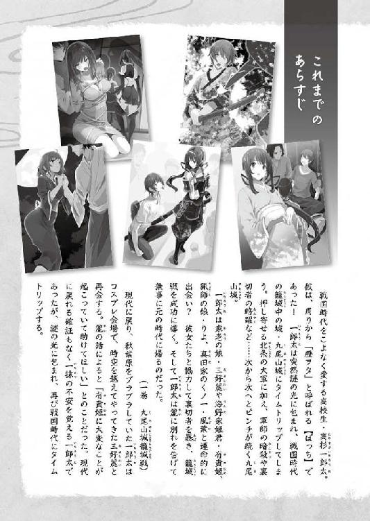
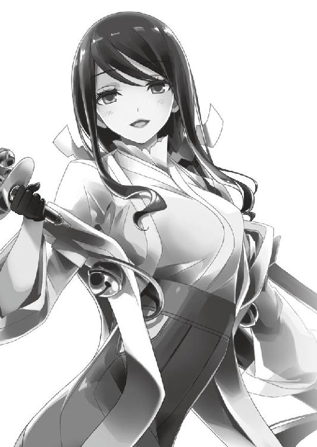

| 桜ノ杜ぶんこ 戦国ぼっち9 | |
| 瀧津孝 | |
| (2016) | |
桜ノ杜ぶんこ
戦国ぼっち９
Mystery of Shingen's Treasure
瀧津 孝

一章 湯煙の再会
両足が、う、動かない！！！
俺の足はふくらはぎまでが沼底の泥土に埋まり、水面が腰の辺りを浸している。
抜こうともがくと、ズブズブとさらに沈み、膝までがすっぽりと泥の中に入ってしまった。これが底なし沼なのか!?
俺の両隣と後ろにいる麗、有貴姫、りよ、沙希も、同じようにこの底なし沼に入り込んでしまい、身動きは取れない。
背後に広がる沼のほとりには、麗の長刀やりよの半弓だけでなく、俺の杖、有貴姫の薙刀、沙希のやがらもがらといった長柄の武器が置いてある。
俺たちが進退窮まっている場所から、たったの二メートル足らずしか離れていない。
長柄のどれかを使えば脱出の糸口をつかめるかもしれないが、そのわずかな距離がどうにもこうにも進めない。
俺たちの真向かい、数メートル先の水面には気を失った雀憐が浮いていた。
いや、浮いているというのは正確じゃなく、水面ぎりぎりまで突き出した岩の上に乗っかっている。〝ゼロポイント〟と呼ばれているような場所だろう。
ほとりの雑木林には、動けない俺たちをあざ笑う複数の敵。
そのうちの一人が、りよの半弓と矢を手に取った。
それは、あの難事件で俺たちを散々苦しめたあいつ！
奴の右腕が、俺に狙いを定めて弓を引き絞る。
キリキリキリ......。
弦の音が、俺の耳にもはっきりと届いた。
これは......雀憐を囮にして俺たちを殺そうという罠だったんだ！
しかし、こんな状況では逃げるどころか、身をかわすことだってできやしない。
麗、有貴姫、りよ、沙希が、ほぼ同時に叫ぶ。
「一郎太様！」
「高杉殿！」
「旦那様！」
「高杉氏！」
ここは甲斐国（山梨県）の中心地・古府中、つまり現代の甲府市の郊外だ。
どうして俺たちがこんな場所にいるのか、それは〝鬼火猩々〟の事件を解決した直後から、順を追って説明しなくちゃいけないだろう......。

俺は、高杉一郎太。現代の東京に住む一七歳の高校二年生......だったんだけど、ひょんなことから戦国時代にタイムスリップしてしまった。
この世界に生きる個性的な美少女たちと次々に出会い、仲間となり、天下人・羽柴秀吉の目に留まって直属の忍び目付なんて任務をやらされる羽目になった上、諸国を巡る旅の中で様々な難事件に遭遇してきた。
そうして、俺が元の時代に戻るための手掛かりを知るであろう謎の巫女・十六夜を追い、やってきたのは当時の日本の首都・京の都。ここで俺たちは、洛中を騒がす妖怪〝鬼火猩々〟の正体を暴き、明智家旧臣による武装蜂起を未然に防いだ。
この功績で、俺は時の帝である正親町天皇から厚い信頼を得て、長い間有名無実の存在だった朝廷直属の名門武士団・北面武士の頭領という思いも寄らない地位を授けられてしまった。
これに伴い、麗、有貴姫、りよ、沙希も北面武士の郎党という身分となり、俺たちは内裏（天皇の居住の場）の中にある小姓たちの詰め所・春興殿に部屋を与えられた。
北面武士の〝北面〟とは、院御所（退位した天皇の御所）の北側の部屋に詰めていたことに由来してるんだけど、この時期上皇（譲位により皇位を後継者に譲った天皇）は存在していないし、内裏の北側に俺たちが寝泊まりできる余分なスペースがなく、どちらかというと南側に位置する春興殿が割り当てられた。
ただし俺たちは、北面武士であると同時に、秀吉主導の太政官・忍び目付も兼務している。秀吉からは行方知れずとなった十六夜を奪還し、誘拐した賊を追捕するよう命じられ、いつでも出発できる準備を整えてはいた。
でも、彼女の居所に関する情報が全く得られておらず、闇雲に動く訳にもいかない。
それで俺たちは、秀吉が全国に張り巡らせている諜報網から何らかの情報がもたらされるのを待ち、当分の間は都に留まることになった。
風葉は、真田家の忍びの師匠であり、上方（近畿地方）方面の草の者（忍者）を束ね、現在は紀伊（和歌山県）で潜入活動をしているらしいくノ一・水乃の帰りを、東山にある如意ヶ嶽麓の忍び宿で待っている。
北面武士としての俺たちの任務は、帝の身辺警護や御幸（外出）の供奉だけれど、正親町天皇が内裏から外に出る予定は当分なく、内裏の周辺は京都所司代から増派された兵士が大勢警衛していて、俺たちがやらなくちゃいけない仕事なんて実際何もない。
それで、数日は内裏の中で体を休めていたものの、することがないんだから退屈の度合いはどんどん増していく。
しかも、ここは帝が暮らし、公卿たちが朝議（朝廷の評議）のため頻繁に出入りする内裏だけに、帝の侍臣からは「殿舎内ではくれぐれも大声で話したり、大きな足音を立てて廊下を歩いたりなさいませんよう。喧嘩争論などはもってのほか。得物（武器）のお稽古は、帝がおわす清涼殿から少しでも離れた場所で、極力物静かになさいませ」と釘を刺されている。これじゃ、窮屈この上ない。
俺と女の子たちの寝所は別々に宛がわれていて、これまでは夜ともなれば俺の寝場所に誰かが潜り込もうとしたり、それを止めようとしたりで一悶着が起こるんだけど、さすがにみんな大人しくしている。
それはさておき、武道の稽古に大きな気合いの掛け声は不可欠だし、それさえ注意しろなんて、朝廷の連中は帝が危険にさらされたばかりだって言うのに武備の何たるかを全然わかっちゃいない。武士に憧れ、自らも武道にのめり込んでいた左大臣の近衛信輔が朝廷の中で異端児だったっていうのは、今更ながらよくわかる。
春興殿に滞在して一週間目の朝。内裏の南端の空き地で、俺は杖の素振りを三〇分ほどやって体をほぐし、麗、有貴姫、沙希を相手に、それぞれの武器で立会い稽古に汗を流した。りよは春興殿の蔵の奥に仕舞われていた古い巻藁を見つけ、庭に持ち出して半弓の的にしている。
麗は、もうすっかり仮面の女・雅ではなくなり、元の麗に戻って俺たちの中に溶け込んでいる。食事の時の箸の使い方がおかしいとか、着物の着方がだらしないとか、事あるごとにこれまでどおり母親みたく突っかかってくるけれど、たまに目が合うと、優しく微笑んだ後、恥ずかしそうに視線を逸らすなんて仕草も見せる。
くう〜〜〜〜、やっぱり可愛い！ 何だろう、このえも言われぬ幸福感は！
あれやこれやと妄想してニヤニヤしている俺を、有貴姫、りよ、沙希が冷ややかな目つきでにらんでいた。
「高杉殿、麗が戻ってきてさほどに嬉しいのですか？」
「そりゃ麗殿が無事に帰ってきてくれたのはあたしだって嬉しいけど、そんな幸せそうな顔、今まであたしたちに向けてくれたことあったっけ？ なあ、りよ殿」
「おら、別にいい......麗様の次で......一緒なら......旦那様と......」
「何が二番目で良いじゃ！ しかも、何故一番が麗なのじゃ！」
「へえ〜、りよ殿は寛大なんだなぁ。あたしは、あたし以外のおなごと高杉氏がいちゃいちゃするのは見てられないけど」
「あの......俺、別にいちゃいちゃしてた訳では......」
反論しようとする俺を押しのけて、「少々お待ちください」と麗が三人に向き合った。
「有貴姫様も、りよも、沙希殿も、そしてわたしも、今では太政官の忍び目付たる一郎太様の正式な家臣、北面武士たる一郎太様の郎党なのですよ。
わたしたちは主たる一郎太様を支え、お助けして、十六夜殿を救出するという困難な使命を果たさねばならぬのです。大事を前にして、斯様に些細なことで、つまらぬ言い合いをしていて何とします！」
「こりゃ、麗！ 偉そうなことを言うでない！ そもそもお前は雅などと名乗り、高杉殿など知らぬ存ぜぬと言い張って、我関せずの態だったのじゃぞ！ その間、わらわや皆がどれほど苦労したか、何も知らぬであろう！」
「〝鬼火猩々〟や明智の残党を相手にした戦いも厳しかったが、安芸（広島県西部）で〝幽霊船〟の黒幕どもと戦った時もかなり骨が折れたしなぁ」
「そ、それは申し訳ございませぬ。わたしが記憶を失っている間、皆様には大層ご迷惑をおかけしたとは思いますが......でも、わたしとて好きでそうなっていた訳ではありませぬ！」
「どうだかのう。雅と名乗っていたお前は、近衛様に懸想（恋い慕う）していたように見えたが」
「そうだそうだ。記憶が戻らなかったら、あのまま近衛様の嫁になってたぞ。高杉氏のことなんか、すっかり忘れてさ」
「さ、左様なことはありませぬ！」
「ないことはあるまいに！」
「そうだ、あるある！」
「ありませぬ!!」
「「あるっ！！！」」
「ないったら、ない！！！」
どんどんエスカレートしていく彼女らの言い合いに、俺は「待って、待って！ ここは内裏の中なんだよ！ 大声で騒がない！」と割って入った。
俺にたしなめられ、麗、有貴姫、沙希はシュンとなる。
「いい子......おらだけ......」
と俺に腕組みするりよを、三人は何も言えずに膨れっ面をしている。
そんな時、雀憐が嬉々として駆け込んできた。
「一郎太、聞いて、聞いて！ 今、北門の門番からごっついええ話、仕入れてきたんや！」
「雀憐、姿が見えないと思ってたら、北門に行ってたのか。あんまり一人でうろうろしちゃダメだぞ」
「どうせ、昨日や一昨日のように、右大臣の菊亭晴季様の口ひげが実は付けひげで、左側のひげをどこかで落としてなくしたまま朝議に出席したとか、公卿の一人が帝の御前で転び、おでこを擦りむいたとか、どうでもよいような中身ではないのか？」
有貴姫が、からかい半分で茶々を入れる。
「今度はちゃうわい！ あんな、一郎太、下京にできた新しい銭湯っちゅうのが、都で大評判なんやて。何でも都にある銭湯の中でも一番広うて、えろう温まって、風呂から出た後は極楽みたいな気分になれるそうなんや。湯上がりに甘酒でも飲もうもんなら、もう言うことなしやで！」
当時は、銭さえ払えば誰でも入浴できる公衆浴場が全国の都市部にはできていたらしい。
ただし、銭湯と言っても現代のように湯が張られた浴場じゃなく、この頃はサウナみたいな蒸し風呂のはずだ。このタイプの風呂なら、〝九頭竜丸事件〟で伊予国（愛媛県）に渡った時、自然の岩山をくり抜いた石風呂に入った経験がある。
でも同時に、のぼせて大失敗した苦い思い出が蘇ってきて、風呂には久しぶりに入りたいものの、あまり乗り気になれない。
「風呂、それは良い！ 季節は秋からもう冬の初め。今のようにぬるま湯で絞った手ぬぐいで体を拭うておるのでは、風邪をひきそうじゃ」
「入る！......温まる！......」
「まことに！ 京の冬は底冷えがいたします。風呂ならば、疲れた心身も癒せましょう。沙希殿も同意されますね？」
「あたしが水軍にいる時は、天気が崩れたら船の上に出て、雨水で体を洗うのが普通だったから、殿舎でもらえるぬるま湯と手ぬぐいだけで御の字なんだけど、風呂上がりの甘酒ってのにはすごく惹かれるな！」
「ならば、無論雀憐も入れて五人全員賛同でございます。一郎太様、参りましょう！」
目をキラキラさせている五人。
まあ、情報待ちで一週間も堅苦しい生活をさせられて、羽を伸ばしたい気持ちもわからないじゃない。
「内裏の警備には京都所司代の兵士たちがいるにはいるけど、関白殿下からいつ十六夜さんに関する情報がもたらされるかわからないからなあ......とは言うものの、あんまり長居はしないってことで、気分転換に行ってみようか」
「「「「「はいっ！」」」」」
俺たちは、秀吉の指示で京都所司代の前田玄以が用意してくれた真新しい外出着に着替え、内裏を後にした。

俺たちがいる天正一三年（一五八五）の京の都は、北側に「上京」、南側に「下京」という大規模集落が形成され、ひょうたん型のような市街地の周囲は堀代わりの溝に囲まれている。
上京には主に武家、公家、寺社関係者、下京には商工業者が数多く住んでいた。
俺たちは、洛中のど真ん中を南北に走る室町通りを南下し、内裏がある上京から下京へと入る。
洛中は、碁盤の目のように大路と小路が規則正しく交差している。
雀憐が聞き込んできた新しい銭湯は、南北ラインの烏丸小路と、東西ラインの綾小路が交わる地点から東へ少し入った場所にあった。
小さな木造家屋や商店が密集している下京にあって、この銭湯は飛び抜けて大きな建物で、二等辺三角形の破風屋根を備えていて御殿みたいな外観だ。入口の前には、風呂の温度調整や番台業務を兼ねる三助（銭湯の従業員）が立っていて、一人一〇文の入浴料を徴収している。
俺が六人分の料金を三助に渡すと、「おいでやす〜〜」と白い長襦袢に赤い腰紐を締めた若い湯女が入口から出てきて、屋内へとぐいぐい引っ張っていった。
湯女は、銭湯で働く女性従業員の名称だ。
中はかなり暗く、よく見えないけれど、脱衣場には何人かの客がいる気配がして、それぞれ一人ずつ湯女が付き、世話をしてるようだ。
「お風呂へはふんどし一つでお入りを。たんと汗をかかはってから、洗い場にお連れしますさかい」
小袖をするすると脱がした湯女は、湯気がもうもうと漏れ出てくる一室の中に俺を押し込んだ。
俺のふんどしは、今じゃもう穴だらけになった例の勝負パンツだ。何度も手洗いを繰り返してるうち、金でプリントされてた真田家の家紋や真田親子の花押は大部分はげ落ちてしまい、もはや何の価値もないボロパンツになり果てている。
多分一五畳くらいの広さで、やっぱりすごく暗いんだけど、たくさんの人が寝っ転がっているのはわかる。ここの風呂は、床下に沸騰した湯をどんどん流し、板の隙間から上がってくる蒸気を利用した蒸し風呂らしい。
すごくシンプルなサウナ風呂なんだけど、一〇分くらいじっとしていたら体がどんどん温まってきて、二〇分程もいると体中から汗が吹き出てきた。うん、なかなか心地良い！ 麗たちも、女湯の方でリラックスできてるだろうか。
体の奥底からぽかぽかし、大量の汗を出した俺は、風呂から出た。すると、俺を担当する湯女がきちんと待ってくれていて、今度は手を引っ張って隣の洗い場に連れて行く。
利用客は一列にならんで、木製の風呂椅子に座り、湯女が垢を擦って湯で流してくれる。
入口に近い脱衣場よりも奥にあり、板囲いの仕切り壁があるから風呂と同じくらい暗く、両隣にいる客の姿形すらほとんど見えない。
でも、周りからは軽石で体を擦る音、出た垢を湯で洗い流す音、湯女の笑い声とかがうるさいくらいに聞こえてくるから、洗い場には二、三〇人、いやもっと多くの人間がいるようだ。
俺の背中を軽石で擦っていた湯女が、突然背中にしな垂れかかってきた。
「お客はん、もうちょっと銭を奮発してくれはったら、別の場所で、もーーーっとええことさしてあげますえ」
「ええっ!?」
〝ええこと〟って言うのは、つまり、もっとエッチなことであって......この湯女は売春みたいな話を持ちかけてきてるのか？
そう言えば、これは戦国じゃなくて江戸時代の話だけど、湯女が客に性的なサービスをするもんだから、銭湯の風紀が乱れて風俗店みたいになってるのを問題視した幕府は、湯女風呂の禁止令を何度も出してたっけ。
「あ、あ、あの......そーゆーことは、今ちょっと間に合ってるんで、べ、別の人に持ちかけてもらえませんか......」
俺は彼女を振り払おうと背中や両腕を動かすと、湯女は「ふん、何やね、若いくせに。根性なしのケチ！」と捨て台詞を残して案外簡単に離れ、軽石をポイと放り出してどこかへ行ってしまった。
やれやれ、垢擦りは自分でやんなくちゃいけないのか......。落ちた軽石を取ろうとしたら、俺よりも先に後ろから手が伸び、またまた湯女が背中に抱き付いてきた。
「ちょっと、もういいですって......軽石、こっちに渡してください」
「ううん......やる......おらが......」
ん？ さっきの湯女じゃない！ この声......まさか......。
「りよさんなの!?」
振り向くと、目と鼻の先にりよの顔があった。
暗い屋内だけど、もう目も段々慣れてきて、半径一メートル以内ならどうにか物の姿形が見える。
俺の前にいるのは、白い大きな布を胸から腰にかけて巻いた湯巻姿のりよだった。
「どうして、りよさんがここにいるの！ ここは男湯だよ。女湯に戻んないと！」
「おんな......ゆ？」
りよは、全く思い当たらないのか、真面目な表情のまま首を傾げた。
そうか、忘れてた！ この当時の銭湯って、混浴だ！
ついつい現代の感覚で、男は俺一人だから女の子たちと別れて男湯に入っていったつもりでいたけど、銭湯で混浴が少なくなり、男湯と女湯が一般化するのは江戸時代も後期に入ってからだったはず。
あ、確かに！ 近くで湯女と喋ってる客の声......よーく聞くと、どれも女性じゃないか!!
「女町衆......寄り合いの流れ......銭湯に......」
「えっ？ 町衆って言えば、京の裕福な商人や職人のことで、洛中の自治にも関わってる人たちだよね。つまり......その女将さんたちの寄り合いがどこかであって、みんながこの銭湯に流れてきてるのかい？」
「言ってた......湯女が......おばさんだらけ......」
そう言われてみれば、周りから聞こえる女性客の声は、若い娘というのじゃなく、もっと低くて落ち着いたトーンだ。
じゃあ、この同じ場所に、麗や有貴姫や沙希も！
それにしても、りよのこの姿。薄い布を巻いているだけだから、ボディラインがはっきり、くっきりとわかる。しかも、風呂で一杯汗をかいてるから、布がピタッと体にくっついて、肌の色が透けて見えるようだし、おっぱいの形も生に近いリアルさで目に飛び込んでくる。こんなのちょっと、えっち過ぎるぞ〜〜〜〜！！！
「りよさん、そんな恰好で風呂に？」
少しの間、りよの曲線美に目が釘付けになっていた俺は、正気に返って視線を逸らした。
「おなご......みんな、湯巻......貸してくれる......」
なるほど、この時代、銭湯は男も女も素っ裸では入れないんだ。
「他のみんなは、どこなの？ もう風呂から出て洗い場に？」
「それより......垢擦り......する......」
質問には答えず、りよはニコリと表情を崩した。と見るや、俺の両肩に手をかけ、クルリと後ろを向かせ、風呂椅子に座らせる。そして次には、背中から抱き付くようにして、後ろから伸ばした手で俺の首筋や胸の辺りをゴシゴシやり出した。
一枚の薄い布を通して、柔らかいりよのおっぱいが背中に押し当てられている。
陶然......と同時に、風呂のせいだけじゃなく、顔が火照って真っ赤になっているのが自分でもわかる。
いや待て！ 俺は何を悠長なことしてるんだ！ この銭湯の中には、麗たちもいるんじゃないか。
もしこんな姿を彼女らに見られようものなら、また一騒動起こってしまう。
「り、りよさん、垢擦りしてくれるのは嬉しいんだけど、ちょっとくっつきすぎだよ。それに、もう自分でやるから、君も湯女に垢擦りをやってもらった方がいいんじゃ......」
「できない......背中......一人で......」
「いや〜、背中は......えっと......さっき、湯女にやってもらったから......」
「やってない......見てた......」
「えっ！ 見てたの？ って、だからその......」
「やる！......おらが！......」
振り向いた俺に、りよはガバッと抱き付いてきた。
「わわわ！」
俺がりよを体から離そうと、組んずほぐれつしている最中だった。
「りよ殿を見つけたぞ！ 高杉氏も一緒だ！」
すぐ側で、若い女の声が響いた。これは......沙希！
間をおかず、ドタドタとこっちに複数の人間が向かってくる気配がして、目の前に三人が現れた。
麗、有貴姫、沙希！ みんなりよと同じ白い湯巻を身に着け、汗だくになっている。
バストがどーんと突き出した有貴姫、形の良い隆起の沙希、そして......控えめな感じの麗。悩殺美少女シスターズ！ とか名付けちゃってもいいくらいの衝撃度だ。
でも、三人の顔つきはとてもエッチっぽいなんてもんじゃなく、明らかにぷりぷりと腹を立て、白い目で俺とりよを交互ににらんでいた。
「このところ大人しゅうしておると思うていたら、またこれじゃ！ わらわを差し置いて、抜け駆けは許さぬと申したであろう」
「違う...抜け駆け......早い者...勝ち」
「駆けっこをしておるのではない！」
激昂する有貴姫に手で待ったを掛け、麗が一歩前に出る。
「早い遅いを言うているのではありませぬ。斯様な公衆の面前で、はしたない真似をしてはならぬと申すのです」
「失格......麗様......」
「どういう意味です、りよ？」
「した！......いちゃいちゃ......近衛様と......公衆の面前」
「そ、それは、わたしが記憶を失っていた折のことで......」
「他人......じゃない......同じ麗様......」
「りよ殿の指摘は一理あるが、かといって、りよ殿が高杉氏を捕まえて、一人だけそんな風にくっついてるのは良くないと思うぞ」
助け船ではあるものの、「一理」という言い方をした沙希に対し、麗がすかさず不服そうに反論しようとする。が、それより先に言い返したのはりよだった。
いつもののんびりした雰囲気とは異なり、今日の彼女は結構丁々発止でやり合っている。
「できない！......垢擦り！......くっつかなきゃ！」
「ならば、左様なお世話はわらわに任せよ！」
軽石を奪おうとした有貴姫からひょいと逃れ、りよは風呂椅子に座ったままの俺の後ろに隠れる。
「小癪な！」
有貴姫が俺たちに覆い被さるようにして、りよの持つ軽石を取ろうとする。
「おいおい、垢擦りならあたしにだってできるぞ！」
軽石争奪戦に沙希も加わり、俺は三人に挟まれ、もみくちゃにされる。
止めなきゃいけないんだけど、湯巻しか身に着けていない三人の柔らかな肌が、とりわけそれぞれ大きさや形は異なるものの十分ふくよかなおっぱいや、ちょっと弾力のあるお尻が何度も俺の体の至る所にぶつかってくる快感のせいで、善の心と悪の心が葛藤して〝無力な男〟と化している......ああ、何て背徳的なシチュエーションなんだ。
「あなたたち、いい加減にしない！」
見かねた麗が、俺から三人を引きはがそうとしたんだけど、結局三人の取っ組み合いに巻き込まれ、俺はなされるがまま、ますます腰が抜けちゃいそうなもみくちゃ状態へと陥っていく。
と、風呂の方が何やら騒がしくなってきた。
「キャーーーー！ 誰や、あてのお尻触ったん！」
「うちは、お乳をさすられたーーーー！」
銭湯に痴漢が現れたのか!? まあ屋内はこんなに暗いんだし、しかも混浴ときたらそんな輩が出てきても全然おかしくない。
「捕まえろ！ そっちへ逃げたぞ！」
「えらいすばしっこい奴や！」
どうやら三助たちが風呂の中に入り、捕り物劇になってるようだ。
女の子たちは取っ組み合いを止め、俺と一緒に風呂のある方に目を凝らした。
だけど、依然として中は暗いし、仕切り壁もあるから何がどうなってるのかはわからない。
バキバキバキ！
突然、風呂と洗い場との間にある仕切り壁が破り倒され、誰かがこっちに向かって猛然と駆け込んできた。
俺の前に立っている麗と有貴姫が、左右にぴょんと避ける。
同時にすごい衝撃がおでこに走り、俺は風呂椅子に座ったまま仰向けに倒れた。
目から星が出る......とはこんなことを言うんだろう。
俺は痛みを堪えつつ、上半身を起こした。
真ん前には、小柄な男が額を押さえながら同じように「痛たたたた......」とへたり込んでいる。こいつと正面衝突したって訳か。
「痛いのはこっちもだよ。ちょっと、あなた、何だって無闇に突っ込んでくるんですか！」
愚痴る俺のおでこに、麗が顔を近付ける。
「あら〜、たんこぶになっております。一郎太様、早く冷やさないと」
その言葉に、男がピクリと反応し、こっちに顔を見せた。
「一郎太？ お前、高杉一郎太やったんか！」
えっ？ えっ？ 俺の名前を知ってるなんて、誰なんだ？ でも、どこかで聞いたことのあるこの声は......。
俺は男に顔を近付け、まじまじと見つめるうち、「！」となった。
「あなたは......ま、孫兵衛さん!?」
そうだ。安芸の草津城で別れたきりになっていた百姓の孫兵衛だ！
「おお、そうや、わいや！ もしや、そこにおるのは麗殿か！ 生きておったのじゃなぁ！ 良かった！ ほんまに良かった！ それに、有貴姫様、りよ殿、沙希殿、みんな揃うておるやないか！」
くしゃくしゃの笑顔になった孫兵衛は、膝立ちの姿勢で麗に擦り寄って手をなでるように握り、同じ動作を有貴姫、りよ、沙希に繰り返す。
しかし、女の子たちは孫兵衛のスケベな手癖の悪さを知っているだけに、警戒して腰を引き、冷ややかな対応に終始している。
孫兵衛は、最後に俺の両手をギュッと握り締めた。
「あれから随分と苦労したみたいやな。安芸の海でも、そしてこの京の都でも」
「孫兵衛さんの方こそ、草津城で急にいなくなってから、何処に行ってたんですか？ それに、どうして京に？」
「安芸ではちょっと野暮用があってな。それにあそこにおっても退屈やからのぅ。そこは楽隠居の身。お前たちが京へ行ったと聞き、どうにも気になって追っかけてきたんやないか。そやけど、都に着いて早々、こうやって巡り会えるとは、これもわいの日頃の心がけと御仏のお導きのお陰や。南無阿弥陀仏、南無阿弥陀仏......」
孫兵衛が俺の両手を捧げるようにして念仏を唱えていると、頭上にいきなり提灯がかざされ、周囲がパッと明るくなった。
提灯を持っているのは脂ぎった顔をした商人風の中年男で、その両脇を三助や用心棒らしい大男数人が固め、俺たちを見下ろしている。
あられもない姿を男たちに見せたくない麗、有貴姫、りよ、沙希は、胸を押さえて咄嗟に俺の後ろに隠れる。俺だって、こんなお宝ショットを赤の他人にタダで見せてやるほど心が広くない。立ち上がり、壁のように両手を広げた。
「お客はんは、このじいさんのお連れどすな？」
そう尋ねられた俺は、少し返答に戸惑った。とにかく、嫌な予感しかしない。
「いや、連れというのとは、ちょっと違うような......」
「一郎太、何ちゅうつれない言いざまや。わいらは瀬戸内で共に旅をし、手強い敵を相手に戦うてきた仲やないか！」
どこまで本気なのか、殊勝な顔で哀願する孫兵衛を、有貴姫が俺の肩越しに呆れた目つきで見る。
「待ちやれ、おじじ。そちは、いつも大事な場面で姿をくらましておったではないか！」
「何を言う！ ちゃーんと一番大事な局面では、窮地のお前たちを助けに出てきたであろう？ 草津城での出来事を思い出してほしいわい！」
そう言って、孫兵衛は這うようにして女の子たちの背後に回り、顔だけ出した。
「まあ、どっちにせよ、縁浅からぬお知り合いなんは間違いなさそうや。わては、この銭湯の主で、万吉という者どす。このじいさまには、昨日からほとほと手を焼いてましてな。銭も払わんと、朝な夕などこから潜り込みよるのか、風呂の中でおなごのお客はんやら湯女やら、見境なしにお触りをしよる。
捕まえようとしたら、これまた逃げ足の速いこと速いこと。そやけど、こうしてやっと尻尾を捕まえました」
「孫兵衛さん！」
振り向き様に俺が怒鳴りつけると、孫兵衛はシュッと顔を引っ込めた。
「まあまあ、そう熱うならんと。わても、手荒な真似をしようというのやあらしまへん。お見かけしたところ、お客はんは髷こそ結うてはらへんが、それなりの身分のお方らしい。ここは一つ、話し合いで解決といきまひょ」
「話し合いですか......？」
主のニヤニヤ顔を見てると、俺たちにとってあんまり都合の良い話にならなそうなのは何となく想像できる。
でも、このスケベじじいをこのまま見放すわけにもいかないだろう。
俺は大きな溜息をついて、主にうなずいた。

着替えを済ませ、銭湯から出てきた麗も、有貴姫も、りよも、沙希も、孫兵衛をジト目でにらみ付けている。
「いやあ、みんな、済まなんだのう。えらい、迷惑をかけてしもうて」
口では謝ってるんだけど、孫兵衛のケロリとした顔を見ていると、どうもあんまり反省してそうにない。
「あのねえ、孫兵衛さん、結局、これまでの迷惑料に、壊した仕切り壁の賠償も加えて、持ってたお金を全部巻き上げられちゃったじゃないですか。あのお金は、これからの旅の費用に充てなきゃいけないのに、どうしたら......」
弱り果てる俺に、麗が「それはそうですが......」と顔を向けた。
「あの仕切り壁に描かれていたという、狩野派の始祖・狩野正信の絵というのは本物なのでしょうか。どうにも胡散臭うございます」
「麗の言うとおりじゃ。あのように中を真っ暗にしておいて、しかも湯気で絵がすぐにも傷んでしまいそうな場所に、狩野派などと信じられぬ」
「花鳥図だったっけ？ あんな派手に大穴を開けて、万が一本物だとしたら、さっき支払ったような金額じゃとても賄えないぞ。あたしも偽物だとは思うけど、それをこっちがきちんと証明できないしなぁ......」
麗と有貴姫と沙希は、多額の賠償金を吹っ掛けてくる銭湯の主に随分食い下がったんだけどラチが明かず、このままじゃ水掛け論にしかならないから、結局俺の手持ちの金を全部払うことで決着をつけた。
大事な任務を前に、こんな場所で面倒を起こして、時間を浪費してはいられない。
「まあ、そうくよくよするな。金は天下の回り物というやないか」
「おじじが偉そうなことを言うでない！」
有貴姫にピシャリと言われ、孫兵衛は首をすくめる。
ん？ しかし俺たち、何か大事なものを忘れてないか？
「雀憐！ 雀憐がいない！」
俺の言葉で、女の子たちもやっとそれに気付いた。
「まさか、誰ぞにかどわかされたのでは？」
麗の発した憶測に、みんながドキリとなる。
「まだ銭湯にいるんじゃ？」
俺が建物の中へ戻ろうとした時、その入口から上機嫌の雀憐が出てきた。
「いや〜〜〜〜、ええお風呂やった〜〜〜〜！ 汗も垢もすっかり洗い落として、お肌もすべすべや〜〜〜！ あっ、一郎太に、みんな、あてを外で待っててくれたんか？ おおきに〜、次は甘酒やな！」
どこまでのんきな奴なんだ。
「雀憐、今までずっと銭湯の中にいたのか？」
「ああ、そうや」
「中で散々大騒ぎになってるのに、気付かなかったのか？」
「うん？ 何かざわざわしてるとは思てたけど、お風呂があんまり気持ち良うて、中で居眠りしてしもたんや〜。で、何かあったん？ そこにいる爺やは誰？」
「わいは、孫兵衛じゃ。一郎太の以前からの連れでな。尾道水軍の眼鏡娘の姿がないと思うていたら、その代わりにこの可愛い童が加わったのか。一郎太はえろう年の離れたおなごからもモテるんじゃのう、ひゃっひゃっひゃっ」
「モテてるんじゃなくて、この娘は、俺たちが探している巫女さんの弟子なんですよ」
「一・番・弟・子な！ それに孫爺、あては童とちゃう!!」
間髪を入れず、雀憐が突っ込む。しかも、孫兵衛のことを、もう「孫爺」なんて馴れ馴れしく呼んじゃってるし。
「それはそうとして孫兵衛さん、以前は安芸のなまりで喋ってたと思うけど、今は京や大坂のなまりになってません？」
「おっ、一郎太はえらい耳がええのう。ま、郷に入っては郷に従えや。それに、わいは元々上方の生まれやからな。それほどおかしな話やない」
「上方生まれねぇ......」
どうにもこの孫兵衛というじいさん、怪しすぎる。
安芸の草津城で、孫兵衛は毛利家当主・輝元の叔父・吉川元春と友であり同志だとも言っていた。一介の百姓が、毛利家の重鎮とそんな関係だなんて、考えられない。
きっと俺たちに何かを隠している。孫兵衛の正体って、一体......。
パカッパカッパカッ......。
そこへ、一頭の馬に乗った侍が、こちらへ駆け寄ってきた。
「高杉様、こちらにおいででしたか！ お探ししましたぞ！」
馬上から呼び掛けてきたのは、京都所司代で世話になっている高級官僚の福住源之丞だ。
「治部少輔様が都に入られました。高杉様に急ぎの御用向きがあるとのこと。すぐに所司代までご同道くだされ」
治部少輔という官職名で呼ばれるのは、関白・羽柴秀吉の側近中の側近、石田三成。
大坂城にいた三成が、京までやってきたとなると、いよいよ十六夜に関する何らかの情報が入ってきたのかもしれない。
俺にも、女の子たちにも、一斉に緊張が走った。
二章 信玄の埋蔵金
京都所司代が入る二条第は、京における秀吉の拠点であり、上京と下京の間、都のほぼ中央部にある城郭だ。
京都所司代の屋敷に急行した俺たちは、石田三成と所司代の責任者である前田玄以が待つ部屋に通された。孫兵衛だけは、堅苦しい場に出向くのは嫌だと言って、二条第の外で待っている。
三成と玄以に相対した俺の後ろに、麗、有貴姫、りよ、沙希、雀憐が控える。
「高杉、息災で何よりじゃ。〝鬼火猩々〟と明智の残党が仕出かした騒動では、まことにご苦労であった。その手腕、関白殿下が何かとお主らを贔屓になさるのも、ようわかる」
「いや全く、治部殿、この高杉殿がおられねば、今頃都はどうなっていたやら」
三成も玄以も満足そうだけど、今回の事件は単に明智の残党だけが関わっていたんじゃない。背後で糸を操っている黒幕って......。
「石田様、前田様、しかし、帝を襲い、十六夜さんをさらった賊の見当はまだ俺にも......。明智の残党ではなく、関白殿下に敵意を抱く、何者かの仕業なのは間違いないのですが」
「そのことよ、高杉」
三成は、話を続けた。
「消えた巫女の消息だが、殿下が全国に張り巡らしておられる忍びの網に引っ掛かった。それは......甲斐国じゃ」
「甲斐!?」
と言えば、現在の山梨県。そんな所にまで十六夜は連れて行かれたのか！
甲斐は、かつて織田信長と天下の覇を競った名将・武田信玄の本拠地だ。その信玄が居城としたのが、古府中にあった躑躅ヶ崎館。甲府盆地の中央に近い扇状地に築かれ、堀に囲まれてはいるけれど、城というよりは館という形容の方がぴったりの外観だったらしい。
主曲輪が二〇〇メートル四方という小規模な城郭で、平地にあるから防御力はほとんどないに等しい。敵が攻め寄せてきた時には、近くにある要害山城に立て籠もる段取りにしていたようだけど、もし奇襲とかされたら館はイチコロだったんじゃないだろうか。
信玄が遺したという歌「人は城 人は石垣 人は掘 情は味方 仇は敵なり」は、戦国ファン以外の人たちにも案外知られている。
彼の戦いを記した戦国末期の軍学書「甲陽軍艦」では、この歌について触れ、『信玄は戦さとなれば無敵であり、味方の城を一つとして奪われたこともないため、本国・甲斐で強固な城郭を構える必要がなく、躑躅ヶ崎館もただの屋敷構えで済ませてきた』と記している。武田軍団の兵士こそが、城であり、石垣であり、堀であると。
信玄の率いた武田軍は、戦国最強とも評され、周辺諸国から恐れられた。
彼が人生最大の動員戦力によって開始した西上作戦では、三方ヶ原の戦いで徳川家康をこてんぱんに破り、畿内を制圧していた織田信長を窮地に追い込んだ。
でも、元亀四年（一五七三）四月、この作戦の途中で信玄は持病の悪化によって急死。この後、武田家は、滅亡への坂を転げ落ちていく。
「忍びからの知らせによると、つい最近躑躅ヶ崎館に他国者の若い巫女が入り、手負いの兵士や近在の病人たちを不思議な法術で治癒しているという。恐らくこの巫女が、お主らの言う十六夜であろう」
「十六夜さんは、城館で囚われているのではないのですか？ 今のお話だと、客人のように扱われているようですが」
「うむ、わしもそこのところが腑に落ちぬ。ただし、巫女は城館に入ってから一歩も外には出ておらぬようだ。城館内で外部の者と接触はできておるようゆえ、監禁、拘束と言うよりは、幽閉に近いのかもしれぬ」
「今、甲斐を治めているのは、徳川家康ですよね？」
俺は甲斐の支配者の変遷を、頭の中で一旦整理した。
織田信長は武田家を滅ぼした後、甲斐に重臣の河尻秀隆を入れた。
ところが信長が本能寺の変で斃れると、織田家中の大混乱に乗じて起こった武田遺臣による一揆によって秀隆は殺されてしまう。甲斐は統治能力のある人物がいない空白地帯となり、東海地方を支配していた徳川家康の進駐を許す。
天正壬午の乱と呼ばれる織田旧領争奪戦で、家康は同じく空白地帯となっていた信濃をも手に入れ、三河（愛知県東部）、遠江（静岡県西部）、駿河（静岡県中東部）を含めた五か国を領有する大大名へと一気にのし上がった。
家康はこの基盤があったからこそ、織田家から台頭し、天下人となっていく秀吉に対抗できたんだ。
「巫女誘拐の黒幕が家康となれば、事は厄介じゃ。〝鬼火猩々〟の一党は、巫女を護衛する殿下の衛兵も殺めておる。羽柴家と徳川家とは、小牧・長久手の戦さの後、和睦しておるというに、それでは明らかな敵対行為。事と次第によっては、再び徳川との大戦さが勃発しかねぬ」
「関白殿下は、徳川との戦さをもう望んでおられませんよね？」
「今の殿下の威勢であれば、徳川を力でねじ伏せることはできる......が、我が方も多大な犠牲を払わねばなるまい。左様な戦さを、殿下は好まれぬからな......それよりも、忍びからもたらされた気になる知らせが、今ひとつ」
「まだ何か？」
「うむ、それが......躑躅ヶ崎館では、武田信玄の埋蔵金に関わる噂で持ちきりなのだそうだ」
「武田信玄の......埋蔵金!?」
「武田家滅亡後、遺臣の多くを徳川が召し抱えた。その遺臣たちの話から、かつて信玄が莫大な金塊を何処かに隠したという風聞が家中で広まったらしい。
しかも、その在処を知る人間が、近いうちに躑躅ヶ崎館に連れてこられるという。そんな噂が立った直後、巫女が館に入ったのだ。埋蔵金と巫女との関わりは今のところ全くわからぬが、これは偶然の符合とも思えぬ。
それに、殿下はこの埋蔵金について、大変興味を持っておられてな。
高杉には、この噂の真偽も確かめてもらいたい。事実となれば、その埋蔵金を徳川の独り占めにさせぬ手立てをこちらでも考えねばならぬ」
信玄が〝戦国最強〟と言われるほどの戦力を持ち得る源泉となったのは、「甲州金」と呼ばれる軍資金だ。
戦国時代に入って全国では金山の開発が積極的に行われたんだけど、甲斐は元々鉱物資源が豊富で、黒川金山や湯之奥金山といった良質な金山に恵まれた。
金山衆と呼ばれる職能集団によって大量の金が採掘、精錬、生産され、「甲州金」は領国貨幣としても流通していたんだっけ。
武田信玄の埋蔵金については、現代でも都市伝説やミステリーの一つとしてテレビ番組とか雑誌とかにもたまに取り上げられている。それが本当に存在していたんだろうか？
だけど、信玄の埋蔵金と、京で生まれた若い巫女との間に、一体どんな結び付きがあるって言うんだろう。......それは、ここでいくら考えていたって無駄だ。
「とにかく、行ってみないことには、何もわからないんですね......躑躅ヶ崎館へ」
後ろを向くと、麗、有貴姫、りよ、沙希が、キッと口元を引き締め、俺に対してうなずいた。
「家康は殿下に臣従している訳ではないが、和睦をしておる手前、表立ってお主らに危害を加えるようなことはあるまい。しかも、高杉は今や北面武士でもある。
これは殿下のお考えだが、帝には家康に宛てた勅語書を認めていただき、お主には朝廷の使者として甲斐に入ってもらう」
「朝廷の使者ですか？」
「今後は私戦を禁じ、天下安寧のために尽くすよう命じる勅語書じゃ。
殿下はさる一〇月、九州での私闘を禁じる惣無事令の書状を薩摩の島津に送ったばかり。要は同じ中身なのだが、朝廷の使者となれば、家康とてうかつには手を出せぬ。
しかも、家康の朝廷に対する崇敬の度合いは、東国武将の中でも一際高い。それ故、いきなり躑躅ヶ崎館を訪ねたとて、徳川の家臣共もお主らをゆめゆめ疎かには扱うまい」
「正々堂々と門を叩けばよいのですね」
「そうだ。ただし、巫女が十六夜本人で、内裏を襲った賊が徳川の手の者であり、家康に逆心ありと認めた場合は、速やかに巫女を奪い返し、その得意の機知と武術の腕でどうにかしてこの上方まで戻って参れ」
「わかりました！」
とキッパリ答えてから、俺は大事なことを思い出し、気まずい表情で三成を見た。
「あの......甚だ申し上げにくいのですが、実はいろいろありまして、いただいた路銀（旅に必要なお金）を全て使い果たしてしまい、少し融通していただけないでしょうか？」
「お主！ あれだけの金子を、まさかもう使ったのか!?」
三成は呆れた顔をしていたが、やがてフッと笑みを浮かべた。
「全くしょうがない奴だ。まあ、お主らがこれまでにこなしてきたのは、普通の侍では到底なし得ぬ難儀な任務ばかり。知行取りにしてもらったのは良いが、それとは別に、今少し報奨金を弾んでもろうてもな。よし、わかった。金は後で内裏に届けてやろう」
「石田様、ありがとうございます！」
ガバッと平伏した俺に倣い、後ろの女の子たちも一斉に頭を下げる。
さあ、これで何の心配もなく出発できる。甲斐の躑躅ヶ崎館へ！
こんなにあっさり、しかも好意を持って認めてくれるなんて......俺に対する期待もあるんだろうけど、高慢で堅いイメージがある石田三成には、こんな風に意外と人間的で融通の利く一面もあったのか......。

京から甲斐の躑躅ヶ崎館までは中山道を通り、近江国（滋賀県）、美濃国（岐阜県南部）、を経て、信濃国（長野県）の下諏訪。そこから分岐する甲州街道を南下し、甲斐の中心都市である古府中まで、距離にして四〇〇キロ以上ある。
徒歩なら二週間くらいかかる行程なんだけど、俺たちは三成の計らいで馬を与えられ、一週間ほどで古府中の郊外にたどり着いた。走らせたりすればすぐにへばっちゃうから、常歩での移動とはいえ、それでも徒歩よりかは随分早かった。
風葉は、遅れている水乃の帰りを待ち、これまでの道中で見聞した西国の諸情報や、京で起こった事件の詳細を伝えてから、すぐに俺たちの後を追うということになっている。
秀吉の勢力範囲である美濃と家康の支配エリアである信濃の国境には厳重な関所があり、俺たちが朝廷の使者であると説明し、勅語書の封紙を見せると、徳川の関守はたちまち辞を低くして通してくれた。
与えられた三頭の馬には、手綱を取る麗の後ろに雀憐とりよ、有貴姫の後ろに沙希、そして、何故だか乗馬も上手い孫兵衛の後に、しょうがなく俺が乗っている。
出発前、誰と誰が一緒に乗るかで大もめした末、結局こんな組み合わせに落ち着いちゃった。
孫兵衛は「なんでお主と相乗りなんじゃ〜」と面白くなさそうに嘆いてるんだけど、それはこっちだって同じだ！ もし孫兵衛を誰か他の女の子と乗せようものなら、きっとまたスケベなマネをするに違いない。
京での滞在中、武器以外の防具や着物は全員分が新調された。俺の場合、小袖だけは麗のお手製を宮廷女官が綺麗に洗ってくれ、新しい袴、胴丸と一緒に着用している。麗は鎧下着と四幅袴の上から、ウエストが締まった体にピッタリの胴丸。有貴姫は派手な模様の小袖と袴の上に、軽めの女性用胴丸。沙希は鎧下着と袴に、草摺（腰を覆うスカート状の防具）に水を含んで重くならないよう組糸を少なくし、大きめの板札で綴り合わせた水軍用の胴丸。りよは身軽に動ける山吹色の小袖のみ。雀憐は白の小袖に緋袴。
女の子たちは久しぶりに小綺麗な衣裳を身にまとい、京を出発する日なんて、難しい任務が控えてるっていうのにウキウキした様子だった。
旅の途中、特に信濃からは山間部ばかりを通らなければならない中山道、甲州街道では、初冬だけあって小雪がちらつく日もあり、三成が全員に用意してくれたクマの毛皮は想像以上に温かくってすごく重宝したのも忘れちゃいけない。
甲府盆地を南北に流れる荒川の手前まで来たのは、昼前だった。この日は快晴で、やわらかな日差しが降り注ぐ小春日和だ。川の流れは結構急で、近在の領民は渡し船を使っている。でも、俺たちは馬に乗ったまま川に入り、どうにかこうにか渡りきった。荒川を越えれば、躑躅ヶ崎館まではもう目と鼻の先だ。
「腹が減った」と雀憐がぐずりだしたので、渡し場の側にある茅葺きの茶屋で腹ごしらえし、一休みしてから躑躅ヶ崎館へ向かうことにした。
茶屋では、ほうとうを振る舞ってくれ、食いしん坊の雀憐はそれだけでも大喜びだ。
ほうとうは、小麦粉を練った太い麺と、カボチャ、シイタケ、白菜、シメジなどの野菜を味噌で煮込んだ甲斐の郷土料理で、あの武田信玄が考案したなんていう説もあるんだけど、真偽の程はわからない。でも武田軍では、鍋ですぐに作れ、栄養満点なほうとうを兵士の戦中食にしていたというのは多分事実だろう。
そう言えば、料理が余技（趣味）だと言ってた風葉の得意メニューはほうとうだったっけ。聞いただけで、未だに食べさせてもらったことはないけど、風葉の作るほうとう......きっと、美味しいんだろうな。
おかわりまでして満腹になった雀憐は、俺が座る同じ縁台の上で仰向けになり、居眠りを始めた。
「おい、雀憐、こんな所で寝てると、風邪ひいちゃうぞ」
俺が肩を少し揺すると、雀憐は「むにゅむにゅ......」と寝言を言い出した。
「ねんねろ......くちのなか......とらのこじゃ......ねろろ......」
「虎の子の口の中が、どうしたというのじゃろう？」
側にいた有貴姫が、雀憐の寝顔をのぞき見ながらつぶやく。
その声に重なって、チリリンと鈴に似た音色が遠くから聞こえたような気がした。その途端、雀憐がガバッと起きたかと思うと、「十六夜様！」と叫んで茶屋から飛び出した。
何が起きたのか訳がわからない俺たちは、ほんの少しその場でポカンとなった。
「一郎太様、雀憐を追わねば！」
麗に促され、俺たちは慌てて雀憐の後を追おうとした。
しかし、古府中の中心部へ続く街道の先に雀憐の姿はない。
どうやら、街道脇の草むらの中へ入っていったようだ。
「雀憐ーーーーー！」
大声で呼び掛けても、返事はない。俺たちは手分けして探すことにした。
街道の西側は比較的見通しの良い草むらが広がり、荒川の支流が流れている。
俺と麗、有貴姫とりよ、沙希と孫兵衛の二人三組になり、特に人の背丈ほど伸びた葦が密生している街道東側の茂みへと分け入った。
「雀憐は何故、急に？」
葦をかき分けながら、麗が俺に尋ねる。
「んー、何だろう......ひょっとして、あの音」
「音？」
「遠くから聞こえた鈴みたいな音！ 麗さんは聞こえなかった？」
「そう言われてみれば......」
「あれを聞くなり、雀憐は飛び起きて『十六夜様！』と叫んだんだから、もしかすると十六夜さんと関わりがあるのかも」
「鈴のような音......でございますか」
鈴の音の意味するところが、麗にも俺にも皆目見当つかない。
チリリン......。
そんな話をしている時、俺は地面で何かを蹴った。
「この音......」
俺は腰を屈めて、足元に落ちている棒状の物を拾い上げた。それは長さが三〇センチ弱で、木製の取っ手の先に、金色の小さな鈴が一〇数個付いている。
「これ、何だろう？」
「......もしかして、巫女鈴ではありませぬか？ 巫女が神事に使う折の......」
「巫女鈴？」
俺は、試しに巫女鈴を振ってみた。
チリリリリン......。
「この音色だよ。茶屋にいた時、聞こえてきたの」
「その音を聞いて、雀憐が『十六夜様！』と叫んだのであれば......」
「うん、これは十六夜さんの持ち物ってことに。じゃあ、この近くに十六夜さんがいるのか？ でも、どうして？」
俺たちは顔を見合わせて、葦に覆われている周囲を見回す。
すると、何本かの葦が折れたり、倒れたりしている個所があった。
自然に倒れてるんじゃなく、誰かに踏まれて倒れている。葦が倒れている向きを目で追うと、人が通ったような細い跡が続いていた。
「十六夜さんか、雀憐がここを？」
「一郎太様、この跡を追いましょう！」

俺たちは、雀憐と十六夜の名を呼びつつ、踏み跡をたどった。
巫女鈴を見つけてから、一〇分以上は経っていただろう。俺たちは、葦の密生地を抜け、大きな沼のほとりに出てきた。沼は緑色で、透明度はあまり高くない。
その水面を眺めていた俺と麗は、一点に目が釘付けになった。
水面に人が浮いている!?
岸に沿って数十メートル先の水辺に、白い小袖と緋袴を着た子供が仰向けになって浮かんでいる。
「雀憐！」
俺はそう叫んで、麗と共に岸を駆けた。
それは、まさしく雀憐だった。
一番近い岸から五、六メートル先の水面に浮かんでいる。
「雀憐！ 雀憐！」
気を失っているのか、俺と麗が何度呼び掛けても返事をしない。
よく見ると、雀憐は水面に浮いていなかった。彼女は、水面ぎりぎりまで突き出した岩の上に乗っかっている。
水の透明度は高くないけれど、雀憐の体の真下に大きな岩があるのは、どうにか視認できる。
すぐ側の岸に、一艘の小舟が引き揚げられている。
それを使って雀憐の側まで漕いでいこうと思ったが、中を見ると船底に大きな穴が開いていた。
「この板の破れ具合......つい今し方壊したような......」
麗が眉をひそめ、俺を見た。
「つまり、誰かがこの舟で雀憐をあの岩の上に乗せて、俺たちが助けられないように壊した......ってこと？」
「でなければ、雀憐があのような場所に寝かされている説明がつきませぬ」
「誰が、何のためにそんなことを......」
俺たちの呼び声を聞いて、他の女の子たちも葦の茂みを抜けて集まってきた。
有貴姫、りよ、沙希が、水面の光景を見て棒立ちになる。
「あれは雀憐なのか!? 何故あのような所に？」
「助けないと......早く！......」
「ああ、着物が水に濡れて凍えてしまうぞ」
ん？......一人足りない。
「沙希さん、孫兵衛さんはどこに？」
「葦の茂みの中ではぐれてしまったんだ。でも、高杉氏や麗殿の声を聞いて、そのうちあたしたちと同じようにすぐやってくるだろう」
「全くあのおじじは、いつもこうじゃ」
「孫兵衛殿の話をしている場合ではありませぬ。雀憐を助けねば！」
麗がたすき掛けにした打飼袋（携行品を入れる筒状の底のない長袋）と腰の刀を外し、そのまま水に入ろうとした。
この中で唯一の男子である俺が、そんなことを女子の麗だけにさせられない。
「待って、麗さん！」
俺は素早く自分の打飼袋と杖を地面に放り投げ、真っ先に水の中へ足を入れた。
冷たい！！！
冬なんだから当然だ。でも、数メートル先までなら、足がつくくらいの水深だろうし、もし深かったとしても、これくらいの距離なら泳いで往復するのは楽勝だろう。
進んでいく俺に対して、麗は「いいえ、わたしも参ります！」と付いてきた。
と同時に、「こんな折は、水軍のあたしが一番役に立つんだぞ！」と沙希も。
そして「わらわも！」「おらも！」と有貴姫、りよまでもが後に続く。
その場にいた全員が、ほぼ一斉に沼の中に入った......これがまずかった!!
俺は三メートルくらい進んだ辺りで、急に身動きが取れなくなった。
足が抜けない！
沼の底は泥状で、抜けないだけじゃなく、抜こうと足を動かすと、余計に沈んでいく。
左右、後ろの女の子たちを見ると、全員が同じように足を取られ、もがいていた。
「動けませぬ！ 一郎太様、あっ、姫様、大事ありませぬか！」
「わらわもどうにもならん！ この沼はどうなっておるのじゃ！」
「沈む......どんどん......」
「みんな、それ以上動くな！ これは底なし沼だ！ 動けば動くほど、泥の中に引きずり込まれてしまうぞ！」
沙希の言葉に、俺たちは戦慄した。
底なし沼なんて、アニメやコミックやドラマや......つまり空想の世界でしか見たことも聞いたこともない場所だ。こんなものが現実に......。
俺が水に浸かっているのは腰までだけど、俺より背の低い他のみんなは胸の下くらいまで浸かってしまっている。
「孫兵衛さーーん！ 助けてくださーーーーい!!」
俺は上半身を岸に向け、大声で叫んだけど、まるっきり反応がない。
「おじじーーーー！ こんな時に何をしておるのじゃーーーー！」
「孫兵衛殿ーー！ どこにおいでなのですかーーー！ どなたかー！ お助けくださいませーー！」
「早くーーーー！......誰かーーーーー！」
有貴姫、麗、りよも首を後ろに向けて助けを呼ぶ中、沙希が声を張り上げた。
「水に絡む難儀ならば、水軍の出番！ 高杉氏、あたしの手を握って！」
四人の女の子の中では俺のいる場所に一番近く、斜め後ろにいる沙希は、右手を突き出した。
「君の手を握って、それからどうしようって言うの？」
俺は上半身をひねり、伸ばした左手で沙希の右手をつかんだ。
「思いっきり引っ張るから、高杉氏はそのまま覆い被さり、あたしの体を踏み台にして岸まで跳ぶんだ！ 確実にとまでは言えないが、それなら岸にたどり着ける見込みがある！」
「ええっ！ そんなことしたら、沙希さんの体が沈んで、溺れてしまうじゃないか！」
「躊躇している暇はない！ いくらじっとしようとしても、体は自然に動くし、冷たい水のせいで足だって震える。ほら、少しずつ体は泥に吸い込まれていってるんだ。何もしなければ、このまま全員沼の底か、体の温もりを奪われて意識を失うぞ！」
確かに、徐々にではあるけど体は沈んでいる。
さっきまで膝だったのが、もう太ももの下部まで泥土に埋まっている。
「だけど俺......君を踏み台になんて、できない！」
自分の身を犠牲にしようとする沙希に対し、麗も、有貴姫も、りよも苦悶に満ちた顔で何一つ言葉を発せられない。
「できなくても、やるんだ！ 一人でも多く助かるために！」
言うなり、沙希は渾身の力を込めて俺を引っ張った。
「うわっ！」
俺の右足が泥から抜け、体は左足を軸に一八〇度回転した。このまま勢いを付けて身を任せば、沙希に抱き付くような格好で覆い被さったかもしれない。
しかし、俺の素直な感情が体にブレーキを掛けた。
俺は、回転しながら沙希の手を振りほどいた。そのせいで、一旦引っこ抜いた俺の右足は、体の少し前で再び泥の中に深く埋まる。
一方の沙希は荷重をかけ、大きく動いたため、体が急激に沈み、首の下まで水に浸かってしまった。
「どうして？ 高杉氏のバカ！」
「ごめん！ でもやっぱり、俺にはできないよ」
「高杉氏は......どうしようもないバカだなぁ......」
沙希が、哀しくも優しい目で俺を見つめた。
カサカサ......。
岸辺の雑木林で、人が近付いてくる気配がした。
孫兵衛？
誰かはわからないけど、これで助かる！ そう思ったのも束の間、
「ふふふふふ......」
女の笑い声が響く。
木陰から姿を見せたのは、紺色の忍び装束に身を包んだ人物......紛れもなく忍者だ！
頭巾を着け、目だけを出しているから顔はわからない。そいつが、鼻と口を覆っている布を、手でぐいと下げた。
露わになった下ぶくれの丸顔を見て、俺は目をむいた。
「お前は！......あやめ、いや不知火!!」
そうだ。京の都では、料理人として近衛家に潜り込んでいたあやめ......その実は、明智の残党と手を結び、〝鬼火猩々〟を演じて都を恐怖に陥れていた謎のくノ一・不知火！ こいつとこんな場所で出くわすなんて！
麗、有貴姫、りよ、沙希も、全く手出だしができない状況での再会に、歯噛みする。
「まさか、こうも容易うに罠の中へ皆が皆入ってくれるとは、思いもよらなんだ。ふふふ」
「こんな場所にいるってことは、お前は徳川の忍びだったのか！ 俺たちを待ち伏せして、雀憐を囮にするなんて、卑怯者！」
「ふん、敵を倒すに卑怯もへったくれもあるか！ それに、あたしたちは何もお前らを待ち伏せしていたのではない。
思いがけず、目の前にあの童巫女が現れたゆえ、お前らの存在を知り、童をエサにしたまでのこと。ちょうど、罠にはおあつらえ向きの底なし沼が近くにあったのでね」
「どういうことだ！ これは偶然だって言うのか？」
俺の問い掛けには答えず、不知火は後ろを見た。
「如何様に始末をいたしましょう？」
不知火の背後に、誰かがもう一人いる？
不知火よりも背が高く、真っ黒な衣裳......それだけはわかるけれど、木陰に隠れていてはっきりと見えない。
「一人ずつ、いたぶりながら、仲間の弓であの世へ送ってやれ。左肩の傷はまだ痛もうが、あの半弓ならば、扱えよう......」
くぐもった男の声が不知火に命じるのが聞こえた。
「はい、それはよろしゅうございますな。傷もかなり癒えましたゆえ、下慣らしには丁度良い手慰みかと」
冷淡な笑みを浮かべた不知火は、ゆっくりと前に出てきて、岸辺に置かれているりよの半弓と矢を手に取った。
俺たちと不知火との間は、数メートルしか離れていない。
「これほど近ければ、目をつぶっておっても狙った的を射抜けよう。まずは高杉、都で散々邪魔をしてくれた借りを返さねばな。お前を慕い、愛するおなごたちの前で、無様に死んでいくがよい」
不知火は半弓に矢を番える。
「くそっ！」
このピンチにじっとしていられなくて、俺はつい体を動かした。次の瞬間、両足がズブズブとさらに沈む。
「おいおい、自らそう死に急ぐな。お前の息の根は、あたしに止めさせてくれよ」
不知火は、番えた矢をキリリと引き絞る。
「止めなさい！ 一郎太様に手出しをすれば、わたしが許しませぬ！ 殺すなら、わたしを殺しなさい！」
「麗、差し出がましい！ 高杉殿の身代わりになるなら、わらわじゃ！」
「おらの弓！......おらを射ろーーー！」
「忍びだって、侍の端くれだろ！ こんな汚い方法で相手を殺すなんて、お前らそれでも武士のつもりかーーー!!」
女の子たちの怒声に、不知火が弦を緩め、「黙れ！」と吠える。
「心配せずとも、高杉の次には、お前たちもすぐに後を追わせてやる！」
悔しさで思わず体が動いてしまった女の子たちは、沼の底へまたジワリと引きずり込まれる。沙希は、もうアゴまで水に浸かっていた。
「フン」と女の子を見回した不知火は、再び俺に向けて矢を引き絞る。
キリキリキリ......。
弦の音が、俺の耳にもはっきりと届く。
もう、これまでなのか......。
「一郎太様！」
「高杉殿！」
「旦那様！」
「高杉氏！」
みんなが悲鳴に似た声を上げる。
矢が弦から離れようとした、まさにその時、半弓を持つ不知火の左腕に石つぶてが直撃した。
ピシューーーー！
同時に放たれた矢は、俺の頭上を大きく飛び越えて沼に消えた。
「何者だ！」
石が飛んできたと思われる葦の茂みに向かい、不知火が新たな矢を番えようとすると、再びどこからか投じられた石つぶてが彼女の右手を打ち、矢を弾き飛ばす。
「おのれ、小癪な！」
不知火が、懐からナイフみたいな物を取り出し、反撃の構えをみせた。
忍者が使う両刃の小さな短刀・苦無だ！
「待て、不知火！」
背後から、まだ姿を見せない謎の男が呼び止めた。
「どうやらお前の手に負える相手ではない。下がれ。わしがやる」
背中から刀を抜いたのが、俺からも見えた。
忍び刀よりも、もっと長い太刀のように見える。
黒ずくめの男が、木陰からゆっくり出てこようとした。
一体、どんな奴なのか......。
あと一、二歩前に出てくれば、風貌がはっきりとわかる。
しかし、奴の動きは何故か急に止まった。
葦の茂みから一人や二人じゃない、もっと大勢の人間が近付いてくる音がする。
「不知火、ここはひとまず引き上げじゃ。急げ！」
黒ずくめが再び木陰に身を隠し、不知火も俺たちに向かって「チッ！」と舌打ちしてから後に続いた。
その直後、茂みの中から槍、弓、鉄砲を持った兵士たちが一斉に飛び出してきた。
五〇人以上はいる。
俺たちを見つけた兵士の一団は、武具や荷物が置いてある岸まで殺到した。
一〇人近い鉄砲足軽が前面に出てきて、火縄を点した鉄砲の筒先を俺たちに向ける。
一難去ってまた一難、とはこのことだ。
一人の武者が、俺たちにがなり立てた。
「怪しい奴らめ！ 動けば即座に撃ち殺すぞ！ 神妙にいたせ！」
「動きとうても、動けぬわ！」
有貴姫の逆ギレに、武者は「何じゃと！」と顔を真っ赤にさせる。
兵士たちは、野武士や盗賊の出で立ちじゃなく、きちんとしたお揃いの兵装をしている。
それなら徳川兵か？
足軽が差している旗指物は、「丸に張り弓」。この家紋は......平岩親吉！
徳川家の重臣で、この時期は甲斐の郡代、つまり地方行政長官になってたはず。
じゃあ、助かる可能性はあるぞ！
「待ってください！ 俺たちは怪しい者じゃありません！ 皆さんは、徳川家の方々ではないんですか！」
すると、一団の中から、ひと際立派な甲冑を身に着けた中年の武将が進み出た。
黒の鎧に、黒の筋兜。前立（兜の前部に付ける立物）は、鍬形の間に剣形を立てた金の三鍬形だ。彼がこの部隊を率いる指揮官なんだろう。
「お前たちは、賊の一味ではないと申すか？」
「賊？ 何の賊ですか？ 俺たちは京からやってきた朝廷の使者。お疑いなら、そこの打飼袋の中に入れている勅語書をご覧になってください！」
俺が指す打飼袋を手に取り、中から封紙をつまみ上げた武将は、表に帝の言葉を意味する「勅」の文字が書かれているのを見るなり絶句した。
袋には、俺が帝から授かり、金色の菊花紋章が付いた額金も入っている。
武将は、その額金と俺とを交互に見て、呆然となっている。
「そこもとは、朝廷の使者と？」
「内裏において、新たに北面武士の頭領を仰せつかった高杉一郎太です！ 俺たちの方こそ、賊に襲われ、この底なし沼に！ どうか助けてください！」
不知火について具体的に話さなかったのは、彼女が徳川家の忍びである場合、この同じ徳川の兵士たちも不知火の仲間になる訳で、話がややこしくなりそうな気がしたからだ。
「北面武士!? かつて院の御所（退位した天皇の御所）を警衛し、都の治安をも司ったという？ 何と、これはご無礼仕った！ しばしのご辛抱を！」
武将は「お前ら、何をしておる！ 筒先を下げんか！」と慌てて鉄砲足軽を引き退かせ、俺たちを怒鳴りつけた武者を呼んであれこれと指示を与える。
すぐに太く長い縄が用意され、投げられた縄に捕まった俺たちは、一人ずつ岸に引っ張り上げられた。
一方で、二〇人ほどの兵士は荒川の渡し場に繋がれていた小舟を陸揚げし、担いで沼まで持ってきて雀憐を救助した。
小舟から岸に寝かされた雀憐は、まだ気を失っている。
俺と女の子たちは雀憐の周りに集まり、名前を呼び、体を揺するが、反応しない。
「永田殿、この童の容態を見てくだされ！」
武将に呼ばれ、武装した集団の中にあって唯一甲冑を身に着けていない平服の男が出てきた。
年は五〇代くらいだけど、頭はつるっ禿で、白髪交じりの長い口ひげとあごひげを蓄えている。
永田と呼ばれた男は、雀憐の隣に屈み、指で瞼を開いて目の玉をのぞき込み、首筋や手首で脈を取っていたが、やがて俺たちに微笑みかけた。
「心配はいらん。単に意識をなくしておるだけじゃ。しばらくすれば、気がつこう」
良かった〜〜〜！
それを聞き、女の子たちも安心してその場にヘナヘナと座り込んだ。
「助けてくださり、本当にありがとうございます」
俺は、武将と永田に頭を下げた。
「とんでもない。こちらこそ、朝廷のご使者に大層失礼を」
武将の方も、済まなそうに首を横に振る。
「それに石つぶても。危ないところで、九死に一生を得ました」
「石つぶて？ はて、それは何のことでござろう？」
「えっ？ 違うんですか？」
石つぶてで救ってくれたのが彼らじゃないとすれば......誰が......。
指揮官の武将は、俺たちに対して、改めて威儀を正した。
「拙者は、甲斐の郡代を務める平岩親吉と申す」
「あなたが、平岩様だったのですか！」
まさか、甲斐の郡代とこんな場所で出会うとは思わなかった。それにしても、この物々しい出で立ちは......。
「あの......平岩様自らが甲冑姿でお出ましとは、何か余程の事件でも？ 追っておられる賊というのは？」
「いや、これは身内の恥をさらすことゆえ、大っぴらにはできぬのですが......朝廷のご使者まで巻き込んでしもうた以上、お話しせぬ訳にもいきますまい......いずれにせよ、躑躅ヶ崎館までお越しくだされ。その童を休ませ、皆様の着替えを用意させましょう。濡れた衣裳も乾かさねば」
郡代の案内付きで躑躅ヶ崎館にすんなりと入れるのなら、願ってもない。
俺たちは、平岩親吉の言葉に従うことにした。
親吉は、配下の武者に兵士を率いて引き続き賊を追うよう指示し、近習らしい数人の若武者と永田を連れ、俺たちを先導した。
まだ目を覚まさない雀憐を俺が背負い、再び街道に出るため親吉たちの後をついて葦の茂みに入ろうとすると、ひょっこりと孫兵衛が現れた。
「孫兵衛さん！」
「おじじ！ 毎度毎度、大事な時にばかり姿をくらましおって！ 皆が大変な目に遭うていたというに、何をしておったのじゃ！」
有貴姫の小言なんかどこ吹く風とばかり、孫兵衛はヘラヘラと頭をかいている。
「いやあ、この深い茂みの中で迷子になってしもうてのう」
「いくら迷子になっても、わたしたちの助けを呼ぶ声が聞こえたでしょう？」
麗も、かなり頭に来ている。
「聞こえはしたが、わいは方向音痴やからなぁ」
それを聞いて、有貴姫も麗も、呆れ顔で目を上に向ける。
そんな二人に全く構わず、孫兵衛は全身びしょびしょの沙希に擦り寄った。
「おうおう可哀想に、濡れ鼠じゃ。さあ、今すぐ全部脱ぎなされ。わいの乾いた小袖と交換じゃ」
「こんな場所で脱ぐ訳ないだろ！」
スケベ根性を見透かされ、沙希に怒鳴られた孫兵衛は、懲りずにりよへ向きを変える。
「胴丸を着けておらぬりよ殿ならば、すぐに脱げよう。そのままじゃと、風邪をひくぞ」
「脱がない!!」
「ほな、肩でも揉んでやろうか〜」
いやらしい手つきで、りよの肩じゃなくお尻の方を揉もうと背後に回った孫兵衛の両腕を、麗と有貴姫が左右からがっしりとつかむ。
「何をするんじゃ〜〜。離してくれぬか〜〜〜」
孫兵衛は、警察に連行される犯人みたいに引っ立てられていく。
はぁ〜、やれやれ......。
三章 躑躅ヶ崎館の放浪医師
京の都を模しているのか、古府中の城下町は東西南北に走る街路で格子状に区画されている。ただし、京の規模と比べると、格段に狭い。
野菜や川魚をはじめ、衣類や食器などを売る市は、近在の領民でにぎわっていた。
それを横目に町を突っ切ると、北端に躑躅ヶ崎館があった。
初めて目にした躑躅ヶ崎館は、俺が想像していたよりも遥かに城郭と言うに程遠く、大きなお屋敷というのがぴったりの外観だった。
周囲に水堀と空堀を巡らしてはいるものの、主曲輪は土塁と塀に囲まれた平凡な防御構造だ。
東側に大手門があり、幅数メートルの水堀を隔てた前面には、土塁を半円形に固めて櫓や柵で防御した虎口が設けられている。
堀に掛けられた橋を渡り、大手門から中に入ると、建物の多くが高床式になっていた。
親吉の説明によると、古府中は盆地で湿気が多いため、信玄以来建築物にはこの構造が採用されているらしい。
躑躅ヶ崎館では、本丸にあたる部分を一の曲輪と呼び、城主の居館や御殿風の屋敷が建ち並んでいる。
俺たちは、一の曲輪で重要な客の接待・宿泊施設になっている比較的大きな建物に案内された。
孫兵衛も一旦中に入ったんだけど、「しかつめらしいのは不得手じゃから、城下町で巫女殿について何か有用な沙汰がないものか探りに行く」と勝手な理由をつけて一人で出て行ってしまった。
仲間内で一人だけ濡れてなくて元気一杯だし、単なる城下町見物に出かけたんじゃないかと思えるような脳天気さだ。
別室で雀憐を寝かし、着替えを済ませた俺たちは、広間で改めて平岩親吉と対面した。
朝廷の使者という立場なので、俺たちの方が上座に座らせられ、下座に親吉、その後ろに永田という男と、城館で初めて対面した、体格も容貌もやや丸みを帯びた気の良さそうな中年武士、さらに脇の方には小姓らしき青年が控えている。
「まずはご紹介いたそう。我が平岩家の家老の一人で渡良瀬伝右衛門にござる。他の家老たちは甲斐国境の諸城に配しておりますゆえ、拙者がこの城を留主にする際は、伝右衛門が城代を務めます」
親吉に促され、太めの善良そうな武士が丁寧に平伏した。
「それと、永田殿は、先ほど見知っておられますな。永田徳本殿。この御仁は、我が徳川家の臣でも、縁者でもなく、言わば客人といったところですかな」
「永田徳本と申します。以後、お見知りおきを」
永田は、そう言って微笑をたたえ、頭を下げた。
「お客人......なのですか？」
永田徳本......どこかで聞いたような名前だ。
「永田殿は、放浪の医師でしてな。元々は武田信虎、さらにその子・信玄の侍医を務めておいででしたが、武田家滅亡後は関東諸国の村々を巡り、貧しい民の診療をしておられた。
先月、甲斐に入られ、古府中の農家に寄宿しておられると知り、拙者が出向いて是非にと館に来ていただきました。
一昨年、昨年と、徳川の領内は大雨と地震に見舞われ、田畑は荒廃。飢饉と疫病で多くの民が飢え、傷つき、床に伏せる惨状。それはこの甲斐も例外ではありませぬ。
そこで、永田殿には、この館を根城として使っていただき、城下に診療所も設けて貴賎の分け隔てなく、病に苦しむ老若男女を診てもらっているのです。甲斐の中でもこの古府中の周辺には、特に多くの民が暮らしていますからな」
永田は、「いやいや」と手を振り、苦笑した。
「傍で聞いていると何やら大層なことをしているように思われるかもしれぬが、医者として至極当然の勤めを果たしているだけ。医者の勤めとは、人の病やケガを治すこと、それのみ。
ただ、昨今の医者の中には、治療の対価として法外な報酬を求め、その割には病人にとって大した役にも立たぬ輩が余りにも目立つ。ですから、わしはどんな治療を施しても、一六文しかもらわんようにしておるのです。今の世の医者に対する謝礼で、一六文以上は高すぎる」
一六文......彼は〝一六文先生〟だ！ 戦国時代の人物辞典で読んだ覚えがある。
戦国後期から江戸初期にかけて、主に関東・甲信地方を牛に乗って巡り、貧しい人々に無料で薬を与えたり、一六文という安価で診療を行ったりした放浪の名医。〝一六文先生〟や〝甲斐の徳本〟が、彼の異名だったはず。
晩年は、江戸幕府二代将軍・徳川秀忠が患った原因不明の重病も治してしまい、その際も治療代として一六文しか受け取らなかったという。
本草学（植物学）に通じ、治療の主体は様々な薬草を調合した薬の処方だったようだけど、この時代に一体どんな薬を使ったのか、あらゆる難病を治したと伝えられ、出自もはっきりせず謎に満ちた人物だったらしい。
徳本の「トクホン」は、現代の医薬品メーカーの社名や商品にも使用されている。
でも、永田徳本の今の言葉、何かが引っ掛かった。別にどこもおかしな内容じゃないんだけど、そのニュアンスにどことなく違和感を覚えた。それが何かを頭の中でたぐり寄せようとした時、親吉の言葉が遮った。
「して、高杉様、朝廷の使者としてのご下向なるに、何故中山道からこの甲斐へ？ 我が殿（家康）の居城は、駿河国の駿府城。ならば、東海道を通って駿府を目指されるのが至当かと。わざわざ大回りをしてこちらへおいでになった理由は......？」
「それは......」
確かに、親吉にとっては当然の疑問だ。
今のところ俺たちに対する悪意が感じられず、朝廷の権威を重んじ、厚くもてなしてくれている親吉だけど、十六夜の居所を突き止め、連れ戻す目的で甲斐までやってきたことを正直に打ち明けてよいものかどうか......。
秀吉への叛心と取られてもおかしくない十六夜誘拐や明智家旧臣の反乱扇動、それに武田信玄の埋蔵金探しに徳川家が深く関わっているとすれば、やはり安易には話せない。
底なし沼で俺たちを襲った不知火も、徳川の配下と見て間違いないのだから。
とにかくあいまいに言い逃れようとした俺より先に、親吉は意外な言葉を口にした。
「巫女でござろう？ 十六夜という名の」
「!? 平岩様、どうして？」
俺だけじゃなく、両隣にいる女の子たちも知らず知らず身構えている。
「十六夜殿が当地へ参られた経緯を知る我らにすれば、それしか考えられませんからな」
親吉は、これまでの柔和な表情を一転して曇らせた。
「では、十六夜さんはこの城館の中に？」
「今朝方まで、確かにこの躑躅ヶ崎館におりました」
「いた......ってことは、今はいないと？ じゃあ、十六夜さんは今どこに？」
「皆様が朝廷のご使者であると共に、十六夜殿を探しに来られたとなれば、隠しおおす訳にも参りますまい。これは身内の恥をさらすだけでなく、徳川家の存亡にも関わる事態と言えましょうが、お話しいたす」
俺たちは、固唾を呑んで親吉の話に耳を傾けた。
「京で妖怪騒ぎを起こし、関白殿下の家臣や朝廷に関わりある者を殺め、十六夜殿をさらい、挙げ句の果てには都に潜伏する明智の残党と手を結んで騒乱を起こそうとしたのは......当家の者たちでござる」
正直、驚いた。こんなにあっさり白状するなんて！ 親吉は、これまでの全ての陰謀を認めるというのか!?
「なれど、これだけは信じていただきたいのですが、それらはいずれも我が殿の全くあずかり知らぬところで行われたのです。もちろん、殿は命など出しておられません。
独断で企てたのは、甲斐、信濃で新たに召し抱えられた武田家旧臣の者どもでござった。明智の残党とどうやって繋がり、企てを進めていったかまではわかりませぬが、京での蜂起直前に、奴らは十六夜殿をこの館に連れて参り、陰謀の一部始終を拙者に語り聞かせました。
その上で『ここまで来た以上、もはや後戻りはできぬゆえ、殿には速やかにご出陣賜り、京に徳川家の御旗を立てていただきたい』と半ば脅すように訴えてきたのです。驚天動地とはこのこと。大急ぎで駿府へ使者を差し向け、殿にご注進申し上げました」
「徳川様の反応は？」
「もうそのお怒りようといったら。無理もありませぬ。確かに小牧・長久手の戦さの折こそは、あわよくば関白殿下を倒し、織田（信雄）様と上洛して天下に号令を掛けようとの気概も持っておいででした。
されど、和議が整い、ご子息の於義丸（家康の次男・後の結城秀康）様を人質として殿下に差し出された以上、もはや殿に戦さをするお気持ちも、道義もない。
しかも、先の戦さで無理をして多くの兵と人夫を集めたため、領内の田畑は荒廃し、天災が重なって、その有様は悲惨を極めています。こうなれば、とても戦さどころでは......。
いくら徳川家を天下の主となすための企てであったとは言え、斯様に無茶な独断は許されませぬ。関わった者は全て捕らえ、斬罪とすべき命を受けたのですが、それを察した徒党の一部が今朝十六夜殿を連れ、館から逐電したという次第で」
「それで、その連中を追い、俺たちがいた荒川の近くまで......」
「左様。足軽大将の浅利資友ら主立った者七名は全て城館内でからめ捕り、逃げた者は雑魚数名と思われますが、十六夜殿も含めて未だ行方をつかめず。ただし、その者どもも相当狼狽していたらしく、馬や荷車などを調える暇もなく、己の足だけで逃げておる様子。まださほど遠くまでは行っておりますまい」
「逃げた仲間が行きそうな場所について、浅利たちは何か言ってないんですか？」
「それが......牢獄に入れた直後、七人全員が死んでしまいまして」
「死んだ？」
「飲み水を差し入れた途端です。水に猛毒を入れたんでしょうな。死罪は免れぬと悟り、これ以上生き恥をさらしというはなかったのかもしれませぬ」
「全員が、一度に自害したということですか？」
「はあ、まあ......確かに不審な点もあり、浅利たちの背後には、まだ黒幕がいるのではないかという見方もあるのですが、その証拠は何一つありませぬ」
浅利たちの死因については、イマイチ納得できないものがある。
それはそれとして、親吉がここまで明かしてくれたのなら、十六夜に関連する核心に迫っても構わないんじゃないか。俺には、そう思えた。
「一味が十六夜さんを甲斐まで連れてきた理由は、何なんです？」
俺に尋ねられ、親吉は一呼吸置いてから口を開いた。
「十六夜殿は、霊験あらたかなる法術を用い、いかなる病をも治すと評判の巫女。その力を借り、領内で伏せる数多の病人、戦さによる手負い人を治療させるため、関白殿下より強奪した......というのが一つ」
そう言った後、親吉は押し黙り、続きを話すべきかどうか逡巡しているのが見て取れた。それなら、俺の方からカマをかけて、背中を押してやるだけのことだ。
「もう一つが、武田信玄の埋蔵金ですね？」
親吉が俺に対して目を見張り、観念したように大きな溜息をついた。
「やはり、それもご存知でしたか。浅利が申すに、かの信玄は死の間際、それまでに領内の鉱山から集めた大量の金塊を、跡継ぎの勝頼にそのまま託そうとはせなんだ。そもそも、武田家の家督相続については、いざこざがござった」
そうだった。信玄には元々嫡男の義信がおり、勝頼は側室である諏訪家の娘が生んだ四男。元服後は、諏訪家を相続し、諏訪勝頼と名乗っていた。
後年、義信が謀反を企てて自刃し、次男は盲目、三男は夭折（年若く死ぬこと）のため、家督のお鉢が回ってきたのが勝頼だった。
でも、側室腹であり、武田家の中で勝頼は〝諏訪家の人間〟という見方がとても強かったから、信玄も完全無欠の後継者とするのを控えた。
諏訪家を中心とする信濃家臣団が勢いづき、本国甲斐の家臣団との軋轢を生む可能性が出てきたからだ。
結局、家督は勝頼に譲るけれど、勝頼の嫡男である信勝が一六歳になった時には、家督を信勝に譲るよう信玄は遺言した。
「甲陽軍艦」ではこの時、信勝が成人するまで、勝頼は陣代（後見役）を務めるよう信玄に命じられたと記されていて、ワンポイントリリーフみたいな立場でもあったことが窺える。
このため、勝頼には、武田家累代の旗や、「風林火山」で知られる孫子の旗、将軍地蔵の旗、八幡大菩薩の旗といった主要な陣旗をいずれも持つことが許されず、信勝初陣の際は孫子の旗以外の全ての旗を持って出陣するようとも遺言されていた。
勝頼に許されたのは、それまでも掲げていた「大文字」の小旗と、信玄愛用の諏訪法性の兜の着用くらいだったって言うから、家督は継いだものの勝頼は家臣の統制に相当苦労したんだろう。
「信玄は、金塊を孫の信勝のため遺すべく、家中の誰にも悟られぬよう隠す役目を、最も信頼する近習に託したそうです。
この男は、信玄の継室（後妻）で、京の清家家（近衛大将・大臣を兼任し、最高は太政大臣まで昇進できる公家の家格）の出である三条の方の付き人として甲斐に入り、武田家に奉公した藤村与一郎という者のせがれ。与一郎は病で早くにこの世を去っており、孫が晴れて家督を継いだ暁に、その隠し場所を信勝のみに明かすよう信玄から直々に命じられた近習の名は......藤村包平」
藤村包平......何だ？ どっかで聞いた名前だ！
右隣にいる麗を見ると、その名前には全く思い当たらないようで、俺を見返して首を傾げている。
左隣の有貴姫は、何かを思い出そうとして、人差し指をアゴに当て、天井をにらんでいる......けども、何も出てきそうにない。
俺だけの気のせい......いや、そんなはずは......
「神社！......白龍！」
そう叫んだのは、麗の向こう側にいるりよだった。
「そうだよ、りよ殿！ 京の都の外れで、あたしたちが訪ねた神社の神官！ 十六夜殿の父上という！」
沙希の言葉で、もやもやが一気に晴れた。
有貴姫も、ストンと胸に落ちたらしく、俺を見て「それじゃ！」と膝を叩いた。
麗だけはまだポカンとしてるんだけど、俺たちが白龍神社を訪ねた時に彼女はいなくて、まだ記憶喪失の「雅」だったんだから仕方がない。
十六夜の行方を探すため、洛中から東に半里（約二キロ）足らず、荒れ地と田畑と林が混在する郊外にあった十六夜の生家・白龍神社。その神官が十六夜の父・藤村包平であり、五年前に心蔵病で亡くなったという話を近所のおばあさんから聞かされていた。
「包平さんは、武田家の家臣だったんですか！」
親吉はうなずいた。
「包平は家中でも評判の正直者で、忠義にも厚く、信玄お気に入りの侍だったようですな。ところがこの包平、信玄の死後しばらくしてから、武田家を出奔し、行方がわからなくなったのです。
どこから漏れたのか、信玄が莫大な金塊をどこかに隠したということ、さらにその在処を知るのが包平らしいということが家中の一部で噂になったものの、誰もその真偽を確かめられぬまま時が過ぎ、武田家は滅んでしまいました。
しかし、浅利たちは、包平が父の生まれ故郷である京に赴き、小さな社に身を寄せたという消息を得ます。その社は代々藤村家の一族が神官を務めておったが跡継ぎがおらず、自然の成り行きとして包平が神職を引き継いでいたのです」
「手掛かりをつかんだ浅利たちは、包平さんの元へ？」
「行ったようです。されど、もう包平はこの世におらず、一人娘も放浪の旅に出た後でした。信玄が残した埋蔵金というのは、かつて一二〇万石もの領地を有した武田家が、一〇年戦さを続けられるほどの軍資金に相当すると言われます。そう聞いて、目が眩まぬ者はおりませぬ。
以来、浅利の一党は、八方手を尽くして、その一人娘・十六夜殿の行方を捜し回ったのです。包平が死んだとなれば、埋蔵金の在処について記す書状か地図を、必ずや唯一の身内である娘に託しているはずですからな」
「それで、十六夜さんは、埋蔵金に関する手掛かりを浅利たちに話したんですか？」
「いやそれが、十六夜殿は埋蔵金の話など父から聞かされた覚えもないし、今際の際に渡された物もない、と。
十六夜殿の身の回りの品と言うても、衣服の他は、日用の小間物と、巫女鈴しかなく、埋蔵金の在処を示していそうな物は何一つなかったようです。
浅利らは弱り果て、躑躅ヶ崎館に連れ込んだ十六夜殿を拷問してまで白状させようとしたため、拙者が身柄を保護した次第。そうこうするうち、急使をやった駿府から殿の返事が──」
「それで、徒党の一部は十六夜さんを連れて脱走を。その中には、不知火というくノ一もいるんじゃないですか？」
「詳しい素性はわかりませぬが、徳川家に仕官した頃から浅利が召し使っておるくノ一ですな。ここ数か月、城館で見かけぬと思うていたら、まさか京に潜り込んで妖怪騒ぎを引き起こし、あろうことか内裏に押し入り、帝を拉致せんとしたとは......。
それも浅利から聞かされて、仰天を。我らは朝廷と帝に対し、どのようにお詫びをすれば良いのか。高杉様、何卒、何卒ご容赦を！」
そう言って親吉が畳の上にへいつくばり、渡良瀬伝右衛門と小姓も慌てて同じように平身低頭した。
「平岩様、皆さん、頭を上げてください。俺たちは、責めに来たんじゃありません！ 徳川家康公に勅語書をお渡しし、十六夜さんを都に連れ戻す。ただそれだけなんですから」
「いいや、それでは済みませぬ。此度は徳川家のごくごく一部の過激派がしでかした不始末なれど、朝廷だけでなく、和睦した関白殿下に対しても徳川家の面目は丸潰れ。
我が殿からの厳命は、兎にも角にも首謀者たる浅利ら七人の首を、十六夜殿の身柄と共に直ぐさま京へ送り、拙者がお詫びの使者として同道せよ、というもの。それが、十六夜殿を連れ去られる失態を演じてしまい......。
駿府からの書状で、殿は直ちに城を発って古府中に向かうとあり、早ければ明後日にもこちらへお着きになるはず。それまでに一味の残党を捕縛し、十六夜殿を取り戻さねば......」
親吉は、苦渋をにじませる。
「平岩様、十六夜さんを探し出し、救出するお役目、俺たちにも手伝わせてください。時間がないのなら、尚更です」
「高杉様......かたじけない。ならば、拙者の小姓・飯富左近を世話役としてお付けしましょう。この者がおれば、城館の中、あるいは甲斐国内のどこへ出向こうと、兵士にとがめ立てはされますまい」
親吉の脇に控えていた小姓が、改めて俺たちに向き直った。
「飯富左近にございます。何卒よろしくお願いいたします」
そう挨拶した小姓に、女の子たちはまんざらでもない態度で一礼した。
二〇代前半の若者で、なかなか爽やかな感じのイケメンだ。
みんなが好きとか一目惚れしたとかいう特別な感情を持っているとは思わないけど、俺としてはちょっと妬ましい気持ちが沸き起こる。
「左近も甲斐の出の武田家旧臣ではありますが、浅利らの派閥とは一線を画し、なかなか機転が利くうえ、気骨のある若武者にて、我ら三河武士とも馬が合い、こうして拙者の側近くに置いております。不自由なことがあれば、何なりとこの者にお申し付けくだされ」
「じゃあ、まだ日暮れまでは少し時間もありますし、一休みしてから俺たちが襲われた荒川の近くへもう一度行ってみようと思います。十六夜さんを探すヒントが......」
「ん、何ですと？ ひんとお？」
聞き返す親吉に、俺は咄嗟に笑顔でごまかした。
「ですから〜、つまり......ピンと来る！ 十六夜さんの行方を探す上で、ピンと来る手掛かりが見つかるんじゃないかと......」
「ピンと来る手掛かりですか......まあ、そうあれば良いのですが」
親吉は、どうにか納得したようだ。
まずいまずい、またうっかり現代の言葉を......うまくはぐらかしたつもりの俺は、こっちを向いている永田徳本と視線がぶつかった。
その目つきは、つい今し方までとは打って変わって、一種異様な雰囲気に満ちている。
一体、何がどうしたって言うんだろう......。
俺たちが席を立ち上がった時、徳本がようやく「高杉殿、お待ちを」と声を掛けた。
「寝ておる童についてじゃが、意識が戻ってからの処置について、細々と申し聞かせておきたいことがある。少々わしに付き合うてくだされ」
「ならば、わたしも」
と麗が付いてこようとすると、「されば、わらわも」「じゃあ、あたしも」「おらも」と残りの三人も固まって寄ってくる。
「いやいや、そのように大勢で来ずとも、高杉殿一人で十分、十分。おなご衆は、童の様子を見てやってくだされ」
徳本は、女の子たちを丁重に両手で押し返し、俺を庭園に面した誰もいない外廊下に誘った。
どうして俺だけ？ それに、俺と目が合った時の尋常じゃない様子。
徳本の真意が、俺には測りかねた。

「えっと......雀憐をどんな風にしておけば......」
外廊下で永田徳本と二人きりになった俺は、まずそれを尋ねた。
「目覚めてすぐに飲食をさせてはならん。水もだ。意識がはっきりしておらんと、誤飲しかねんからな」
「そのほかには......」
「それくらいだ」
「はあ？ それだけのためにこんな場所へ？」
しばらく俺の頭のてっぺんからつま先までをじろじろと眺め回していた徳本は、やがて口を開いた。
「君は、どこから来たんだ？」
「ですから、朝廷のある京の都から......」
「そんなことを聞いてるんじゃない......どの時代から来たんだ？」
「！」
その言葉が意味することって......まさか......まさか、永田徳本は俺が未来人だと気付いた!? ん？ 何で気付いたんだ？ さっき俺が口を滑らした「ヒント」って単語だとしたら......現代の言葉を知ってる訳で......今の話し方だって、広間にいた時とは全然違う。いろんな想像が次から次に頭の中を駆け巡って、すぐに返事ができなかったから、焦れったくなった徳本は俺の肩を強くつかんだ。
「私は二〇××年の山梨県から来た。君も近い年代からやってきたんだろ？ 〝ヒント〟だなんて言葉を使ってるんだからな」
「！ ！ ！」
徳本からの思いも寄らない告白に、俺は愕然となった。
彼も、俺と同じ未来人！ しかも、同じ年代だ！
俺は、徳本の顔を真正面から見据え、ゆっくりとうなずいた。
「俺も、二〇××年から。東京の高校二年です。......永田さんも、もしかして祠の側から現れた青白く光る渦に吸い込まれて、戦国時代に来たんですか？」
「やっぱり！ 君もそうなのか！ 私の場合は、勤務する大学病院の横を流れる笛吹川の河原で休憩していた時、たまたま古い祠を見つけて、そこに光の渦が」
「永田さんは、元々お医者さんだったんですね。でも、平岩さんの話では、武田信玄の先代、信虎の時期から侍医を務めてたって......。何十年も前から、この時代で医療活動を？」
「いやいや。私が戦国時代の甲斐にやってきたのは、三年前。武田家が滅びた天正一〇年だよ。私の本名は、永田徳雄。元々甲府市の生まれでね。東北の大学で漢方内科を学び、故郷に戻って内科の漢方外来担当をやってたんだ。
この時代に来た直後はもう頭の中が真っ白で、どうしたらいいのか路頭に迷った。
しかし、大混乱する甲斐で家を焼かれ、田畑を踏みつぶされ、負傷したり、病気になったりした多くの難民の姿を見て、じっとしていられなくてね。
漢方内科の知識と経験を活かして、難民の世話をしているうちに、彼らから〝先生〟と崇められるようになり、勝手に〝武田家の元侍医〟などと決めつけられてしまった。
その噂を聞き、新たな甲斐の領主となった徳川家から客人として招かれたんだ。経歴を聞かれて、正直に未来人だと言う訳にもいかず、永田徳本と名乗り、適当に話したでまかせが、公式なキャリアとして罷り通っててな......。
君の方こそ、高校二年生が、朝廷の北面武士になるなんて、この時代でどれほどの経験を重ねてきたんだ？」
「俺の場合は、情けないんですけど、支えてくれる女の子たちの力と、運だけでここまで。だって、まだ半年もこの時代に滞在してないんですから」
「半年？ なるほどなぁ。しかし、他人から慕われる人柄と、運というのは、どちらも貴重な実力だよ。いや〜〜〜、三年を経て、ようやく同じ境遇の人間に巡り会えるとは......これほど嬉しいことはない」
徳本は、実際心から喜んでいるようで、声を明るく弾ませた。
「実は、俺は永田さんで二人目なんです。同じ時代から来た人間に会うのは」
「我々の他にまだいるのか！ それで、もう一人はどこで何をしてるんだい？」
「そいつの名前は椿琢磨。東京の大学生でした。俺たちの知る歴史を自分の力で変えようと、西日本でいくつも大きな騒動を起こして......俺たちと戦った末に、瀬戸内で死にました......多分」
「未来を変えるなど......バカな。私はね、この時代に飛ばされ、罪のない大勢の老若男女が苦しむ有様を目の当たりにして、未来から来た人間だからこそできる何かがあるような気がした。
その何かとは、漢方薬学と内科学を応用した治療を、一人でも多くの貧しい人々に施すことなんじゃないか......それこそ、私がこの時代に来た意味じゃないかと思うようになっている」
「俺たちが、この時代に飛ばされてきたのには、意味があると？」
「君は、戦国時代に生きたこの数か月の間、何をしてきた？ その椿という男との戦いに明け暮れていたのか？」
「戦いは、必然的に巻き込まれていっただけで、好き好んで争った訳じゃ......それに俺は元の時代に戻るために、十六夜さんを追ってここまで......って、永田さん、俺たちをこの世界へ飛ばした祠は、全て彼女が作ったと思われるんですよ」
「まさか、それは本当か？ あの巫女は埋蔵金の在処を知るだけでなく、不思議な治癒能力があるとかで、平岩様に身柄を保護され、連れ去られるまでの一〇日間ほどは、負傷した兵士や、財力のある重病の領民が躑躅ヶ崎館に出入りしていた。
彼女の周囲は厳重に警備されていて、私はとうとう一度も会えず仕舞いだったんだが。すると、彼女の得体の知れない力が祠に込められ、タイムマシンの役割をしたと？」
「これまでの情報を総合して考えると、そうとしか......。俺が数か月前、永田さんが三年前、そして椿が戦国時代に来たのは、島津家久の軍師に抜擢され、瀬戸内で暗躍していたと思われる期間から類推すると半年以上前。
我々がタイムスリップしたのは戦国時代のバラバラの時期と場所ですが、祠の横にできた光の渦を通じて、同じ二〇××年からやってきたんです。俺のタイムスリップに関わる祠は、十六夜さんが作ったとはっきりしています。どんな力を使ったのかはわからないけど、これは同一人物の仕業では？ つまり十六夜さんの──」
「なら、巫女を奪い返し、彼女に祠を作らせれば、我々は元の時代に戻れるのか」
「俺はそう考えています。永田さんだって、帰りたい......ですよね？」
「うむ......」
徳本は腕組みをして、急に黙り込んだ。
「もしかして......帰りたくない、とか」
俺が尋ねると、徳本は口を真一文字に結んでかぶりを振り、苦笑いした。
「......わからん。それが、今の私には......。確かに、戦国時代にやってきたばかりの頃は、帰りたくて仕方がなかった。
私も、もう五五歳だ。妻とは随分前に離婚して、向こうに引き取られた二人の息子は社会人になっている。男やもめの暮らしにも慣れたけど、息子たちだけには、一目なりとも会いたかった。
しかし、この時代の私の目の前にはまだまだ多くの病人やけが人がいる。そして、まだ足を運んだことのない町や村には、私を待っている数え切れないほど大勢の人たちが......やらなきゃならんことが、余りにもたくさん残ってるような気がしてね」
「この戦国時代で、やらなければならないこと......」
俺までが難しい顔つきになったのを見て、徳本は表情を和らげ、パンと肩を叩いた。
「君にまで、そうしろと言ってるんじゃない。帰ろうという気持ちがあるのなら、そうした方がいいに決まってる。
ただ、君の話を聞いて思ったんだが、巫女はただ闇雲に祠を作り、念を込めたんじゃないんだろう。君がこの時代に来た意味も、きっとあるんじゃないかな？」
徳本に言われて、これまでぼんやりとしか見えてなかったモノが、少しずつ形になって眼前に広がっていくような気がした。
いずれにせよ、十六夜から話を聞かない限り、全ては憶測の域を出ない。徳本は話題を変えた。
「君が未来人であるのを、連れの女性たちは知っているのか？」
「武家の身なりの......三好麗さんだけが知っています」
「うむ。それ以上の人間には、明かさないことだ。この時代の者が我々の正体を知ったところで、トラブルの種になるだけだからな。
とにかく、君が躑躅ヶ崎館にいる間は、定期的に会って、情報交換をしよう。巫女を探す手伝いは、無論私もやる。病気を診てやった領民たちにも協力させて、捜索網をもっときめ細かく広げんとな」
「ありがとうございます、永田さん」
「この時代で、戦さを潜り抜けてきたのなら、命だけは大切にしろよ。ある程度のケガや病なら治せるが、死んだ者の治療はできないからな」
徳本が去った後、俺は外廊下でしばらくぼんやりと佇んでいた。
この時代に来た意味......確かに、徳本の場合は納得できる。でも俺は......俺は何のためにこの時代に......？
思いを巡らせていると、俺たちのいた広間の方から沙希がこっちに向かって外廊下を走ってきた。
「高杉氏、雀憐が目を覚ましたぞ！」

広間の隣の別室に寝かされていた雀憐は、薄目を開けてぼんやりと天井を見ていた。
これまでの旅の途中の宿では、ムシロやゴザを敷き布団に、上着を掛け布団代わりにして寝るしかなかったけれど、内裏や城館といったハイクラスの人間が起居している場所にはちゃんとした上等な布団が用意されていて、雀憐もその温かそうな寝具の中にいた。
両脇に麗、有貴姫、りよが座り、心配そうに雀憐の顔をのぞき込んでいる。
「雀憐、わたしが誰かわかりますか！ 麗です！ 三好麗ですよ！」
「わらわは良き遊び相手の有貴じゃぞ！ しっかりせい！」
「おら、りよ......ない？......気分悪く......話せる？」
俺が沙希と一緒に入ってくると、雀憐は後頭部をさすりながら、ようやく上半身を起こした。
「大丈夫や......みんなの顔、忘れる訳あらへん......そやけど、ここは......どこなんや？」
「我らが元々目指しておった躑躅ヶ崎館の中じゃ。それより、首の後ろが痛むのか？」
有貴姫に指摘されて、雀憐はほんの少し顔をしかめた。
「うん......ちょっとだけジンジンするんやけど、そんな痛うない。誰かに、きつうしばかれたみたいや......」
「可哀想に。当て身を食らわされたのですね」
「こんな幼子に、何て非道な真似をしやがるんだ！」
麗と沙希の口調にも、怒気が混じる。
「でも、どうして急に茶屋を飛び出して行っちゃったんだい？」
りよの隣から声を掛けた俺に、雀憐は答えようとしたものの、それがすぐには思い出せないらしく、ぐっと詰まった。
チリリン......
部屋の隅に杖と一緒に置いていた巫女鈴を、荷物の整理をしてくれている飯富左近が触れたらしく、軽やかな鈴の音が室内に小さく響いた。
「十六夜様！」
それを聞いた雀憐は、音のした方向へ四つんばいになってあたふたと進み、置いてある巫女鈴を取り上げた。
じっとその鈴を見つめていた雀憐は、俺たちに振り返る。
「やっぱり、これは十六夜様の巫女鈴や！ ほれ、この取っ手のとこ、小刀で『十』て彫ってあるやろ！」
雀憐が突き出してみせる巫女鈴の取っ手部分には、確かに「十」の文字が刻まれている。
「これは、十六夜様がずーっと大事にしたはった物で、音色もほかの巫女鈴なんか比べ物にならんほど清らかで美しいんや！
茶屋でこの鈴の音を聞いたもんやから、すぐ側に十六夜様がいたはるてわかった。音のした方角へ無我夢中で走って、茂みをかき分けていったら、沼の岸に二人の侍と、全身が紺色の衣裳を着た奴がいるのんを見つけてな。
侍の一人は、十六夜様らしいおなごを背負うてたんや。そいつら東の方へ向かおうとしたさかい、付いていったろとしたら、急に誰かが出てきて、目の前が真っ暗に......」
「そいつが、不知火の後ろに隠れてた男かも。どんな奴だったのか、覚えてないかい？」
「う〜〜〜〜ん、何かごっつう怖いもんを見たような気がするんやけど、はっきり思い出されへん......」
「そうか......いずれにしても紺色の衣裳というのは、不知火だ。この城館から十六夜さんを連れ去った武田家旧臣の残党は、数人程度だったんだな。躑躅ヶ崎館から城下町を抜けて南に逃げた後、葦が群生してるあの辺りで一旦身を隠してたってことか」
雀憐の証言からそう推測した俺に、みんなが首を縦に振る。
不知火に指示をしていた正体不明の男は、その会話からあの女とかなり親密な上下関係にあると思われた。
とすると、武田家の侍だったというよりは、不知火と同じ忍びの者なんだろうか......。
「それにしても、その者たちは、一体どこへ逃げようというのでしょう。仕官した主家に見限られ、もはや四面楚歌であるはずなのに」
麗の疑問はもっともだ。
そいつらは、破れかぶれになって、どこかに立て籠もろうというつもりなのか。
いや、待て......雀憐が言った「東の方角へ向かおうとしてた」というのが気に掛かる。
「俺たちが下諏訪から通ってきた甲州街道は、この古府中からどう続いてるんだっけ」
俺の問いに答えたのは、部屋の隅で控えている飯富左近だった。
「古府中に入る手前で、南の駿河に繋がる駿州往還に分かれ、甲州街道は東へと伸びております。そのまま進めば、相模（神奈川県）、そして武蔵（東京都・埼玉県）の江戸へと至りますが」
「まさか!! 相模も武蔵も、北条家の領国。奴らは、北条家を頼ろうとしてるんじゃないのか！」
そうに違いない。
甲州街道を西へ行けば信濃、駿州往還を南へ行けば駿河、どっちに行っても徳川家の支配領域が続く。
東なら、甲斐を抜ければ、すぐに徳川家のエリアから抜け出せる。
「なるほどのう。いずれにせよ、埋蔵金の在処を知る手掛かりは十六夜だけなのじゃからな。彼の者を手みやげにして、北条に庇護してもらおうという魂胆か」
「ならば、あたしたちも今すぐ甲州街道を東へ追おう！」
「厳重......監視......関所......街道......」
「ええ、りよの言うとおり。甲斐国内の主要な街道は、全て平岩様の兵士が押さえ、関所も厳しく取り締まっておいででしょう。そこを、のこのことは通れぬはず。夜陰に紛れて、街道の脇や山道を使うのではないでしょうか」
「だけど、そうは言っても探さなくちゃいけない範囲はかなり広いんじゃないか。あたしたちだけでは、とても間に合わないぞ」
女の子たちは、ここで顔を見合わせた。それなら、躑躅ヶ崎館の手勢を借りるまでだ。
「左近さん、聞いていただけましたよね。躑躅ヶ崎館の捜索隊を今すぐ甲州街道を軸にした東方に集中させるよう、平岩様にお願いしてもらえませんか？」
しかし、左近は「それが......」といかにも申し訳なさそうな顔をした。
「躑躅ヶ崎館から出せる手勢は全て動員され、すでに八方へ散っております。平岩様も、先ほど自ら近習を引き連れ、要害山城がある東北方面の探索へ出てしまわれました。
城館に残っておるのは、守備のために必要な最低限の人数。これを外に出す訳には参りませぬ」
マジか〜〜〜〜！ じゃあ、どうすれば。とにかく俺たちだけでも向かうしか......。
そこへ、取次の侍がやってきた。
「高杉様へのお客人が、大手門に来ておられます」
俺への客人？
こんな場所に俺を訪ねてくる客人なんて、いるはずがない。ひょっとして風葉が？
「その客って、一人ですよね？ 俺たちと同い年くらいで、くノ一の格好をした......」
「はい、確かにお一人で。さほどにはお若くありませぬが、旅姿の大層お美しいお女中（女性）かと......」
それを聞いた麗と有貴姫のこめかみに、ピーンと青筋が立つ。
沙希は呆れたような顔で、りよはいつものように感情を表に出さず平然としているようだけど、若干ほっぺが膨らんでいるように見える。
ついでに、雀憐は巫女鈴を抱いたまま、まだぼーっとしていた。
「えっと......その人は名前を何と？」
その女性の容姿を思い出してか、デレっとなっていた侍は、我に返って背筋を伸ばす。
「それが、『高杉様の大事なお・な・ご』とだけ......」
麗と有貴姫のこめかみに、二つ目の青筋が走る。
「それは誰ですか！ 一郎太様!!」
「わらわに隠れて、まだ他に親しいおなごを作っておられたのか！」
「まさか、そんな無茶苦茶言わないでよ」
「あたしたちよりも年上となれば、尾道水軍の万梨殿とも違うしなぁ。誰なんだよ、高杉氏？ 勿体ぶらずに言えって」
「勿体ぶってないから！」
「会った......助けてもらった......神社でも......」
りよの言葉で、有貴姫と沙希が「！」となる。
そして俺も、思い当たった。
「何？ 何です？ 三人ともそのおなごを知っているのですか？」
麗が、有貴姫、沙希、りよの顔を順番にまじまじと見る。
「それに......内裏でも......」
りよの付け足した言葉で、麗も直感的に気付いた。
「もしや、あの女狐!?」
旅姿の奇麗な女性で、俺の記憶にある人物となると......あの人しかいないじゃないか！

躑躅ヶ崎館の大手門に急ぐ俺の後を、女の子たちと飯富左近が付いてくる。
門を出た橋のたもとに、市女笠を被り、スラリとした、でもって立派なバストが着物の上からでもわかる旅姿の女が一人、立っていた。
俺たちに気付き、市女笠を取った女性の髪型は、頭上で束ねた髪を巻き付けて突き出るような髷にした唐輪髷。白龍神社で再会した時と同じだった。
「紅さん！」
関白・秀吉直属の甲賀忍び。相変わらずすごく色っぽい美人だ。
「高杉様ーーーー！ 会いたかったわーーーーーー！」
紅は、俺を見るなり相好を崩し、抱き付いてきた。
「わっ、わっ！ 紅さん、こんなところで、ちょっと苦しいって！」
もがく俺から、麗、有貴姫が紅を引き離そうとする。
「あなた！ どこまで図々しいのです！ 一郎太様から離れなさい！」
「そうじゃぞ！ 許嫁のわらわでさえ、内裏での窮屈な生活やら、先を急ぐ道中やらで、高杉殿の側にぴたりと侍っておらぬというに！」
麗と有貴姫は、この時代の代表的な貿易港・堺でひどい目に遭っている。当時の紅は、女好きの秀吉の密命を受けて、全国各地にいる美女をさらい、献上する役目を負わされていた。紅のせいで献上品にされかけた二人にすれば、いくら命の恩人でもこういうシチュエーションになると頭に血が上ってしまう。
その一方で沙希とりよは、紅の大胆な行為に仏頂面となっているものの、白龍神社と内裏で二度もピンチを救ってもらった恩義を感じて手を出しづらいのか、両拳をグーにしてもみ合いに加わるのを我慢している。
見かねた左近が「もうその辺で」と割って入り、ようやく麗と有貴姫も落ち着きを取り戻した。
「ほんまにもう！ ちょっとぐらいええやないの。相変わらず、せっかちな娘さんたちやこと。なあ、高杉様〜〜〜」
全然悪びれず、紅はまだ俺に媚びた色目を向けてくる。
「失礼ながら、こちらもご配下の方なので？」
純朴な人柄らしく、美しい紅の顔をまともに見られないのか、ちらちらと彼女の顔と胸に視線を向けつつ、左近が聞いてきた。
しかし、さすがに秀吉の忍びだと正直には打ち明けられない。
羽柴家と徳川家は和睦しているんだから、相手の内情を探るための忍者を密かに潜入させるなんてのは、信義則違反だ。
「ええ、まあ配下じゃないんですが、仲間のような人でして......」
「はあ、お仲間で......」
納得したようなしないような左近には聞こえないよう、俺は紅の腕を引っ張って耳打ちした。
「どうして紅さんが、こんな場所に？」
「何を言うてはるの。内裏での騒動の後、関白殿下の命で段吉と京を離れたんは知ってるやろ？ その命て言うのが、徳川家領内の諜報やったんやがな。
甲賀忍びの同輩は信濃や駿河や三河に派遣されてるんやけど、うちらが行くことになったんがこの甲斐。潜伏していろいろ探ってるうち、躑躅ヶ崎館内で妙な動きを察知してな。不思議な力を持った京の巫女が、館に連れ込まれてるのがわかった。
高杉様は以前、京で巫女を探してるて言うたはったな。ひょっとしたら、それがこの巫女かもしれんと思て、繋ぎ（連絡役）の忍びを使うてすぐ大坂の殿下へお知らせしたんやないか。
武田信玄の埋蔵金が関わってるていう話も伝えたさかい、それも聞いてるやろ？ で、高杉様は近いうちに甲斐まで来やはるやろと踏んでた。予感的中や」
「それで、俺たちに会うためにここへ？」
「高杉様に会いたかったのはもちろんやけど、それよりも耳寄りの知らせがあるからや。館や城下町で探りを入れてるうち、いろんなことがわかってきてな。その巫女、館からおらんようになったやろ？ 居場所はうちらが突き止めてある」
「ホントですか！」
急に大声を出したもんだから、こそこそ話している俺たちを不服そうに見てた女の子たちや、あまり訳のわかっていない左近までが、息を詰めてこっちに視線を注いでいる。
こうなれば、もうこそこそやってる必要も暇もない。
「十六夜さんがどこに連れて行かれたか、紅さんが探り当ててくれたんだ」
その場の全員が「！」となった。
「どこなん！ 十六夜様はどこにいたはるのん？」
大声を張り上げたのは、部屋に残っているとばかり思っていた雀憐だった。
「ああ、京の社で会うたお稚児の巫女さんも一緒やったんやな。そのお人がいるのは、この古府中の城下から一里半（約六キロ）ほど東の兜山にある廃寺や」
「「「「「「「廃寺!?」」」」」」」
「紅殿......と申されましたな。どうやって、それを？」
一拍おいて左近が、さも不思議そうに尋ねた。
「廃寺のはずやのに、近頃どうも人が出入りしてて、夜には明かりも灯ってるていう噂を麓の村で聞き込んださかいな......」
と言ってから、紅は俺に顔を向けた。
「怪しい場所やとにらんで、この二、三日、段吉と一緒に張り込んでたんや。
今日は朝から城下の方で馬の嘶きがして止まへんさかい、何か騒ぎでも起こってんのやろかと思てたら、昼過ぎになって侍が二人、一人は巫女を背負うてて、ぼろぼろのお堂の中に入っていった。
大坂に知らせを送ってからもうだいぶ日も経ってるし、ひょっとしたら高杉様は躑躅ヶ崎館に入ったはるかもと、段吉をその場の見張りに残して」
「その廃寺に潜んでいるのは二人だけですか？」
「今のところはそうや。巫女を連れてあっちに逃げてきたとなると、日が暮れるのを待ってから東へ向かい、北条の領地へ逃げ込むつもりやな」
「やっぱりそうか！ 左近さん、このことをすぐ平岩様に知らせてください。俺たちは、今からその廃寺へ向かいます」
「承知した！ されど、皆様だけで大事ございませぬか？」
「相手が二人やその程度なら、この顔ぶれで十分制圧できますよ」
俺は、紅、沙希、りよ、有貴姫、そして麗に視線を送り、同意を求めた。
みんなが、力強くうなずき返す。
「ならば、できうる限り早う駆け付けますゆえ、何卒ご用心を」
「あても行くで！」
左近の前に出てきて、俺と視線を合わせようとぴょんぴょん跳びながら宣言したのは雀憐だ。
「ダメだよ、雀憐。多分斬り合いになる。危険なんだからな」
「今、相手が二人くらいやったら屁のカッパやて言うたやないか！ 都の内野で一郎太が敵の根城に突っ込んでいった時は言うこと聞いて大人しゅう待ってたんやから、今度は絶対絶対付いていく！ 十六夜様は、辛い寂しい思いしながら、あてが来るのを待ってはるはずなんやもん！ あかんて言うても、行く!!」
もう何を言っても聞かない、そんな利かん気で雀憐はいる。
「されど、危険な場所に童を同道するのは、やはり慎んだ方が......」
「童とちゃうわい！ 一番弟子や！ あても何かの役に立てる！」
俺と同じ意見の麗に、雀憐が反発する。
「高杉殿、確かに危険でないとは言い切れぬが、敵は少数。こちらは腕に覚えのある者ばかりそろっておる。連れて行ってやっても良いのではないか？」
有貴姫の助け船に、雀憐の顔がパッと明るくなる。
「でも、不知火の姿が見えないのは気になるし、沼で木陰に隠れていたもう一人の奴だって只者じゃなさそうだったよ。あいつだって忍者かも」
「不知火て言うのは、内裏で取り逃がしたくノ一やな？ もう一人も忍びかもしれんのなら、そいつらの始末はうちと段吉に任しとき」
紅が、豊満な胸をポンと叩く。
「じゃあ、雀憐は後ろに控えさせて、動き回らせないようにしておけばいいんじゃないか？」
「見張ってる......しっかり......」
沙希とりよも雀憐の援護射撃をするので、俺も仕方ないかという気持ちになってしまった。
「じゃあ、みんなの言うこと、ちゃんと聞くんだぞ」
「うん！ おおきに、一郎太！ おおきに、みんな！」
喜ぶ雀憐を横目に、麗だけは溜息をついてとがめるような視線を俺に投げている。
こうして俺たちは、紅の案内で古府中郊外の廃寺へと向かうことになった。
太陽は傾き、日暮れが近付いていた──
四章 十六夜
古府中の城下町の東側は、奥秩父山地の南端が半島のように突き出ている。
防具を着込み、それぞれの武器を携えた俺たちが、その南端部である愛宕山、八人山、御室山の麓を抜ける小道を回り込み、兜山の麓に着いた頃には真っ赤な夕焼けが瑠璃色に変化しつつあった。
兜山は、標高が九〇〇メートル以上あり、その名のとおり、兜の鉢に似た形をしている。山道の入口で、山伏姿の大男・段吉が俺たちを待っていた。
「高杉様、お供のご一統様、都での一瞥以来でしたな。お待ちしてましたで」
当初は紅と同じく全国の美女を拉致・誘拐し、堺へ連れて行く任務に従事していた段吉も、京で再会して以来、同じ秀吉の配下ということもあってか、俺たちに親近感を持っているようで、強面の顔を嬉しそうにほころばせた。
「それで段吉、寺の様子はどうなんや？」
紅に水を向けられ、段吉は真顔になった。
「はあ、それが......一人、二人と仲間らしい侍連中が集まってきて、今お堂の中にいるのは一一人になっとります。その中には、紺色の忍び装束のくノ一も」
一一人！ しかも不知火が合流している！ それを聞いて、空気が張り詰めた。
「こっちの人数より多いのか！ えらい増えたもんやなぁ」
紅が舌打ちする。
こんなことなら、雀憐を残しておくべきだったんだけど、今となっては後の祭りだ。『それ見たことか』という顔で、麗が俺をジロリと見る。
「段吉さん、寺はどの辺りなんですか？」
「この山道を登って、すぐのとこですわ。ほれ、こっからもお堂の端が見えまっしゃろ」
段吉が指す方向を見ると、十数メートル上方に廃寺の屋根の一部が木と木の間からわずかに確認できた。
残党が三々五々こっちに集まりつつあるのなら、その登り口に雀憐を一人で置いていく訳にも、夜道を躑躅ヶ崎館へ帰す訳にもいかない。俺たちと一緒にいた方が、むしろ安全だ。
「とにかく、寺の側まで行ってみよう。雀憐、俺たちから決して離れるなよ」
「うん、任しとき」
何が任しときなのかわかんないが、俺たちは周囲を警戒しつつ山道を登り、廃寺を囲む雑木林の中に身を隠した。
もう辺りはかなり暗く、見通しが悪い。
こぢんまりとした本堂の内部で明かりが灯されているのは、ぼろぼろの板壁のあちこちから光が漏れている様子でわかる。
「少しくらい数が多くても、奇襲すればどうにかなるさ。一気に中へ押し入ろう」
「中には十六夜様がおられるのです。しくじれば、あの方の身を危うくしてしまいます」
「なれど左様なことを言うておっては、いつまで経っても手出しができぬではないか......」
俺の横で意見を出し合う沙希、麗、有貴姫は、それ以上名案が出てこないのかここで黙り込んでしまった。
奇襲は必要だけれども、十六夜に危害が加えられないようにするためには......頭をひねっているうち、俺たちには忍びである紅と段吉が一緒なんだと改めて気付いた。
それなら......。
「紅さん、段吉さん、内裏で助けてくれた時に使った〝鳥の子〟、今も持ってますか？」
俺の意図を、二人とも瞬時に理解した。
鳥の子とは、忍者が使用する一種の煙幕弾で、鶏卵大の和紙製張り子に硝煙や発煙剤を詰めて点火する火器だ。
「ああ、持ってるとも。あれを使うたらええんやな。うちは二個。段吉、お前は？」
「へえ、三個」
「あんなちっぽけなお堂、それだけあったら十分や」
「三人だけで話を進めないで、わたしたちにもわかるようご説明ください」
焦れったくなった麗が、俺たちの会話に割って入る。
「つまり、煙幕を出す鳥の子を使って、お堂の中にいる連中をいぶり出すのさ。
紅さんと段吉さんに鳥の子を投げてもらい、俺、麗さん、有貴姫様、沙希さんはお堂の前で待ち構えて、びっくりして飛び出してくる奴らを倒していけばいい。指導的な役割を果たしてた首謀者はみんな捕まって死んじゃったんだから、敵の結束力は弱いはず。
十六夜さんには煙いのを少し我慢してもらわなくちゃいけないけど、できるだけ速やかに連中を片付けて救い出そう」
麗、有貴姫、沙希が、コクッと相づちを打つ。
「りよさんはこの場に残り、弓で俺たちを援護してくれ。雀憐は、りよさんの側から離れないこと」
「わかった......」
「うん！」
紅と段吉が、それぞれ腰に下げた短い竹筒の中をのぞき、入れてある火種が消えていないのを確認する。鳥の子の導火線に火を付ける準備は、万全だ。
「高杉様、不知火とかいうくノ一は、うちらが引き受ける。段吉、そしたら行くで」
二人は、俺たちの先頭に立ち、雑木林を出て、本堂脇の草むらに踏み込んだ。
俺も右手で杖をしっかりと握り、麗、有貴姫、沙希と一緒に遅れず付いていこう、としたその刹那だった。
ドサッ！
俺たちのすぐ目の前にいた紅と段吉の姿が、突然消えた。
と思ったら、カランカランと木片がぶつかり合うような音が鳴り響く。
これは、鳴子!?
紅たちが消えた場所には、畳二枚ほどの大きな穴が開いていて、中から「痛たたた......」という紅と段吉の声が漏れてきた。
慌てて穴の縁に取り付くと、深さが三メートルくらいある底に落ちた紅と段吉が大きな網に絡まってもがいている。
その網に繋がっている長い縄が本堂の柱に括り付けられ、糸で吊るされたいくつもの木片が当たって音を鳴らしていた。
網を張った落とし穴に獲物が掛かると、地面に垂れていた縄がピンと張られ、音を鳴らす仕組みだ。
「紅さん！ 段吉さん！」
「高杉様、こっちに構わんと、すぐに身を守るんや！」
紅の言葉が終わらないうちに、抜刀した侍が次々と本堂の扉から飛び出し、回廊を飛び下りてこっちに向かって襲いかかってきた。
当初思い描いていた作戦は、完全に崩れ去ってしまった。
先頭を切る一人目、そして二人目まではりよが半弓で射倒したけれど、それに続く人数は俺たちがいる場所までドッと突き入ってきた。
視界がどんどん悪くなっている野外での大立ち回りが始まる。
四対八。こっちは一人で二人を相手にしなければならず、俺たちの方だけが防具を着けているとはいえ、圧倒的に不利だ。
麗も有貴姫も沙希も苦戦しているけれど、一番厳しい状況に陥っているのは......俺だ。二方向から斬り込んでくる敵を避け、杖で食い止めるのに精一杯なんだから。
四人の中で俺が一番ヘナチョコだと感じ取ったのか、俺と戦っている二人のうちの一人が「おい！」ともう一人に呼び掛けた。
「こいつはわし一人で何とかなる、先に弓を倒せ！」
「承知！」
と、その一人が俺に背を向け、りよのいる方へ駆け出した。
こんな混戦になれば、そして接近戦になれば、りよの半弓はほとんど無力だ。彼女を助けなければ！
俺が後を追おうとすると、残った一人が行く手を遮り、斬り掛かってくる。
くそ〜〜〜〜！ まずこいつを先にどうにかしないと！
「りよさん、雀憐！ 逃げろーーーーー！」
相手から目を離さず、俺は声を振り絞った。
俺の相手はかなりの剣の腕で、太刀ゆきは極めて速い。だけど一対一なら、何とかしてやる！
仲間の中で武術が格段に劣る俺だから、みんなの足を少しでも引っ張らないために、杖の稽古は毎日欠かさず手抜きなしで励んできたんじゃないか！
俺は、刀を構えるように握っている両手のうち、右手を逆手に持ち替え、万歳するように杖を持ち上げた。
上段から落ちてきた刀を、頭上で防ぐ。しかも、恐怖を堪えて一歩踏み出すことで、刀身ではなく、柄を握る相手の甲を打って止めた。
予想外の受け止め方に、相手は束の間戸惑い、ひるんだ。
その隙を見逃さず、俺は全身の力を込めて前に加重し、相手の刀を擦り上げるように杖を縦にした。
下の左手は、相手のみぞおちの高さにある。ここで、さらに一歩踏み込み、杖を持ったままの下の手で思い切りみぞおちを強打！
「うげっ！」
ふらついた相手の脳天を、振り上げた杖でさらに上段から打ち付ける。
敵はこの一撃で、仰向けに昏倒した。
これは、俺が現代の東京で習ってた杖術を土台に、一二本の基本技の一つである「体当」を応用してずっと実戦で試してみたかったスキルなんだ。
よし！ 早くりよを助けなきゃ！
急いで周囲に目を走らせると、りよは雑木林の中で、大木を挟んで刀を振り上げている侍と対峙していた。
まるで鬼ごっこをしてるみたいに、捕捉しようと左右に移動する侍の動きに合わせて、りよも左右に回り込んで逃げる。
俺がそっちに向かって駆け出そうとした時、草むらに隠れていた雀憐がその侍の背後へ飛び出した。
「こらーー！ やめんかい！」
甲高い怒声に、侍が振り向いた途端、雀憐がぴょんとジャンプし、相手の股間に強烈な金的蹴りを見舞った。
「うぎゃ〜〜〜〜〜！」
刀を落とした侍は、両手で股間を押さえて地面をのたうち回る。
そりゃ、痛いだろう。とんでもなく、天地がひっくり返るほど痛いはずだ。
この痛さは男でなけりゃわからない。しかも、雀憐の金的蹴りの凄まじさは、俺も体験済みだから、わかるなんてレベルじゃない。見てるこっちの股間まで、何だかむずむずしてくる。
蹴られた侍は当分再起不能だから、りよと雀憐の身はとりあえず安全だ。俺は、一番近くで戦っている麗に方向を転じた。
剣の達人である麗も、同時に二人を相手にしなくちゃいけないとなれば、苦戦するのも仕方ない。
俺が駆け出すと、麗と斬り合いを演じている一人が足音に気付いてこっちに向き直った。
俺は無我夢中で走りながら、そいつの胸を狙って杖を突き出した。
それを避けた相手は、振り上げた刀を俺の頭上に落としてくる。
瞬時に俺は姿勢を低くして、「体当」の技と同じ構えで斬撃を受け止めた。
しかし杖は、相手の手の甲を直撃できず、両手の間の柄の部分に当たっている。
この体勢のまま、もう一度「体当」でみぞおちを攻めるか、それとも「繰付」という技に変更して柄をねじ伏せ、刀の動きを封じてしまうか、「繰放」という技で刀を押し返し、相手を後ろへ突き放すか......そのどれも、相手の腕力が勝って強く押さえ付けられているせいで容易に繰り出せない。
相手はこのまま力任せに刀を下げ、俺の頭を押し斬ろうとしている。
上からの圧力に対して、下から押し返してるだけじゃ力負けしちゃうぞ。
それならどうする......押し返すのは難しいけど、左右になら動かせるはず！
俺は体を右にひねる、と同時に杖をクルリと水平に回転させて杖先を相手の目の位置に付け、そのまま思い切り眉間を突いた。
堪らずのけ反った相手に対し、すかさず右手をぐっと杖先まで、そして左手をこぶし三つくらい離した部分まで前に滑らせる。
これで杖尻だった部分が、一瞬にして振りかぶった状態の杖先に変化した。
間を置かず、俺は素振りの要領で相手の頭に打ち込んだ。
敵は、低いうなり声を上げてその場にくずおれる。
ほぼ同じタイミングで、麗は対する相手を袈裟懸け（肩から他方の脇の下へ斜めに）に斬り倒していた。
「かたじけのうございます、一郎太様！ 杖の腕、相当上げられましたな！」
わずかに息を切らせ、麗が微笑む。
これで、敵の圧倒的優位は崩れた。
俺と麗が加勢に入ろうとしたことに動揺した四人の敵は、やにわに勢いを盛り返した有貴姫の薙刀と沙希のやがらもがらによってたちまち薙ぎ倒された。
仲間は誰もケガ一つしていない。完勝だ！
「十六夜さんを！」
そう叫んで俺は、本堂へ突入しようとした。
だが、階を上がった扉の前には、不敵な笑みを浮かべた不知火が、縄で縛られた若い巫女を引き据えていた。
彼女が......十六夜!?
「十六夜様！」
本堂の真正面に立つ俺の横に麗が並び、巫女に向かって呼び立てた。
麗は、瀬戸内で命を救われ、十六夜の顔を当然知っている。
うな垂れていた巫女が、屋外に目を凝らし、麗の姿を確かめるなり破顔した。
「麗殿！ 随分元気にならはったんどすな」
十六夜という女性がかなりの美人だというのは、この薄暗い中でもはっきりとわかる。
有貴姫、りよ、沙希も集まり、俺たちが階を上がろうとしたところで、不知火は右手に持つ忍び刀を十六夜の首に当てた。
全く、内裏と言い、この廃寺と言い、バカの一つ覚えみたいに同じような脅しをかけてきやがる。でも、今度はそういった脅しなんて効かないぞ。
「十六夜さんにそんなことしていいのか？ 彼女は埋蔵金の在処を知るかもしれない唯一の糸口なんだろ！ 彼女に手出しができない以上、こけおどしはもう止めろ！ お前はもう降参するしかないんだ！」
俺は、勝ち誇ったように言ってやった。女の子たちも、俺の口上に満足げだ。
「ふふふふ。それであたしを負かしたつもりなのか？」
不知火はあざ笑い、十六夜の後ろ襟をつかんでさらに引き寄せた。
「減らず口を叩くのはよしなさい！ さあ、十六夜様を離すのです！」
麗が、刀の切っ先を不知火に向ける。
「この巫女の命こそ奪えぬが、手出しくらいならいくらでもできるのだぞ」
不知火が、ニヤリと口元を歪めた。
「どういう意味だ！」
「この可愛らしい耳を削ぐも良し、手の指を一本ずつ刎ねるのも良し。お前たちがこれ以上近付くならば、巫女の体の一部が次々と失われていくぞ！ 死なぬ程度にな」
「おのれ、何とおぞましい脅迫を！」
「斯様な輩、わらわは断じて許せぬ！」
「卑怯者め！ このままじゃ済まさないからな！」
「刀......離せ......おたふく！」
女の子たちが烈火の如く怒って罵声を浴びせても、不知火は平気な顔で十六夜を立たせ、回廊をじわりじわりと横に移動していく。
本堂の裏手から逃げようというつもりらしく、俺たちも不知火と並行に本堂の前を横にずれる。
回廊を曲がり、奥へ行こうとした不知火に、角に隠れていた小さな影が体当たりした。
前のめりになった不知火をさらに突き飛ばし、十六夜をかばうように両手を広げて立ちはだかったのは雀憐だ！
「このガキ！ 死ねい！」
激昂した不知火が、刀を振り上げる。
雀憐をどうにか助けようと、俺たちは一斉に前へ飛び出した。でも、それより先に不知火の刀が雀憐を襲う！
シューーーーー！
風を切り裂く音と共に、振り下ろされようとしていた忍び刀が、ポトリと回廊の床に落ちた。
不知火の右腕に、棒手裏剣が突き立っている。
「うぐっ......この手裏剣は、またしても......」
苦痛に顔を引きつらせる不知火が、手裏剣の飛んできた方向に目をやった。山道を駆け上がってきた人影が、肩で息をしながら二本目の棒手裏剣を打つ構えにある......それは茶色の忍び装束に身を包んだ風葉だった。
「風葉さん！」
歓呼した俺だけでなく、麗たち女性陣も「風葉殿！」「風葉！」「風葉ちゃん！」と生気を取り戻す。
「遅うなりました！ ご容赦くださいませ！」
不知火から視線を逸らさず、本堂にゆっくりと近付きながら風葉は答えた。
階から回廊に上がっていた俺と麗は、雀憐と十六夜を抱きかかえるように後方へ移し、縄を解く。
それを援護して有貴姫と沙希がそれぞれの長柄を不知火に突き付け、りよが半弓に番えた矢を向けている
さすがの不知火も今度ばかりは唇をかみ、棒手裏剣が刺さったままの右腕を左手で押さえて観念したようにうな垂れた。
俺は十六夜から解いた縄を、今度は不知火に掛けるため、一歩前に出た。
「さあ、大人しく縛に就け！」
さらにもう一歩出ようとした俺に向かって、回廊の曲がり角に立つ不知火の背後、雑木林の中から何かが飛んできた。
「危ない！」
カキーーーン！
隣にいる沙希が、瞬時にやがらもがらで弾いたのは、星型の五方手裏剣だ！
五方手裏剣は、回廊にいる俺たちと、本堂の前にいる風葉に対し、矢継ぎ早に放たれた。
「早く伏せて！」
十六夜と雀憐を守って身を低くした麗が金切り声を上げ、俺、有貴姫、沙希もやむなく体を屈める。
風葉は、正確に打ち込まれてくる五方手裏剣を、右に左に跳び避けながら反撃しようとするものの、真っ暗な雑木林のどこに相手がいるのか特定できず、棒手裏剣を右手に握ったままだ。
「来い！ 今のうちに」
雑木林から男のくぐもった声が発せられ、不知火の顔が一転して嬉々となる。
底なし沼にいた、黒ずくめの男の声だ。「お頭！」と答えた不知火は、ひょいと回廊から地面に飛び下りた。
「待て！」
思わず追おうとした俺の袖を、麗が引っ張って止めた。
その直後、俺の顔のすぐ横にある本堂の板壁に、五方手裏剣が突き刺さる。
不知火が雑木林の中へ逃げ込むのを見た風葉も、直ちに追いかけようとした。
その風葉の眼前に、今度は野球ボール大の茶色い球が雑木林から転がってきた。
球には火のついた導火線が繋がっている。風葉はそれを見るなり、踵を返して大きく跳躍し、地面に腹ばいの姿勢を取った。
バーーーーーン！
球が破裂し、中に仕込まれていた金属片が本堂の階や板壁にも穴を開ける。
これは、投げ火矢！ 戦国時代から江戸時代にかけての忍者が使ったとされる手榴弾みたいな武器で、土器の中に火薬や鉄片を入れ、緊急時に敵へ投げつけて逃走したと言われている。
屈んでいる俺たちにも、風葉にもケガはなかったけれど、不知火と謎の男はとうとう逃がしてしまった。
「十六夜様！ 十六夜様ーーーーーーーー！」
ようやく危険が去ったとわかると、雀憐は十六夜に抱き付くなり大声で泣きじゃくった。
「雀憐、よう助けに来てくれた......ほんまに、よう助けに......」
雀憐の背中をなでる十六夜の目にも、涙が浮かんでいる。
「十六夜様、よくぞご無事で......」
声を掛けた麗に、十六夜が振り向く。
「麗殿......都で拐かされて以来、残してきたあんたさんの身が心配で心配でしょうがなかった。麗殿の方こそ、生き延びてくれて、安堵しましたえ」
「わたし、記憶もすっかり取り戻しました」
麗は、傍らにいる俺に目を向けた。
その視線が示す意味を、十六夜は敏感に悟った。
「そしたら、このお方がひょっとして......麗殿がうわごとで呼ぶほどに想いを寄せてはった大事なお方......」
麗の顔が、たちまち紅潮する。
麗が海で十六夜に助けられた様子は雀憐から聞かされていたけど、その時のうわごとは、麗が俺を大事な人だと想ってくれているから？
「い、十六夜様、な、何をおっしゃるのです！ そうではありませぬ！ 共に難敵と戦い、苦しい旅を続けてきた同志であり、いいえ今では、北面武士の頭領と郎党、太政官の忍び目付と家臣の関係にございます！」
「ふふふ、そうどしたか」
「あの......麗さん、大事な人って言うのは......」
「一郎太様、何でもありませぬ！ ね、十六夜様っ」
「はいはい、ようわかってますえ」
熱弁する麗に、十六夜はなだめる口調で応じる。
疑念の眼差しで見ている有貴姫と沙希をスルーして、麗は続けた。
「ですから、そのわたしの主たる、高杉一郎太様にございます」
麗から紹介され、真っ直ぐ俺に顔を向けた十六夜の容姿は、改めて近くで見るとやはりとてつもない美女だった。
年は二〇歳前後だろうか。
長年旅を続けているにしては肌が白く、切れ長の目、えらく長いまつげ、鼻筋の通ったうりざね顔。腰まで伸びた長い黒髪を、後ろで束ねている。
身長は麗たちよりも高く、スラリとしてはいるけれど、胸やお尻の辺りは標準以上の起伏があるように見えた。
とうとう対面できた！ 俺にとっては、長い旅だった。
この人が......タイムスリップの通路を作った人物！
話したいこと、聞きたいことは山ほどあるんだけれど、今この場では無理だ！
俺は、感情の高まりを一旦抑えようと努めた。平静に、冷静に......。
「一郎太様とも、そして姫様や旅の仲間とも再会できました。それもこれも、十六夜様のお陰です」
「俺たちは、十六夜様が寄越してくれた雀憐に導かれて京の都へ。結構手を焼くこともあったけど、この子にも心から感謝していますし、これまで何度も危ない目に遭わせてしまい、申し訳なく思っています」
それは俺の素直な気持ちだった。
雀憐はいつの間にか泣き止み、俺の言葉がそんなに意外だったのか、顔だけこっちに向けて大きな目をぱちくりさせている。
「雀憐、苦労をかけたけど、ようやってくれました。おおきにやで」
「えっへん。そらなんちゅうても、あては十六夜様の一番弟子やもん！」
十六夜に褒められた雀憐は、得意満面だ。
やがて、麓から平岩親吉が一〇〇人近い兵士を引き連れて山道を上がってきた。
「おお、高杉様、皆様もご無事でござったか！」
本堂までやってきた親吉は、階から下りる俺たち一団の中に十六夜の姿があるのを見て、胸が軽くなったように溜息をついた。
「十六夜殿！ 大事に至らず、まことに良かった！ これで拙者も、殿に対し顔が立ちまする」
「平岩様、左近さんから事情を聞いて、ここに駆け付けてくださったんですね？」
「いかにも。で、ここに倒れている者たちが、一味の残党ですな。これで、躑躅ヶ崎館に巣くっておった害虫も一網打尽にでき、万々歳じゃ」
「しかし、くノ一の不知火と、もう一人、仲間に加わっていたと思われる正体不明の男を逃してしまいました」
「いやあ、二人程度なら、さほどの懸念はありますまい。いずれ必ず、我らの手で召し捕りますゆえ」
「はあ......」
そうは言っても、気にはなる。
不知火は、謎の男を「お頭」と呼んだ。手練のくノ一である不知火の頭領ともなれば、一体どれほどの強敵になるのか想像もつかない。
もの思わしげな俺を見て、親吉は苦笑した。
「高杉様は、心配性ですなぁ。逃げたくノ一らの捕縛については、緻密な人の配置や指図に長けた左近に指揮させますゆえ、ご安心くだされ」
「そう言えば、左近さんは？」
「左近は十六夜殿を探すため諸方に散らばった兵士たちを呼び戻すと申し、城館に立ち返ってあれこれ手配りをしておるはず。何せよく気がつく男ですからのう」
親吉に指示された兵士らが、遺体の他に、金的を蹴られたり、失神したりして倒れている残党を収容していると、山道から今度は孫兵衛が上がってきた。
「よお〜〜、えらい大変なことになっとったようやな〜〜」
一時はどうなるかと思う事態になってたって言うのに、このじいさんはのんき顔でしゃあしゃあとしている。
「こりゃ、おじじ！ またもや事が終わってしもうてから出てくるか〜〜〜〜！」
憤然と向かっていこうとする有貴姫を、麗と沙希が「まあまあ」となだめる。
「すまん、すまん。城下の市に売っておったアワビの煮貝やら塩漬けやらの珍味を味見させてもろうてるうちに、ちょっと一杯やりとうなって、煮売茶屋で時を過ごしてしもうたようじゃ」
「むぎゅぎゅ〜〜〜、わらわや高杉殿や皆が必死で戦うている時に、酒を飲んでいたじゃと〜〜〜！」
再びいきり立つ有貴姫を、麗と沙希がまたまた押し止める。
「姫様、そうはおっしゃっても、孫兵衛殿はお百姓なのですから。斬り合いとなっても、どれほどの役に立つか......」
「身のこなしはかなり俊敏だけどな。されど、刀傷に効く秘薬とか、いろんな症状に効く妙薬とかを持ってるみたいだから、斬り合いの後には役に立ってくれそうだぞ」
「治った......頭痛......海で......」
傍観していたりよも、一応は孫兵衛を擁護してるようだ。
有貴姫は落ち着きを取り戻したけれど、瀬戸内で初めて会った孫兵衛にいきなり尻を触られたのをまだ根に持ってるらしく、憮然としている。
「そういうことじゃ。ま、わいの有難味は痛い目に遭っておる時になって初めてわかるというもんやし、正真正銘の窮地に至った折にこそ、わいの出番やがな。ひゃっひゃっひゃっ......おっ、それよりも！」
妙に引っ掛かる言い方をした孫兵衛が、十六夜を目にするなり、いかにもスケベそうな目を光らせた。
「こちらの美しい娘御が、一郎太の探してた巫女さんか！」
「まあ、お口のうまいじじ様。私は十六夜と申します」
ニッコリと微笑んだ十六夜は、まるで〝癒し系の女神様〟だ。
「わいは孫兵衛じゃ。そこにおる怖い娘のように、何卒この年寄りをいじめんと、労ってくだされや」
これ見よがしに有貴姫を横目で見た孫兵衛は、十六夜に両手を差し出した。
「はいはい。こちらこそ、よろしゅうお頼みいたします」
自分より背の低い孫兵衛の手を握ろうと、十六夜は少し屈んだ。
孫兵衛の両手は、出された十六夜の手を通り過ぎ、前屈みになって余計に目立つ彼女の胸の膨らみに向かって真っ直ぐ伸びた。
このじいさん、何て真似を！
俺が孫兵衛を引き戻そうとするよりも先に、横合いから雀憐の跳び蹴りが炸裂した。
横腹に一撃を食らった孫兵衛は、「わちゃちゃちゃちゃ！」と悲鳴を上げて地面を転がる。
でも近くで見ていて、孫兵衛は雀憐の足が当たる瞬間、体をわずかに反らし、あまり強い衝撃を受けていないように思えた。きっと大袈裟に演技してるに違いない。
「十六夜様に妙なことをしたら、このあてが許さへんのやからな！」
仁王立ちの雀憐を横にやり、十六夜が慌てて孫兵衛を抱き起こす。
「孫兵衛様、おケガはしたはりませんか？ 雀憐、お年寄りに何という乱暴をするの！」
「そやかて、孫爺は十六夜様のお乳を触ろうとしたんやで！」
「これほど気の良さげなじじ様が、そないな下品なことをしゃはるはずあらへんやろ！ 孫兵衛様、痛みますか？」
「うん、この辺りがズキズキと......」
孫兵衛は甘えるようにして十六夜にしなだれかかり、自分の小袖をぐいとめくって脇腹を見せた。
やや赤く腫れ、すり傷ができている。本人は痛がってるけど、思ったとおり大ケガにはなっていない。
すると、十六夜は傷の個所に両手を置き、両目を閉じて何かを念じ始めた。
俺たちは、その有様をじっと見守る。
しばらくして十六夜は目を開け、孫兵衛に白い歯を見せた。
「これでもう大丈夫。痛みはすぐに消えるはず」
「おっ？ そう言われてみれば、ちょっとヒリヒリしていたのが、なくなってしもた」
十六夜が手を離すと、赤い腫れも、すり傷もすっかり消えてなくなっている。
おいおい、さっきは「ズキズキ」してたんじゃないのかと突っ込みそうになったけれど、十六夜の不思議な力の一端を直に見せられ、つい言葉を呑んだ。
目を丸くしているのは、周りのみんなも同様だった。
図に乗った孫兵衛は、「十六夜さんは、優しいええ娘御やなぁ〜〜〜。ほんまにこんなできのええ孫がいてくれたら......」とすがるような素振りで、ちゃっかり頭を十六夜の胸に押しつけて喜悦に浸っている。
あんまりこのままにしておいても良くないので、俺は孫兵衛の後ろ襟を引っ張って十六夜から離した。
「さあ、もう十分でしょ。それほどでない痛みも、すっかりなくなったんだし」
「え〜〜〜、そんな〜〜〜〜、痛みがぶり返してきたらどうするんじゃ〜〜〜〜」
「その時は、孫兵衛さんが持ってる妙薬で治したら？」
「一郎太も、案外冷たいのう〜〜〜」
「さあ、躑躅ヶ崎館へ戻ろう」
孫兵衛を無視して呼び掛けた俺に、みんなが明るくうなずく。
「おーーい、高杉様ーーーー！ うちら、まだ網に絡まって動かれへんのやでーーー!!」
「ほんまに殺生でっせーーー！ 早う助けてくんなはれーーーー!!」
親吉の兵士たちが集まっている場所とは少し離れた草むらの落とし穴から、紅と段吉の声が響いてきた。
あちゃ〜〜〜！ 忘れてた！！！
敵との激闘、十六夜との対面、それに孫兵衛の闖入で、二人の存在をすっかり！
急いで落とし穴へ向かおうとすると、一人風葉だけが、地面に突き刺さっている五方手裏剣を凝視していた。
「風葉さん、どうしたの？」
俺に呼び掛けられてこっちを向いた風葉の目つきは尋常でなく、一種異様な怒りさえも感じられた。
「この手裏剣......われには、われには見覚えがあります」
「てことは、こういう手裏剣を使ってる忍びの集団を知ってるとか？」
「よもや......とは思いまするが......」
「あーーーーーーー！ 思い出した！」
突然、素っ頓狂な声を上げたのは、雀憐だった。
「底なし沼であてを殴った奴の顔！ 急に出てきよったさかい、えらい恐ろしい顔やったことしか最初は思い出されへんかったんやけど......そいつの顔、真っ黒のオロチみたいやったんや！」
「「「「「「オロチ!?」」」」」」
それを聞いた途端、風葉が目をカッと開く。
オロチって、大蛇の呼び名で、日本の神話に登場する伝説の生き物じゃないのか!?
まさか、そんな怪物が......。
「顔がオロチなどと、それでは人でなく、妖ではないか。左様な化け物が、昼日中から出てきたじゃと？」
冷やかす有貴姫に、雀憐は猛然と首を振る。
「ほんまやて！ 口がこないに突き出て、グワッて開いてて、鋭いキバが並んでて......でも目から上は人の形で、頭は総髪にしてたような気が......って、もうっ！ こんだけ言うても信じひんのやったら」
雀憐は、袂から矢立（筆と墨壺を組み合わせた携帯用筆記用具）と半紙を取り出し、何かを熱心に描き始めた。
総髪は、月代（前額側から頭頂部にかけて剃った部分）を剃らずに伸ばした髪を後ろになでつけ、後頭部で結んだ男性の髪型だ。
それなら、そいつは人間の男ってことになるんだけど、顔の半分がオロチって、半人半獣じゃあるまいし......。
「どや！ 一郎太、こんな奴やったんやで！」
雀憐は、話したとおりの不気味な人相を似顔絵にして、俺たちの前に突き付けた。
ささっと描いた割には、結構上手だ。でも、これって、特撮ヒーローものに出てきそうな怪人にそっくりなんだけど......。
「この絵がまことならば......その者は面頬を付けていたのでは？」
似顔絵をまじまじと見ていた麗のつぶやきで、俺にも合点がいった。
「それだよ、麗さん！ 面頬だ！ オロチを象った面頬！」
兜と鎧は、正面からの攻撃に対してほぼ全体をカバーするけど、唯一肌が露出して急所となるのが顔面と首だ。この部分を守るため、鉄や皮で作られた防具が面頬で、顔全体を覆う物と、目から下を覆う物の二種類に分かれている。
戦国武将たちがそれぞれデザインに独自の工夫を凝らして戦場で目立つ兜を被ったように、面頬にも様々な種類があって、若者や老人や美女など人間の顔を象った物や、それらに怒りや笑いといった表情を加えた物、サルやツバメのような動物の顔かたちに似せた物もある。
不知火の親玉は、黒いオロチの面頬を付けていたんだ。
「鬼火丸......」
そうつぶやいた風葉に、みんなの視線が集まった。
「風葉さん、まさか、そいつに心当たりがあるの？」
「そやつは......われの憎き仇にございます」
「「「「「「「仇!?」」」」」」」
「一年以上前、われは真田家のくノ一見習いという身分を得て、上州（上野国＝群馬県）の北部で修業に励んでおりました。
その折、真田家のご領内に度々現れ、何人もの草の者を殺めたのが、北条家の忍び、風魔党に属する鬼火丸でございます。
きゃつの手に掛かった同士の中には、われが都の水乃様と同じくらいに敬愛し、忍びの師と仰いでいた草の者の前頭領・望月玄蕃様もおられました。
しかも、玄蕃様は、われをかばい、われの目の前で討たれたのです。それなのに、われは......われは......何もできず......」
風葉の瞼から、悔し涙がぽたぽたとこぼれ落ちる。
「その後、われは上州における草の者の組頭となり、この方面の諜報に従事するだけでなく、鬼火丸の行方をも追っていたのです。
されどそれ以来、きゃつの消息はぷっつりと途切れてしまい、生死も確かめられぬまま時が過ぎてしまいました。上州をくまなく探しても見つからぬはず。きゃつは、甲斐にいたのですね......」
「不知火はそいつをお頭と呼んでいた。となると、武田家の旧臣として徳川家に仕えてたってのはあくまで表向きで、実際は北条家が送り込んでいたくノ一ってことになる」
そうつぶやいた俺に、沙希が「でも」と疑問を呈する。
「徳川家と北条家っていうのは、同盟関係にあるんじゃないのか？」
「いくら盟約を交わしていても、この戦国の世では内密に忍びを送り込み、相手の国の実情を探るのは日常茶飯事。
関白殿下だって、こうして徳川家の領内に紅さんや段吉さんを、そして忍び目付である俺たちを派遣してるんだし、瀬戸内の水軍でも同じようなことやってるでしょ？」
「まあ、そりゃそうだな」
「となれば、死んだ浅利資友ら武田家旧臣の背後にいるかもしれぬという黒幕の存在に信憑性が出て参ります」
ハッと気付いた麗が、語気を強めた。
「そうか、麗さん。つまり、北条家が、武田の旧臣を操って、徳川家の中で策謀を巡らしてたっていう筋書きだよね。それは十分あり得るな」
当初思っていたよりも、この事件の真相はかなり根が深そうだ。
「なれど、その鬼火丸とやらも、手駒にしていた武田家の者どもをことごとく討ち取られ、巫女を奪い返された以上、もはや甲斐に留まる理由はなかろう。尻尾を巻いて、北条の領地に逃げ帰ったのではないか？」
「まだどこか近くに隠れている恐れもあります。逃げ去っておれば、良いのですが」
「良くはありませぬ！」
有貴姫と麗の会話に、風葉がつい声を荒げた。
身分が上の二人に対して、いつも冷静な彼女がこんな態度を見せたのは初めてだ。
我にもなく感情的になったものの、すぐに自分を取り戻した風葉は、慌てて「ご無礼の段、何卒ご容赦くだされ！」と二人に深々と頭を下げた。
「風葉......」
「風葉殿......」
「鬼火丸は、極めて危ない相手にございます。皆様にとっては、関わりになられぬのが一番。さりながら、われにとっては、ようやく巡り逢うた仇。この上は、何としてもきゃつの足取りをつかみ、この手で必ずや討ち果たしてみせまする」
涙を手の甲で拭った風葉は、断固たる決意を瞳に宿らせた。
風魔党とは、九尾山城以来因縁の相手でもある。しかも、鬼火丸は、風葉の忍びの師匠さえも倒したという、とんでもない強敵。
そんな奴と関わるのは、こっちも御免だ。このまま何事も起こらなければ、それに越したことはない。
でも俺の願いは、この後もろくも打ち砕かれてしまう──
五章 欲望の徒
躑躅ヶ崎館で宿舎に当てられている屋敷に俺たちが戻ったのは、深夜だった。
これまでの疲れが一気に出て、十六夜と再会した安堵感もあってか、雀憐は広間の隣の別室で布団にくるまり、スヤスヤと眠っている。眠ってるのはもう一人。同じ部屋の隅で、こっちは城下町の見物疲れで孫兵衛が、ぐうすかと大の字になっていた。
雀憐を中心に車座になっている俺たちも、ようやく一息ついた。ただし、風葉だけは、鬼火丸の行方を追うと言って、まだここに戻ってきていない。
「それにしても、高杉様は薄情者やわな〜〜。あのままうちらが黙ってたら、そのまま落とし穴の中で置いてけぼりやもん」
「ご、ごめんなさい......つい、いろんな出来事にかまけてしまって......」
左隣に座る紅が、トロンとした艶っぽい視線を絡ませながらくっついてこようとするから、俺は少しずつ右横にずれて移動する。
と、そのうち右隣にいる十六夜に体がぶつかってしまった。
「あ、すみません......」
「いいえ、かましまへん」
十六夜は全く気にせず、ニコニコして動こうとしないから、そうこうするうち左側を紅にピタッとくっつかれ、俺は二人の年上美女に挟まれる態勢になった。
向かい側で、ムッとしてこっちに来ようと腰を上げた麗と有貴姫に、沙希が「ちょっと、ちょっと！」と押し殺した声で呼び止める。
「あんまり騒ぐと、雀憐が起きちゃうぞ」
立ち上がりかけた二人は仕方なく座り直し、俺をキッとにらんでいる。
ちなみに、りよも布団を回り込んで俺の方へ来ようとしてるんだけど、隣にいる沙希が着物をしっかりとつかんで行かせようとしない。
「そやけど、あんな落とし穴に引っ掛かるとは、面目次第もあらしませんわ」
その場のムードを変えようと、段吉が気を取り直して話題を戻した。
「まことじゃ。それでよう関白殿下の忍びが務まっておるのう」
「そうは申されても、あの落とし穴は巧みに偽装され、本堂の正面以外の周囲に何か所も掘ってあったのです」
「落ちてる......おらたちも......先頭なら......」
「じゃから、左様な罠を見抜いて敵の裏をかくのが忍びであろう？」
「あの落とし穴を作らせたのも、多分鬼火丸って奴だぞ。忍びが、忍びを防ぐために作った穴を忍びが見抜けなくても、その忍びが忍びたるか、忍びたらんかを、他の忍びが......ん？ あたしは一体何を言ってるんだっけ？」
段吉と女の子たちが〝忍び論〟を戦わせているのをそっちのけで、紅は廃寺からの帰り道でくどいくらい聞いていた質問をまた十六夜にぶつけた。
「そやけど、ほんまに埋蔵金については、何も知らはらへんの？ お父上から預かった物がないんやったら、言い残さはったこととか、どんな些細な話でもええんやけど」
「はい......申し訳あらしまへん。都で連れ去られてからというもの、いろんな人から入れ替わり立ち替わり同じ問い掛けをされてますんやけど、こればっかりはさっぱり身に覚えがないんです。
随分幼い頃に長い旅をした記憶は微かにありますけど、物心ついた時からのとと様は、都の小さなお社の神官。かか様は私を生んですぐに亡くなったさかい、男手一つで私を育ててくれた物静かで温かいとと様、白龍の神様に仕える身としてお社の維持や神事に精を出していたとと様......そんなとと様しか見たことなかった。
昔、武田家のお侍やったなんて、いまだに信じられません。それにもし、とと様から何か聞かされてるんやったら、包み隠さずお話ししてます。今の私には、埋蔵金なんかどうでもええんやもの......」
質問に答えられないのは自分の過ちでもあるかのように、十六夜は小さくなった。
「金塊がどうでもええんやったら、今の十六夜さんは何がそれよりも大事なん？」
この紅の問いに対する答えは、俺も聞いてみたい。
「それは......命」
十六夜は、きっぱりと言った。
「命？」
「人の命です。食うか食われるか、そないな戦国の世のせいで、日の本の大勢の民が傷つき、命を失うてきた。しかも戦乱が続く限り、まだまだこれから先も、罪なき犠牲者は増え続けていくんです。私には、それが我慢でけへんの。何とかして、一人でも多くの民の命を助けたいの。
私にできるのは、ほんの小さな、限られたことかもしれへんけど、それが私に課せられた今生での使命やと思て......」
「十六夜さんは幼い頃から、人の病気やケガを治す不思議な力を持ってたんですよね。京の白龍神社を訪ねて、近所の人から聞きました。その力を役立てようと、お父さんが亡くなってから、諸国を行脚する決意を？」
十六夜は「私の生まれた場所を訪ねてくれはったの？」と俺に優しい笑みを向けてから、うなずいた。
「私にも小さい頃から何でこんな力を持ってしもたんかわからへんのやけど、とと様は白龍の神様からの授かり物やて。そやったら、苦しみ傷ついてる人たちを助けるのは、神意なんやとはっきりわかったん」
「ふーん、それはご立派なことやと思うけど......詰まるところ武田信玄の埋蔵金なんていうのは、その在処どころか、現実にあるのかどうかも疑わしいなってきたなぁ。まあ、なかったらなかったで、うちはええんやけども」
「えっ？ 関白殿下はそれで納得されるの？」
羽柴秀吉、後の豊臣秀吉と言えば、金箔で覆った陣羽織や、金ずくめの甲冑、金の軍配、挙げ句の果てには大坂城に黄金の茶室まで作らせたっていう逸話があるくらいの黄金好き。
金には相当な執着があるはずだし、信玄の埋蔵金なんて聞いたら、是が非でも自分の物にしたがるに違いない。
紅は、これで諦めるつもりなんだろうか。
「そやかて、ないもんはしょうがないがな。いくら関白さんかて、そこは納得してもらわな。そら、埋蔵金が実際どっかにあるんやったら、他の大名にすんなり渡そなんて思わはらへんやろけど」
「埋蔵金が、本当になければね......」
「そもそも高杉様が甲斐まで来られたのも、十六夜さんを探し、連れ戻すという関白さんの強いご意向あってのことやろ？
徳川家は都での騒動や十六夜さんの拐かしに関わった者の首を都へ送って、関白さんに謝罪もするて言うてる。
それでもって十六夜さんの帰還が叶えば、任務は完璧に達成やないか。関白さんは殊の外お喜びになって、埋蔵金のことなんか忘れてしまわはるわ。何せ上方にもそうそうおらん、こないに綺麗な巫女さんを取り戻せるんやからなぁ」
「ちょっと、紅さん、まさか、堺の時みたいに、十六夜さんを殿下の夜の相手として献上するつもりじゃないでしょうね！」
「うふふ、関白さんにいくらその気があっても、もう北政所（関白の正室の称号＝ねね）様に知られてしもたおなごゆえ、厳しゅう監視されて手出しはできませんやろ。
関白さんの関心は、純粋に十六夜さんの霊験あらたかなる力の方に移ってるみたいやし、そやから朝廷との繋がりをさらに強固にするため、帝に拝謁させ、内裏の高位女官に抜擢しようとも考えたはる」
「ええっ、私を内裏の女官に？ それは困ります！」
「何でやの？ 雑用をやらなあかん下級の女官やのうて、恐らくは後宮（帝の后妃が住む場所）十二司で医薬を管轄する薬司の高官やで？
うちがちょろっと聞き込んだところによると、関白さんは帝や后だけやのうて、朝廷の公家たちも診察を随時受けられる医療施設を内裏の中へ新たに作り、そこを十六夜さんに任せようとしてはるみたいや」
なるほどな〜〜。それは秀吉にとって、かなり効果的な朝廷対策だ。
十六夜の力でもって重い病気やケガまで治させれば、公家たちは秀吉に対して益々感謝し、支持を強めていくだろう。しかし、十六夜は沈んだ表情だ。
「やんごとなき方々の病を治すのは、もちろん光栄なことやけど、この日の本には足腰も立たぬほどに弱り、私を訪ねて京まで来ようと思っても来られぬ貧しい民が、その何百倍、何千倍もいるんです。
いくら高い官位、官職に就けてくれはっても、それではもう全国を自由に回れんようになります！」
「そやけど......体は一つしかあらへんのやし、人を助けるという意味では、内裏でも地方の村々でも同じやないの？」
「それやったら......私は無辜の民（罪なき民衆）を選ぶ......」
「十六夜さんも、紅さんも、まだどうなるのかわからないことだし、先走ってあれこれ考えるのはちょっと待とうよ」
何だかややこしい議論になりそうで、俺が間に入ると、二人は無言で聞き入れた。
少し間を置いてから、「ほな、高杉様」と口を開いたのは紅の方だ。
「うちと段吉は、明日の朝、ここを発ち、一足先に大坂へ向かいます。徳川家に逆心なきこと、十六夜さんは高杉様が京の都へお連れすることを、関白さんにお知らせを」
「わかりました。じゃあ、十六夜さんには明日ゆっくり体を休めてもらって、問題なければ俺たちは明後日の朝に出発と考えていますが、どうですか？」
俺が水を向けると、十六夜は「かましません。高杉様にお任せします」とお辞儀をした。
「紅さん、じゃあ、関白殿下にはくれぐれもよろしくお伝えください。そして段吉さんも含めてお二人には、今回も本当にお世話になりました」
「何言うてんの、此度はあないなしくじりで足引っ張ってしもうて、堪忍してな」
「紅さんと段吉さんにはこれまで何度も助けてもらってるのに、今更堪忍も何も......」
「も〜〜〜〜、高杉様言うたら、優しいんやからぁ〜〜〜〜」
紅が俺の腕に絡まりついてきて、それまで〝忍び論〟を戦わせていた女の子たちもおしゃべりをストップし、こっちを振り返った。
「紅殿、いい加減にしなさい！」
「それ以上高杉殿にくっつくではない！」
麗と有貴姫が立ち上がる。
「もうそろそろ、あたしたちも紅殿にあまり遠慮しなくてもいいかな？」
「うん......いい......」
沙希とりよも顔を見合わせてから、憤然と立つ。
「ちょっと、あんさんら穏便に......紅のお頭も、もそっと目立たんように高杉様と睦み合うてくんなはれ......」
段吉は弱り顔になって、女の子たちと紅の交互にあたふたと手を振る。
「たわけ！ いくら目立たんでも、いちゃいちゃしておったら同じじゃ！」
有貴姫が、段吉にぴしゃりと釘を刺す。
「うにゅ......むにゅ......」
急に騒がしくなったから、雀憐が目を覚ましそうになった。
全員の動きが止まり、雀憐の様子を見守る。
そんな中、十六夜が正座したまま雀憐ににじり寄り、優しく頭をなでた。
「ねんねんねんねろ ねんねろろ〜♩」
十六夜は、赤子をあやすように、温かみのある柔らかな声で子守唄を口ずさみはじめた。
「たまもの〜ごぜんのくちのなか〜♩ おさきのおやまの〜とらのこじゃ〜♩」
女の子たちは、その場に座り直し、十六夜の子守唄に聴き入る。
「〝虎の子の口の中〟がどうのというのは、この唄じゃったか......」
有貴姫が、ポツリと言う。
「姫様、何かこの唄......」
「ん？ 何じゃ、麗、この子守唄を知っておるのか？」
「いいえ、唄というより文句ですが......妙に引っ掛かって......されど、気のせいかもしれませぬな」
麗は子守唄に何かを感じたようだけど、どうやら考えすぎのようだ。
「ねんねんねんねろ ねんねろろ〜〜〜♩」
同じ文句の子守唄を何度か十六夜が繰り返すうちに、雀憐は再び小さな寝息をたてて眠り込んでしまった。
「雀憐、旅の途中でもその子守唄を寝言でつぶやいてましたよ」
俺がそう言うと、十六夜は「ほんまに？」と嬉しそうに目を細くした。
「この子守唄、とと様がまだ小さい私を寝かし付ける折に毎夜毎夜唄うてくれましたん。そしたら、頭の中に唄が刷り込まれてしもて、大きゅうなってからも、何かの拍子に口ずさんでしまうように......。
諸国の行脚では、行く先々で親切な農家や商家のご厄介になったけれど、時にはぼろぼろの廃屋、時には野宿という日も少のうない。
と旅をするようになって、夏のひどい暑さや冬の厳しい寒さでこの子がなかなか寝つかれへん時、子守唄をよう唄うて聞かせてたから、いつの間にか覚えてしもたんでしょうね」
「その子守唄の歌詞、どんな意味なんですか？」
「さあ〜、私にもようわからへんのです。小さい頃、とと様に何回も聞いたんやけど、教えてくれへんかったから。
とと様もどっかの子供から教えてもろたみたいで、何とか言う名前の子に聞かせたら、意味がわかるて言うてたんやけど......何て言う名やったかなぁ......そんな名の小ちゃな子、近所におらんかったさかい、もうすっかり忘れてしもて......」
十六夜は、照れ笑いを返した。
俺たちは別の部屋に用意された寝床には行かないまま、雀憐を囲むようにして雑魚寝した。とにかくみんな、疲れ果てていたからだ。
横になろうとした時、視線を感じて振り向くと、雀憐を挟んで向こう側にいる麗と目があった。
その彼女の瞳がどこか哀しそうな色を帯びているように思えたんだけど、それはほんの一瞬で、麗はすぐに晴れやかな笑顔を見せ「おやすみなさい」と背中を向けて床に就いた。
気のせいかな......。
ほんの少しモヤモヤした気持ちも、結局深くまで考えることなく、昼間の疲れのせいで俺はすぐ眠りについてしまった。

庭からスズメやらメジロやらの鳴き声が、うるさいくらいに聞こえてくる。
朝だ。
目が覚めたのは、鳥の鳴き声がしたからだけでなく、板障子を開けて顔だけ出した永田徳本が俺に小声で呼び掛けていたからでもあった。
「高杉君、目が覚めたか？」
俺は部屋の中を見回した。みんな、まだぐっすり眠っている......ん？ 十六夜の姿がない。彼女はどこに？ この部屋には俺たちが寝てるんだし、また誘拐されたってことはないだろう。なら、一人でどこかに出掛けていったんだろうけど......どこに？
ひとまず俺は、四つんばいになってゆっくりと板障子に近付いていき「外に行きましょう」と徳本に告げた。
俺たちは、外廊下から庭園に下りられるよう踏石に置かれている草履を履いて地面に下りた。
「昨夜遅くに、巫女を連れて戻ってきたらしいね。すぐにも君たちを訪ねて、巫女に会いたかったんだが、何しろそれを知ったのが今朝だし、私が宿所に宛がわれている屋敷はこの一の曲輪じゃなく、堀の外にある東曲輪だからな。緊急時以外は、番兵が門を通してくれん。
そんな話より、タイムスリップの仕掛けを作ったのはやっぱり彼女だったのか？」
「いえ、俺もまだその話は聞けてないんですよ。兜山の廃寺で助け出してから、ずっと他の仲間とも一緒でしたから」
「そうか......部屋をチラッとのぞいたら、彼女の姿はなかったな」
「ええ、どこかにフラリと行っちゃったみたいで。でも城館を飛び出して、遠くへ出掛けたとは思えません」
「なら、一の曲輪の中を見て回るか」
俺たちは、庭園を抜けて、大小の屋敷や倉が建ち並ぶ一の曲輪を巡回することにした。あちこちに番兵が立って警衛しているけれど、俺や徳本の顔は知られているから、誰何されることはない。
元々狭い城館なので、一の曲輪と言っても全部見て回るのにそれほど時間はかからなかった。十六夜の姿はない。
東北の隅だけ、まだ見ていなかった。この一画は、低い築地塀で囲まれていて、毘沙門堂と呼ばれている。
毘沙門堂には、仏教における四人の守護神・四天王の一尊に数えられる戦さの神様・毘沙門天が祀られていた。
毘沙門天と言えば、戦国ファンが最初に思い浮かべるのは上杉謙信だ。
武田信玄の宿命のライバルでもあった謙信は、毘沙門天を厚く信仰し、越後の居城・春日山城に毘沙門堂を設け、合戦では白地に「毘」の一文字を染め抜いた陣旗を使うほど熱心な信奉者だった。
戦国武将の逸話を集めて江戸末期に編纂された「名将言行録」によると、合戦や重要な交渉ごとを行う際、謙信や重臣たちは毘沙門堂の前に並び、毘沙門天に誓いを立てたという。
ある日、隣国に一揆が起こり、すぐにも忍者を送り込まなければならなくなった時、本来であればその忍者にも毘沙門堂の前で誓約させる必要があった。
でも、謙信は「毘沙門堂に連れて行けば、それだけ潜入が遅くなる。わしを毘沙門天と思い、わしに誓え」と命じて出発させた。謙信は、自分を毘沙門天の生まれ変わりだと信じていたという説もあるくらいだ。
そんな訳で、毘沙門天と言えば、上杉謙信の〝専売特許〟みたいに思われがちなんだけど、実際には武田信玄も毘沙門天の熱烈な信者であり、城館の中核エリアに特別なお堂を作っていた。
俺たちは、築地塀をくぐり、その中へ入っていく。
朱塗りの本堂の前に......十六夜はいた。
彼女は、毘沙門天が祀られているお堂にではなく、天に顔を向けて立ち、瞑目して手を合わせている。
俺たちの足音に気付いた彼女は、目を開けて「あっ」という感じで会釈した。
「こんな所で何をしてるんです？」
「毘沙門さんがお祀りされてるだけあって、ここは城館の中で唯一の聖域。一番良い〝気〟が流れているようです。
それに、聖域の〝気〟が、人に一番ええ作用を及ぼすのは朝のうち。そやから、起きてすぐここに来させてもらい、私を生かしてくださっている全ての神に感謝のお祈りを。そして、私の体にも、聖なる〝気〟が満ちるようにと」
ここにいるのは三人だけ。まどろっこしい世間話は必要ない。思い切って尋ねるだけだ。
「神様に授かった〝気〟の力は、時空を飛び越えて未来から人を呼び寄せることもできるんですか？」
単刀直入な俺の言葉に、十六夜はわずかに目を見開いた。
「──やはり、あなたはこの世の民ではないのですね？ すると、隣におられる方も？」
見る見るその満面に喜色をたたえた十六夜は、俺たちのすぐ目の前まで進み出てきた。
十六夜は、タイムスリップについて知っている！ これでようやく、謎が明らかになる！ 俺の声は、興奮してか少し震えていた。
「こちらは医師の永田徳本さん。徳川家の客人として躑躅ヶ崎館に滞在しておられるんですが、実際は俺と同じ、四〇〇年以上先の未来から来た永田徳雄さんです」
一礼した徳本と俺を交互に見ていた十六夜は、何を確かめているのか、ウンウンと自分で納得する素振りを見せた。
「常人には見えぬのですが、お二人とも体から発散している光の色が、この世の者とは少々異なっています。そしたら、お二人は〝せーれき二〇××年〟という世界から来ゃはったのですか？」
「「！」」
俺と徳本は、揃って唖然となった。
「あの......どうして俺たちが西暦二〇××から来たなんてことまで知ってるんです？」
「二〇××年からこの世に来たのは、あなたたちだけではないからです」
「「！！！」」
十六夜から飛び出した衝撃的な発言に、戸惑っている場合じゃなかった。
「それは、椿琢磨......いや、ひょっとしたら才谷梅太郎のことを言ってるんですか？」
〝幽霊船事件〟で対決した椿琢磨は、当初幕末の志士・坂本龍馬が使っていた変名をそのまま名乗っていた。
「つばきたくま？......さいたにうめたろう？......いいえ、そんな方は存じません。その人も高杉様のお仲間やの？」
それって......俺たちのまだ知らない人間が、現代から来てるってことだ！
「いえ、仲間じゃなくて......」
俺が口ごもっていると、もどかしそうにしていた徳本が身を乗り出した。
「巫女殿、時空を越えてやってきた人間たちのことを、初めから聞かせてください。あなたが、それにどう関わっているのかも含めて」
「......わかりました。お話ししましょう」
十六夜は即座に答え、毘沙門堂の前に置かれている腰掛石に座った。
俺と徳本も、対座できるよう設置されたもう一つの腰掛石に腰を下ろす。
「とと様を病で失った私が故郷を捨て、一人で旅に出たのは今から五年前。私には幼い頃から、人に限らず、イヌやネコや鳥や、命あるものの苦痛を癒す不思議な力が備わっていました。
長年育ったお社で神様をお祀りし、ただ祈るだけやなく、折角授かったこの力を、こんな戦国の世やからこそ人のために使いたい。そう思うたからです。
家を出て、最初に向かった摂津国（大阪府北中部・兵庫県南東部）で雀憐と出会い、共に旅をすることになったんですが、私には癒しの力だけやのうて、もう一つ、カンのようなものがえろう強いのもわかってきました」
「カン、ですか......あの人は良い人だとか、悪い人だとか、みたいな？」
「いいえ、そんなんやのうて、この先、この土地では飢饉が起こってたくさんの人が飢えるとか、この村では疫病が流行って大勢が苦しむとか、そういう先々の不吉な出来事がわかってしまうんです。
ある日、河内（大阪府東部）の小さな城下町に入るなり、戦さで家々が焼かれ、お年寄りや子供までが巻き添えになって殺されていく有様が、頭の中にふっと浮かびました。
胸中がざわついて、雀憐を危険にさらすと感じ、早々に町を出た直後、敵対する軍勢が攻め寄せ、城下を焼け野原に。そして、多くの領民が殺されてしもたんです。
私は、己の無力を嘆きました。そやけど、嘆いてばかりもいられへん。何かできることを......そう考えて始めたのが、災厄を予知した土地に祠を建てることでした」
「九尾山城だけでなく、いろんな場所に祠を建てたのは、やっぱり十六夜さんだったんですね」
「ええ。......ということは、高杉様は九尾山城の祠から......。私は建てた祠に、全身全霊で祈りと願いを込めました。私に力を授けてくださっている神の慈悲と裁きによって、無力な己に代わり、どうか民を災厄から救ってほしい、と。
国々を行脚して人々の病やケガを癒しながら、気になった土地には祠を建て......しばらくは何事もあらしませんでした。それが、二年前に訪れた信濃の村で、私は初めて後の世から来た民にお会いしたんどす」
「祠の側にできる光の渦から？」
「そう。人気のない古いお社の隅で、私が祈願をし終えたすぐ後に、青白い光の渦がぼわーっと浮かび出てきたん。そしたら急に目の前が真っ白になって、気が付いたら南蛮人みたいにけったいな着物姿のおのこがポツンと立ってはった」
「その人は誰だったんですか？」
「大西という三二歳の方で、〝せーれき二〇××年〟の信濃で、〝のーぎょしけんじょぎかん〟という難しいお務めに就いたはるとのことでした」
「〝のーぎょしけんじょぎかん〟？」
「高杉君、農業試験所の技官だよ。農作物の新しい品種を作ったり、効率的な生産技術を開発したりする研究機関で、都道府県や独立行政法人が運営してる。信濃なら、長野県の農業試験場の技官だろう」
十六夜は、話を続けた。
「大西様が実情を飲み込み、私が頭の中を整理するのには、少し時間がかかりました。
そやけど、二人でお互いにわからへんことを尋ね、答えていくうちに、諸々がはっきりしてきた。
そして、大西様を四〇〇年以上後の世から呼び寄せたんは、祠が生んだ光の渦やて、わかったんです」
俺と徳本は、じっと黙って聞いている。
「私がその土地で祠を建てた訳は、畑の収穫を前にして無数のイナゴが発生し、作物を食い尽くして大勢の餓死者が出ると予見したからやった。そして、後の世から現れた大西様は、百姓の野良仕事に関して驚くほど高い知識を持ってはった。
この世と後の世を繋ぐ通路の役目を果たした光の渦はもう跡形もなく消えてしもうて、当面大西様はこの時代に留まらざるを得んようになったはる。それで、私はたとえわずかな日にちでもええから、この村を助けてくれるようお頼みしたの。
村長は巫女の私を大切にもてなしてくれたはったさかい、大西様を田守として引き合わせ、村の田畑の面倒を見てもらうようお奨めしましたん。元々その村を任されてた田守は近隣の国人（在地領主）に引き抜かれて、欠員になってたから、村にとっては大歓迎やったんですわ」
田守は、戦国時代から飛躍的に成長・発展した職業だ。
本来は室町幕府が応仁の乱で荒廃した田畑を復興させるため観察・管理役として公領内に設けた役職で、農業指導者みたいなものだ。
最初のうちは公領にだけ配属されていた田守が、次第に周辺の農村にも技術指導するようになり、全国の農地は着実に立ち直っていった。
この田守の成果に目を付けたのが、幕府権力の衰退に伴って、勃興してきた国人たちだ。彼らは、独自に田守の任命を行うようになり、領内の生産力強化に乗り出していく。
しかし、戦国騒乱が本格化すると、国人たちは軍事力の核となる農民を大量動員しなければならず、その結果、労働力が失われた田畑の生産は大幅にダウン。
国人はその打開策として、優秀な田守をヘッドハンティングして領内に抱え込み、手厚く遇すると同時に、他領への移動を厳しく禁じた。
これが、一部の田守だけ生き残り、他の田守たちが廃業していく要因を作ってしまい、戦国期の農業指導を一時的に衰えさせる。
でも、江戸時代に入って平和が訪れると、田守は各地で復活し、江戸末期に至るまで農業生産の安定化に大きな貢献を果たすんだ。
大西という人がやっていた農業試験所技官って、それこそ現代の田守だ。
「大西様は、イナゴの幼虫が繁殖している場所を突き止め、村人総掛かりで駆除に当たりました。かくして、田畑の農作物は守られ、飢饉は食い止められたんです。
その村の領主である真田昌幸公も大層お喜びになり、以来真田家のご領内である小県郡の有力田守として、大西様は今もこの世に生きておられます」
「大西さんて人は、元の時代に帰ろうとしなかったんですか？ 俺の場合、九尾山城で再び現れた光の渦に飛び込むことで、一旦は元の世界に帰れたんです。でもまた、いろいろ事情があって、ここに戻っちゃったんですけど......。
大西さんは、それを試そうとは思わなかったんですか？ 十六夜さんに頼んで」
「もちろん、大西様は故郷に戻ることを強く望んではりました......当初は」
「当初って......」
「まず、大西様を元の世に帰すとしたら、見込みがあるのはあの光の渦しかありまへん。そやけど、私が自在に光の渦を作ることはとうとうでけへんかったんです。
多分それまでの旅で一個所に留まった期間としては一番長い、三か月を過ごして祠の前での祈願を繰り返したんですけど......結局現れへんかった。そしたら、大西様は、私に『もうええって......帰らんでもかまへん』て言い出さはって」
「「！」」
「元から住んではった世界には、家族も、言い交わしたお人もいやはらへんし、お勤めやった役所には、無能で下僚をいじめるのが趣味みたいな上役がおって、職を辞そうとまでしたはったそうです。
それがこの世で田守をするうち、どんどん楽しゅうなって、知らんうちに村長の娘とも恋仲になってしもて。もう、元の世界に未練がなくなった、自分はこの戦国の世で野良仕事をもっともっと発展させたい、て。
私、それ聞いて、神様は私の祈願を聞き届けてくださったんや、大西様こそこの地に神様が遣わしてくださったご使者なんやて、はっきりと気付いたんです」
徳本が物思わし気に、視線を地面に伏せた。
この人も、大西という技官と同じように、戦国時代に残ろうという気持ちを募らせている......。
「私の作った祠が、天意によって救い人を招き寄せた。そやったら、これまでにいろんな場所で建てた祠からも救い人が出てきてるんと違うやろか。
そう思うと居ても立ってもいられんようになって、大西様に別れを告げ、新たな土地だけやなく、祠を建てた土地をもう一度訪ねてみることにしました」
「旅には雀憐も一緒ですよね。あの子は、祠についてあまり詳しく聞かせてもらってないと言ってましたが、この話は知らないんですか？」
「救い人に関わる話は......一切言うてません。
祠は、その土地で私を庇護し、お世話してくださる方たちの合力で建ててもらうんですけど、祈りを捧げる折には、精神を極力集中させるため、周りには誰もおらんような状態でたった一人にしてもらいます。そやから、祠を建てるのにも、人の多い町中やのうて、往来の少ない場所を選ばなあきません。
祈祷中は、雀憐に宿で留守番をさせるか、土地の病人たちの看病をさせてましたから、大西様が光の渦から出てきたところも当然見てませんし、そこでの私たちの会話も聞いてません。
大西様がこの戦国の世で生きていくと決断され、私が危惧したのはあの方の正体が欲深い者たちにばれること。
後の世から来た以上、大西様はこれから日の本で何が起こっていくのかを、多かれ少なかれ知ったはる。その知見を利用して、自分にとって都合の良い歴史を作ろうと画策する輩が出てくるかもしれん。
そしたら、あの方の身はどうなることか。場合によっては、囚われの身ともなるでしょう。そうなれば、無辜の民を救うために遣わされた救い人としての使命は果たされんようになってしまう。
大西様には、自身の口から決して身分を明かさぬよう念を押し、私も一切口外せんと約束しました。雀憐は、私が言うなと言えば何があっても口を滑らせるような子でないけれど、念には念を入れて話すのを思い止まりました」
「それで、他の祠では？ まだ俺たちのいた世界から来た人が？」
「いました。これまでに、お会いしたのは大西様以外に五人」
「五人も！」
俺と徳本は、思わず顔を見合わせた。
「先ほども言いましたように、この世の者と、後の世から来た方々とは、体から発散している光の色が何故か異なります。どう説明したらええんか......光の中に独特な輝きが見て取れるんです。
それで、大勢の中から救い人を見つけ出すんは、それほど難しゅうはなかった。五人とは、越後（新潟県）、加賀（石川県南部）、大和（奈良県）、土佐（高知県）、豊後（大分県）でお会いしました。
それぞれ二〇代の後半から四〇代にかけての男女。そしてそれらの土地では、私の予見した災厄の被害や凶変が、未然に防がれていたんです」
「そこで、その人たちは何をしてたんですか？」
「同じ国や地域の出とは言え、時代が異ってるさかい、その人らも初めは大層惑い、苦労しゃはったんやけど、みんな上手いこと身分を隠し、土地に溶け込み、民から深い尊敬を受けたはりました」
「尊敬、ですか？」
「越後の方は、下野（栃木県）の足利学校のような学府で〝のがくぶ〟なる学問を教授してはったおのこ。季節外れの寒さや雪に見舞われ、作物に大きな痛手を被っていた村々で、特殊な対処法を伝授され、百姓たちから神のように崇められてはった」
「足利学校って言えば、鎌倉時代に創設されて易学や兵学や医学を教えていた関東の最高学府。現代で言う大学みたいなもんだから、〝のがくぶ〟って、農学部！ 大学の農学部教授！」
「恐らく、寒害や冷害対策に詳しい人なんだろうね」
徳本が、相づちを打つ。
「加賀は〝かんごしい〟なる職分であったおなごが、疫病に襲われた村で人々の世話を。大和では〝けかい〟のおのこが金創医（外傷治療の専門医）となり、足軽として戦さに駆り出され、矢弾を受けた百姓たちの治療を。
土佐では〝りかくりょーほーし〟なるおのこが、体の不自由なお年寄りや重病人の面倒を。豊後では〝ふれんちん〟なる献立に詳しい料理人が、貧しい民のために領主が設けた救助院にて、限られた食材から滋養があるうえに美味な食事の調理に携わってはりました」
「〝かんごしい〟は看護師で、〝けかい〟は外科医......」
「〝りかくりょーほーし〟は理学療法士で、〝ふれんちん〟の料理人はフレンチのシェフということかな」
俺の言葉を、徳本が引き継いだ。
ジャンルはバラバラだけど、どれもこの時代の人たちにとって直接役に立つ職業の人間ばかりだ。
「その五人も、大西様と同じようにこの時代に留まることを望まはりました。そして、大西様を含めて六人に共通している点が、もう一つ」
「それは？」
「どの方も、〝せーれき二〇××年〟の世から来られた、ということです」
「だから、俺たちもその時代から来たと......」
十六夜が、うなずく。
「でも、何故西暦二〇××年なんです？ この時代に一体どんな意味があるんですか？」
横から質問する徳本に対し、十六夜は首を横に振った。
「私の祈念が特定の年としか結び付かへんからなんか、であれば何でその年やったんか......その年代で神に選ばれた人たちが、ちょうどこの戦国の世に来て、民を救ってもらうのに適した時期やったのか......こればっかりは、今もさっぱりわからへん......」
「いずれにしても、二〇××年から戦国時代に来たのは、その六人に、俺、永田さん、椿を含めて少なくとも九人か......」
「恐らくですけど、もっとようけ来てたんやと思います」
「それは、何か根拠があるんですか？」
「高杉様は、九尾山城で同じ祠の側から時代を行き来したて、言わはりましたな？ 元の世に戻った折、祠はどないなってました？」
「祠は......跡形もなく消えてなくなってた......」
「やはり......多分そうなんやないかと思うてはいたんやけど、確かめられへんかったから......つまり、人が一度行き来すれば、祈念を込めた祠は消失してしまう。そしたら、高杉様が再びこの世に来たのは、別の祠を使うて？」
「はい。江戸城下の鎮守の森の祠でした。あっ、そう言えば、麗さんがまずその祠から俺のいる時代に来て、二人でこの時代に戻った時も、祠は消えてなくなってた......一回の往復で、祠は存在ごと効力を失っちゃうのか......」
「確かに、半年近く前にそこで祠を建てています。有能な複数の若い娘が、難儀に遭うと予知したさかい............そうでしたか。
私はこれまでに五〇か所で祠を建て、そのうちの一三か所を再び訪ねています。五か所で救い人を見つけ、八か所では見つけられへんかった。
ところがその八か所の中の四か所では、祠が消えてしもてたんです。
祠を通じて、誰かが来てるのはわかったけれど、その土地や周辺に救い人の痕跡は全くあらへん。しかもそこでは、予見した災難が実際に起こってしもてた......。
それで私は、一旦この世へやってきた人物が、同じ祠から元の世へ戻ってしもたんやないかと考えたんです。この世ではとても生きられへん、故郷にどうしても帰りたいと願うた人たちが......」
「それだって、五人もが、住み慣れた現代の生活を捨てて、この時代で生き、人を助けるために活動してるなんて......何だか他人事みたいに聞こえるかもしれないけど、すごい......ホントにすごい。ここにいる永田さんだって、そうなんでしょ？」
「ほんまに？ 永田様も残ってくれはるんですか？」
喜びを隠せない十六夜に、徳本は少しはにかんだ。
「巫女殿がおっしゃるように、これは本当に天意なのかもしれない。神の意思......そんなもの、現代ではこれっぽっちも意識したり、感じたりしなかったが......でもそうなんだろう、きっと。私の今の気持ちを推し量ると、そう考えるのが一番しっくりくるよ」
「永田さんは、このまま放浪の医師として......」
「ああ、今の話を聞いて、私の気持ちは固まった......ここに残る」
「ありがとうございます、永田様！」
十六夜は、ふっと徳本の手を両手で握る。
「それで、高杉様は？」
このキラキラとした十六夜の瞳は、当然俺も残ることを期待している。でも、俺の場合、この時代に呼ばれた理由が全くわからない。
「ちょっと、待ってください。十六夜さんの話をまとめると、この時代に呼ばれた二〇××年の人たちって言うのは、たまたま祠を通りがかって、隣にできた光の渦に吸い込まれたんじゃなくって、神なのか、天なのか、十六夜さんの強い思念なのかによって選ばれ、祠に導かれ、時空を超えてきたってことになるじゃないですか......」
「戦国の救い人になるお方が、来るべくして来ゃはった。私は、そう信じてます」
「でも俺は......現代では一介の高校生。高校生って、成人でも大人でもなく、選挙権のある高三でもないし、社会で働いてる訳でもない。つまり、これから社会に出て行くための準備段階で、どんな仕事に就くか考え、迷いながら勉強してる真っ最中なんです。
この戦国時代に来てから、難しい事件に巻き込まれて、苦しい戦いを重ねて、何度も死にそうな目に遭って......仲間のお陰でようやく生き延び、俺は今ここにいるんですよ......そんな俺が、この世界で一体どんな役に立つって言うんです？......俺は、元の時代に戻るために、ずっとあなたを探して旅を続けてきたっていうのに......」
「でも高杉様は、それほどの生き地獄を経験しながら、今も生きたはる。生きてるどころか、朝廷で重いお役目にまで就いて、私を命がけで助けてくれはった。それには、何か意味があるんやと、思わはらへん？」
「だって、それは俺の実力じゃなく、仲間の手助けと運があったからで......。何かの間違いで、この時代に来たとも考えられるじゃないですか。あの......椿琢磨だってそうです！」
「先ほど、言いかけてはった、私のまだ知らない救い人？」
「救い人なんかじゃありません。彼は、俺たちの時代の大学生だったんだけど、歴史に英雄として自分の名前を残したいって言う、何の道義もない、ほとんど遊び感覚の目的で、本来進んでいくべきこの国の歩みをひっくり返そうと企んだんです。
九州の島津家に取り入り、その軍事力を背景に暗躍し、関白殿下が建造した巨大戦艦の強奪、亀甲車という秘密兵器による九州平定計画、幽霊船に見せかけた特殊な軍船による瀬戸内での見境ない海賊行為を指導したんです。
そのせいで、どれだけ多くの人が傷つき、死んでいったかわからない。十六夜さんが助けてくれた麗さんだって、その巻き添えを食って海に投げ出され、一時は記憶を失ってしまったんです......。そんな奴が、どうしてこの時代に呼ばれたんですか？」
それを聞いた十六夜は、真っ青になった。
「椿琢磨というお人は、そないな大それた所業を......私は、何て言うしくじりを......。高杉様、椿様はいま何処に？ 何としても改めさせなあきません！」
「椿琢磨は......多分もうこの世にいません。瀬戸内で俺たちと戦い、深い傷を負ってそのまま炎上する船の中へ」
「心根を悔い改めさせられんまま、あの世へ......。そのお人がしでかした悪行で、多くの人の命を犠牲にしてしもたとしたら、私は......なんて取り返しの付かんことを......」
「その椿こそ、間違ってこの時代に来た人間かもしれません。あいつは、伊豆にあった祠の渦からこの時代にやってきたと言ってたけど、飛ばされた先は同じ伊豆じゃなくて、島津領の日向（宮崎県）だったんです。
俺も永田さんもそうですけど、十六夜さんが会った六人も、同じ祠の同じ場所に時空移動してるんですよね。椿だけが例外的な時空移動をしてるのなら、それこそ、何かちょっとした手違いとか、光の渦の仕組みの誤作動とかで、来るはずじゃなかった人間がここへ送り込まれたのかも......」
「確かに、過ちなんかも......私は力を過信し、楽天的に過ぎたようです。この世に害悪をなす者を呼び込む恐れがわずかでもあるんなら、いくら大勢の救い人を招き寄せられたとしても、今ある祠は全て壊してしまわんと......その前に、高杉様を元の世にお戻しせんとならんのですな？」
椿琢磨という自分の意に反する人間を呼び寄せた事実を知り、十六夜はすっかり意気消沈している。
「いや、今すぐに戻りたい訳でもなくて......とにかく、十六夜様を京の都に無事送り届けてから......決めます」
「そう......」
思い悩んでうつむいている十六夜を、俺も徳本もどう声を掛けていいかわからず、言葉につかえていた。
「お二人まで、そんなしょんぼりせんと......私、雀憐や皆さんがいたはるお部屋まで戻ります」
一人とぼとぼと歩いていく十六夜の背中を見送りつつ、徳本も「じゃあ、一旦私は城下の診療所に行ってるよ」とこの場を離れた。
毘沙門堂に一人残された俺は、しばらく放心状態で腰掛石に座っていた。
ジャリ。
背後で、誰かが地面の砂利石を踏む音がした。
振り向くと、立っているのは麗だった。
俺を真っ直ぐに見ている麗......不自然なくらいニコニコしている。
「麗さん、いつからここに？」
「一郎太様と永田様の後をこっそり付けてきて、十六夜様とそこで向かい合ってお話を始められてからもずっと、このお堂の陰で......盗み聞きして、申し訳ございませぬ」
「そんなの構わないさ。麗さんは元々、俺の秘密を全部知ってるんだから」
「椿琢磨なる者も、そしてあの永田様も、一郎太様と同じ世から来たのですね......」
「うん、そうなんだ。十六夜さんの祈りが込められた祠には、俺のいた時代とこの時代とを繋ぐ不思議な力が備わる。でも、聞いてたとおり、どんな場所にでも作れる物じゃないし、十六夜さんにも光の渦を自在に出せる訳じゃない」
「なれど、謎はようやく解けました。十六夜様とも出会えたからには、もう心配はいりませぬ。じっくり腰を据えてあれこれと試せば、手立てもきっと見つかりましょう。
その時こそ、一郎太様はようやく元の世界へお戻りになれるのですよ。一郎太様、おめでとうございます！ わたしも......心からお喜び申し上げます」
「............」
「どうされたのです？ 嬉しくないのですか？」
「確かに、現代へは帰りたいよ。でも何か、まだ素直に喜べない。今は俺、元の世界へ戻ろうなんて気にはなれないんだ。
鬼火丸って言う敵の素性から、都で起こった騒動の背後には北条家も関わっていそうだし、事件はまだ解決していない。武田信玄の埋蔵金だって真偽がわからないままだろ」
「されど、それはこの戦国の世に生きるわたしたちが本来解決すべきこと。確かに、一郎太様がいらっしゃらねば、わたしとて心細うございます。ですが、後は残った皆で力を合わせて、どうにかいたします。
振り返れば一郎太様は、北条にさらわれた有貴姫様を救い出すため、わたしが無理矢理この時代にお連れしたようなもの。これ以上ご苦労をおかけする訳には......」
「ありがとう、麗さん。だけど、何かが引っ掛かったまま戻ってしまったら、俺、きっと後悔すると思う。
それに、帰る帰らないの前に、ちゃんと確かめたいんだ。事故か間違いでないのなら、何のためにこの時代へ呼ばれたのか」
「よろしいのですか？......それで」
「うん。それに俺、麗さんにまだ......」
とここまで言って、俺は口ごもった。彼女を守りたい、彼女の笑顔が見たい、彼女といつも一緒にいたい......そんな麗に対する気持ちを。俺はまだ一言だって彼女に伝えていない。
「わたしに、何でございます？」
「いや、それはまあちょっと置いといて......とにかく、俺がこの時代へ呼ばれた答えを見つけるまで、もう少しだけ手伝ってくれない？」
「わかりました、一郎太様。されば、もう少しだけ」
麗のふうわりとした笑顔が、朝日を受けて輝いた。
「そろそろ、みんなの所へ戻ろう。二人だけでこんな場所にずっといたら、また一騒動起こっちゃうぞ」
「はい！」
麗と並んで歩き出した俺は、ようやくはっきりと悟った。現代に戻るため、その方法を知るために十六夜を探してきたんだけれど、彼女の力を借りて未来に帰るってことは、旅をしてきたみんなと、そして麗との永遠の別れを意味するんだと。
麗も俺と同じ思いを抱き、気にかけ、こうして毘沙門堂まで俺を追ってきたんだろうか......。

朝飯を済ませた俺たちは、広間でくつろいでいた。
何杯もご飯のおかわりをして、腹をパンパンに膨らませた孫兵衛は、胸が苦しいと言って別室でまた寝そべっている。
このじいさんは、何をしたくて俺たちに付いてきてるんだろう、全くもう。
十六夜は精神統一の行だと言って、一人外廊下に正座し、身じろぎ一つせず目を閉じている。
女の子たちは女の子たちで、さっき食べたばかりなのに、また食べ物の話題で盛り上がっていた。
「あ〜あ、大坂に上陸して以来、京の都からこの甲斐まで。ずーっと山に囲まれた土地ばかりで、美味い海の魚が久しぶりに食べたいな〜。タイの刺身を、ワサビ入りの酢に付けて、飯の上にどっさり乗っけてかき込む！ くぅ〜〜〜！」
「都に戻ったら、ようやく大きな任務からは解放されて、一休みできよう。ならば、タイも良いが、そうそう味わえんような美食を、わらわも食してみたい！」
「何だ？ 姫様が食べてみたい物って」
「ワカメじゃ！」
「はあ？ ワカメ？」
「ワカメのたんと入った味噌汁！ ああ、想像するだけで、生つばが出てくる！ 一体如何様な食感、如何様な味なのか！」
「ワカメも食べたことないのか？ 海に入れば、容易に取って食える物なのに」
「上州は山国。海産物など滅多に入ってこんのじゃ！」
「ふ〜ん。りよ殿は？」
「イノシシ......鍋にする......」
「美味そう〜〜！ 賛成！ あてはそれの後に、こないだ都で食べ損ねたいもごみやな！」
「おお、米粉とすり下ろしたヤマイモを混ぜた団子に、白味噌ときな粉を振りかけた菓子じゃな。麗はどうじゃ？」
有貴姫から尋ねられた麗だけは、四人から少し離れた広間の端で、俺の小袖にできた穴や綻びを針と糸で直してくれている。
「そうですね......わたしは、ご飯の上に焼き味噌を乗せて湯をかけた汁かけ飯でしょうか」
「麗、京の都じゃぞ！ そんなしみったれた料理は、いつでも食せよう。もっと、珍しゅうて、豪華な物を考えておけ。ぜ〜んぶ、高杉殿がごちそうしてくださるわい。そうでございましょう？ 高杉殿」
「え、あ、まあ......」
「高杉殿ならば、都で何を食しとうございます？」
「俺？......ええーっと......」
戦国時代に醤油はまだ広く普及していないから、刺身の調味料と言えば酢だ。もろみ醤油もあるにはあるけれど、かなりの貴重品で手に入りにくい。
ワカメはこの時代、特に山間部では超高級品だった。沿岸部から輸送されて内陸部へ渡ると、わずかな量のワカメにとんでもない値が付いたらしい。
イノシシの肉は一度だけ鎌倉にいる叔父さんに日本料理屋で食べさせてもらって、なかなか美味しかったけれど、それでもやっぱり牛肉の方に惹かれてしまう。
いもごみは、白味噌で甘味を付けるから、米麹だけの甘さになる。砂糖をたくさん使った現代のお菓子と食べ比べたら、菓子とは言えないようなぼやけた甘味に感じるんだろう。そして、焼き味噌の汁かけ飯......それはそれで、腹が減ってりゃ美味く感じるだろうし、嫌いじゃないけれど......。
何が食べたいかと聞かれて、俺の頭の中に浮かんでくるのは、カレーライス、ラーメン、餃子、ステーキ、ナポリタン、キャラメル・マキアート......。みんなと俺との間には、とてつもなく大きなギャップが存在している。
有貴姫も、りよも、沙希も、そして麗だって、掛け替えのない仲間ではあるんだけど、俺はこの戦国時代で結局は〝ぼっち〟な存在なんだろうと改めて思えてしまう。
「今挙がったどれも、美味しそうだよね......」
お茶を濁した俺に、女の子たちは「ならば、わらわと一緒にワカメ汁じゃ！」「ワカメよりタイだろ！」「イノシシ！......」「いもごみ、食べたい！」と取り巻き、麗も針仕事の手を止めることなく「汁かけ飯にございます！」と横から口を挟む。
いくらギャップがあったって、何だか幸せなひとときだ。こんな時間が、ずっとずっと続いてくれるのなら、このまま......。
「高杉様、お手すきでしょうか？」
そんなところへ、飯富左近がやってきた。彼は、本当に俺たちの面倒をよく見てくれる。イケメンだし、いつも颯爽としているから女の子たちの評価もかなり高いようだ。
かといって、みんなが彼に〝友人・知人〟以上の感情は持っていなさそうなのを会話や素振りから感じ取ると、たとえ誰かにジコチューだとかエゴだとか言われようと何だかホッとしてしまう自分がいる。
「はい、時間なら有り余ってますよ」
「では、ご報告とご相談させていただきたい事柄がございますので、拙者の部屋にでもいらっしゃいませんか？ お茶を進ぜましょう」
この時代、俺たちが現代で普通に飲んでる緑茶はまだそれほど広まっていないから、彼の言うお茶とは抹茶のことだ。
「ならば、わらわも共に」
「あたしも一緒に行かせてもらおうかな」
「行く......おらも......」
「茶と言えば、今年の春、姫様と九尾山城内の桜を愛でながら、喫して以来。わたしも是非お供を！」
女の子たちは、当然のように付いてくる気満々だ。
「申し訳ございませぬ。一の曲輪にある茶室なれば、皆様全員をお招きできる広さなのですが、小姓の身分ではまだ自由に使わせてはもらえず。この城館はもとよりせせこましい造りですから、拙者の部屋も狭く、しかも独り身の無精で綺麗にはしておりませぬゆえ、妙齢のご婦人に入っていただくのは、何卒ご勘弁を」
左近は、身を小さくして詫びた。
こんな風に言われると、さすがに女の子たちも諦めざるを得ない。
「ほな、小さいあて一人やったらかまへん？ お茶て、どんなもんなんか、飲んでみたい！」
雀憐だけが、無邪気な声を上げた。
「そなたは、茶が如何なる味かもわからず、よう言うのう。茶とは、お前が思うような美味しい物とは違うて、苦〜〜〜〜い薬なのじゃぞ」
「えっ、苦いの？ ほんでもって薬？ ほなあかんわ......」
雀憐は有貴姫に諭され、途端にしょぼんとなった。
有貴姫は別に誇張して言った訳じゃない。
茶は平安時代に薬として唐（中国）から日本に伝わり、粉末にした茶を茶筅で点てる抹茶は鎌倉時代から飲まれるようになったようだ。
茶は貴族や僧の間で愛好され、室町時代に入ると、公家や武士が高価な中国製道具で豪華絢爛な茶会を開くようになった。そして室町後期には、豪奢な茶会だけでなく、商人や僧らによって粗製の陶器による簡素簡略な茶の様式・わび茶が生み出され、大茶人・千利休によって完成される。
茶道の本来の呼び名である〝茶の湯〟を、政治の中に取り入れたのが、織田信長だ。信長は、特定の家臣にだけ茶の湯を許し、重要な武家儀礼に格上げした。御茶湯御政道って呼ばれたんだっけ。茶会が開ける身分になるのは相当な名誉であり、織田家の家臣はこぞって茶の湯に熱を入れた。
甲州征伐で武田家を滅ぼした第一等の功労者である織田家の宿老・滝川一益は、その褒美として領地でも金でもなく、信長が所蔵する名物茶器・珠光小茄子を望んだ。そして、信長が恩賞として与えたのは、上野一国と信濃の小県郡･佐久郡という広大な領地。
ところが一益は、そんな領地より珠光小茄子をもらいたくて大ショックを受けた、なんていう逸話も残っている。
信長の死後、秀吉も御茶湯御政道を継承し、茶の湯は全国の大名や上級武士にとってマストアイテムになっている。
徳川家でも、小姓は幹部候補生の上士だから嗜んでおかなければならないんだろうけど、茶室までは使わせてくれないんだな〜。
「されば、皆様には、干し柿を用意させましょう。甲斐で作る干し柿は、それはそれは甘くて柔らかいのですよ」
左近のこの一言で、みんなは一度に機嫌を直してデザート待ちモードになった。

小姓用の住居は、一の曲輪の外郭沿いに建てられた長屋にあり、独身の左近の部屋は六畳一間だ。
このくらいの広さなら、女の子たち全員を呼んでもそれほど窮屈にはならないだろうし、部屋の中はすごく綺麗に片付いてるっていうのに俺だけ呼ばれたのは、何か内密の相談なのだろうか。
左近は台所まで湯を取りに行っていて、俺は一人でこの部屋に待たされ、出された干し柿を頬張っている。この干し柿、確かにすごく甘くて美味しい。
床の間にある掛け軸には、太い筆でただ一文字、まん丸い円が描かれている。これは何の意味なんだろう。
掛け軸の下には、竹筒でできた花入れが置かれ、見たことのないピンクと白の綺麗な花が生けてある。
俺は茶道の中身についてはよくわからないけど、こういう部屋の演出は映画やテレビの時代劇でよく見かけた。茶道、この時代で言う茶の湯の典型的なスタイルのようだ。
ほどなく、左近が湯の入った鉄瓶を持って部屋に戻ってきた。
「お待たせいたしました。このような部屋では、湯を沸かす炉やら釜やら、茶の湯に必要な道具もなかなか揃えられませぬ。この茶は、平岩様から直接拝領した上物ゆえ、高杉様にも満足していただけるかと存じます」
左近は、小さな茶入から茶杓ですくった緑色の粉を真っ黒の茶碗に入れ、わずかに湯を注いだ後、竹の先端を何十本にも細く裂いて丸く曲げた茶筅で軽く混ぜる。
俺の知ってる抹茶って、見た目がこんもりと泡立てられているんだけど、左近が点ててくれた抹茶はちゃんと混ぜられてはいるものの泡はあまり立っていない。
これが、戦国時代の点て方なのか......
「どうぞ」と目の前に置かれた茶碗を取り、俺は口を付けた。
口の中が甘ったるかったから、グイッと飲んだ抹茶がとてもスッキリと感じる。
現代でも、抹茶を苦いと言う人はいるけれど、これに比べるとブラックコーヒーの方がよっぽど苦いんじゃないだろうか。
「美味しいお茶です、左近さん」
「恐れ入ります。それで早速ですが、ご報告とご相談と申しますのは、我がお屋形様（家康）についてでございます」
「徳川様がどうかされたんですか？」
「駿州往還からこちらに向かっておられるお屋形様はすでに駿河と甲斐の国境をお越えになり、明日の朝には山を抜けて鰍沢宿までおいでになります。
鰍沢から古府中までは、平地ばかりで五里（約二〇キロ）足らず。それで平岩様は躑躅ヶ崎館の兵士を引き連れ、お出迎えと護衛のためつい先ほど城館を発たれました。
今宵は鰍沢で宿営し、お屋形様をお待ちするという段取りです。
平岩様がお留守の間、この館は家老の渡良瀬伝右衛門様がお預かりになられます。高杉様は明朝のご出立と聞いておりましたが、お屋形様は夕刻までに躑躅ヶ崎館へお入りになるはずゆえ、それであれば出立を一日遅らせていただき、帝の勅語書を直接お渡しいただくのがよろしいかと」
なるほど。俺たちが徳川家の領内に入っている一番の名目は、徳川家康に帝の勅語書を渡すため。
ついでに十六夜を探し、連れ帰るために遠回りして甲斐へ来たことになってるんだから、家康がすぐやってくるというのに勅語書を平岩に託して入れ違いみたいに出て行ってしまうのは不自然だし、失礼だ。
「おっしゃるとおりです。徳川様が明日にも躑躅ヶ崎館に入られるのであれば、俺たちも出発を遅らせます」
「承知いたしました。ではご出立は、明後日の朝ということで、館の者たちにも周知させまする」
小姓という秘書兼ボディーガード役は、頭脳明晰で武術に秀で、きめ細やかな心配りができなければいけない。
俺たちのような外部の人間に対しても、こんな風により良いお膳立てを考えてくれる左近は、極めて優秀な小姓と言える。優秀だからこそ、平岩親吉も不知火らを捕らえるための指揮といった範疇外の仕事まで左近に任せてる。
「左近さんは、不知火たちの捜索と捕縛に関する指示も出しておられるんですよね？ その後、何か奴らの行方をつかむ手掛かりは見つかりましたか？」
「いいえ、まだ何も。不知火も、不知火を助けた謎の忍びも、かなり老練と見えて、足が付くような物は何処にも、何一つ残しておらぬのです。
それにしても、奴らが十六夜殿にまだ執着し、北条領へ連れ込もうとしておったのは、やはり埋蔵金の在処について何かを知っていると踏んでいるからなのでしょうなぁ」
「藤村包平さんの唯一の身内なんだから、奴らがそう思うのは仕方ないですけど、十六夜さんが知らないと言ってるのはウソにも思えないし......」
「まことにあるのでしょうか......武田信玄の埋蔵金とやらは......」
「左近さんも、かつては武田家に仕えてたんですよね。その噂は聞かなかったんですか？」
「武田家において、拙者は今よりもずっと身分の低い侍でしたゆえ、お家の大事に関わる話は噂にも聞いたことがなく......もしもそのような金塊が存在しているのならば、手に入れた者は天下をひっくり返すかもしれませんな」
俺は左近の部屋から出て行く前に、雑談で気分を変えようとした。
「床の間に生けてある花、綺麗ですよね。何て名前の花なんですか？」
「ああ、ありがとうございます。花に目を向けてくださるとは、高杉様も茶の湯の心得がおありですか？」
「心得なんて、全然。茶の湯には、こういった文化芸術の知識も必要なんですよね？」
「花は、茶席の美として欠かせません。ただ、この花は山に咲いていた名もない野の花で。それと、この掛け軸も茶席では主役のお道具。軸には茶席の主旨や主題が掲げられることになっています」
「この掛け軸には、丸が一つ描いてあるだけなんですけど、これにも意味が？」
「無論です。これは『円』、もしくは『円相』と呼び、代表的な禅語の一つ。茶席の掛け軸ではこの頃、禅語がよく使われるのですよ」
「禅語、ですか？」
「一〇〇年近く前、わび茶の創始者・村田珠光が、茶席に墨跡（紙や布に墨書された肉筆）を用いたのが流行り、今では禅宗の僧たちが先師の遺した名言や、優れた詩の一節を書いた軸に人気が集まっております。それで、拙者もこのように。
丸い図形は、まさしく円。円は世の中全体を現すと共に、円満の円。満ち足りた心、平和な世の中をも言い表している。『円』は単純にして、極めて奥の深い禅語でしょうな」
「へ〜〜〜〜！」
聞いていて、お世辞抜きで感心しちゃったよ。侮れないな、茶の湯って。
しかし、クルッと一筆で描いた図形の丸が円に、そして世界や円満なんて意味に通じていくなんて......ん？
わかんないような言葉が、意味を持つ............んん!? 一つの想像が、不意に閃いた。
十六夜は父親から託された物は何もないと言ってたけど、厳密には一つある。十六夜がそうと意識せずに引き継いでるモノが！
「高杉様、どうされました」
俺の顔つきの変化に気付いた左近が、訝しげに尋ねた。
いくらイイ人であっても、秀吉にとって敵とも味方とも判断しづらい徳川家の人間にこの重大な思いつきをそのまま打ち明ける訳にはいかない。
「あ、いや、別に。そろそろ部屋に戻らないと。孫兵衛さんも起き出すだろうし、あのおじいさんはいつも女の子たちともめ事をやらかしちゃうから、俺がしっかり監視しておかないと......。美味しいお茶、ごちそうさまでした」
「はあ......そうですか」
その場を取り繕い、俺はそそくさと左近の長屋を出た。
十六夜に、直接確かめなくちゃいけないことがある！ 俺たちは、場合によっちゃとても大事なヒントを見逃していたのかもしれない。
武田信玄の埋蔵金に関わる肝心要のヒントを！

宿泊用の屋敷に俺が戻ると、広間では十六夜を囲んで女の子たちが雑談に花を咲かせていた。彼女たちの前には、皿に盛られた干し柿と、白湯の入った茶碗があり、女子会みたいな雰囲気だ。
麗も縫い物を終えてこの女子会に加わり、特段ペチャクチャやっている有貴姫と沙希と雀憐の会話に耳を傾けていた。
俺がただならぬ顔つきで入ってきたので、女の子たちも会話を止めて「？」となった。
「十六夜さん、包平さんから聞き覚えた子守唄、今唄ってくれませんか！」
俺は、十六夜の前に座るなり、そう訴えた。
「え？ 何でまた子守唄を？」
「お願いします！ 唄の歌詞をもう一度聞きたいんです！」
俺の差し迫った口調に、緊急の事態と悟った十六夜は、真顔になってコクリとした。
「ねんねんねんねろ ねんねろろ〜♩」
子守唄を唄いだした十六夜と、それを大真面目に聞いている俺を、女の子たちは一体何事かと交互に見る。
「たまもの〜ごぜんのくちのなか〜♩
おさきのおやまの〜とらのこじゃ〜♩
ねんねんねんねろ ねんねろろ〜♩」
十六夜が唄い終えると、一座には沈黙が流れた。
「一郎太様？」
麗が、俺を促す。
「たまものごぜんのくちのなか、おさきのおやまのとらのこじゃ。この歌詞は一応言葉にはなってるんですけど、十六夜さんはその意味を包平さんからは教えてもらわなかったんですよね？」
「はい、そやから意味はわからんままにずっと唄うてて」
「でも、言葉であるからには、何かの意味があるはずですよ。この歌詞の中にある〝とらのこ〟って、虎の子供である〝虎の子〟と考えるのは、一番無理がありません。
虎の子は、秘蔵の宝を指す時に使いますよね。その虎の子こそ、もしかして......武田信玄の埋蔵金なんじゃ！」
「「「「「「「！！！」」」」」」」
その場にいる全員が、ハッとなる。
「そしたら、高杉様は、この子守唄の歌詞こそが、埋蔵金の在処を暗示してると言わはるの？」
十六夜が、信じられないといった風にぽかりと口を開けた。
「包平さんは、誰かに奪われるかもしれない書状や地図で埋蔵金の在処を示すのを恐れ、決して奪うことのできない物──唄に込めた言葉で十六夜さんに託したのでは。
十六夜さん、この唄の意味は、どこかの子供に聞けばわかるとも包平さんは言ってたんでしょ？ その子供の名前、思い出せませんか？」
「とと様が言うてた子の名前......ええと......」
十六夜は、思い出そうと両目を閉じ、必死で記憶をたぐり寄せようとしている。
俺も、周りのみんなも、十六夜を注視した。
やがて、彼女の目がパッと見開いた。
「たけ......たけまる......やのうて、もうちょっと長い名前......たけ......おうまる......そうや、〝たけおうまる〟ていう名前の子です！」
それを聞いた俺の体は、電気を感じたようにびりっと震えた。
だって、〝たけおうまる〟が、〝武王丸〟という字なのであれば......
「それは......武田信勝の幼名！」
俺の言葉に、一同も膝を打つ。
そうなんだ。武王丸は、武田信玄の孫であり、信玄亡き後の武田家を継いだ勝頼の嫡男、武田信勝！
信勝は、武田信玄の遺言で、元服後は武田家の相続が約束されていたという。しかし、元服直後の天正一〇年（一五八二）二月、織田信長・徳川家康連合軍の侵攻を受け、武田家の家臣団はもろくも崩壊。
信勝は勝頼と共に落ち延びる途中、甲斐東部に位置する天目山で、織田軍の滝川一益隊に捕捉され、親子揃って自害してしまった。
俺は、ついついハイテンションになった。
「信勝に告げれば、唄の意味がわかる。つまり、信玄の孫に聞かせるための唄だったということだ！ とすれば、埋蔵金の在処の手掛かりは、この唄の歌詞にしかありません。
〝くちのなか〟は〝口の中〟〝おやま〟は〝お山〟だと推測できて、どこかの場所を指し示してるようにも思えますけど、〝たまものごぜん〟とか〝おさき〟とかの意味がわからないと、具体的な場所は見当も付かない。
十六夜さんがこの歌詞について全然心当たりないなら、俺たちで歌詞を解き明かさないと......」
「たまも......」
麗が小さくそうつぶやき、俺は彼女が何かに気付いたのかと思った。
「麗さん......？」
俺が彼女に目を向けるのと、庭に面した外廊下から、音もなく風葉が広間へと入ってきたのはほぼ同時だった。
「玉諸神社なる古いお社が、古府中の辰巳（東南）にございます！」
つつっと俺たちの前に正座した風葉は、明らかに疲労の色が濃く、目の下には薄らとくまもできてる。
「風葉さん！」
「鬼火丸と不知火の行方を追い、一晩がかりで古府中の周辺を探索しましたが、残念ながら何の糸口も見つけられず、一旦こちらに戻って参りました。この辺りにおらぬとなれば、もはや北条領内に逃げ去ったのやもしれませぬ。
それはそうと、先ほどのお話。鬼火丸たちが隠れていそうな場所として探しまわった先に、玉諸神社がございました。〝玉諸〟と〝たまも〟......似てはおりませぬか？」
「確かに──。じゃあ、〝たまものごぜん〟の〝ごぜん〟って......」
「玉諸神社は甲斐国の三之宮（三番目に社格の高い神社）で、躑躅ヶ崎館から一里も離れておらぬ場所。
昔々、日本武尊が東征の帰路、古府中の東方にある御室山に玉を埋め、産土神（土地の守護神）と大国魂命を祀ったのが始まりとされています。
後に社は少し離れた今の平野部に遷されましたが、御室山麓には拝殿跡があり、その側には土を高く盛り上げた墳丘も。この墳丘を、地元の者は御前塚と呼んでいたかと......」
「御前塚だって！ つまり、〝たまものごぜん〟は、玉諸神社の御前塚！ 〝くちのなか〟の〝口〟は〝穴〟だと推測すると、御前塚に掘った穴の中！」
「おお、それじゃ！ それに違いない！」
それまで黙っていた有貴姫が、思わず叫ぶ。
「じゃあ、〝おさきのおやま〟って？ そんな山が御前塚の近くに？」
「躑躅ヶ崎館からは未申（南西）の方角、城下町の外れに御崎神社があります。この〝みさき〟が転じて〝おさき〟と唄われているのでしょうか」
「だけどそれだと、場所が二か所分かれることになるし、〝おさきのおやま〟の〝おやま〟の部分が通じない。御崎神社は、山の中や側にあるんじゃないんだよね」
「なら、〝おさき〟は〝お先に〟じゃないか？ それに〝おやま〟は山じゃなくて、〝山盛り〟とか〝山積み〟だと訳せば、御前塚の隠し場所に、先に行った者が山ほどのお宝を得られる、という意味になるぞ」
そう推理したのは、沙希だ。
「う〜〜〜ん......まあ、そうとも読み取れるけど......」
ふと麗を見ると、また何かを考え込む表情になっている。
「麗さん、何か思い出せた？」
「......いいえ、されど、何故か腹落ちがしなくて.........」
麗は、何に引っ掛かっているんだろう。それが、俺にも気になる。
「お待ちくだされ。平野に入り込んだ山すその先端を、俗に〝尾崎〟と言います。〝おさき〟とは、〝おざき〟であるとも取れませぬか？」
この点に思い至った風葉が、話を続ける。
「であれば、〝おさきのおやまのとらのこ〟とは、この古府中の盆地に突き出た御室山の麓にある財宝、ということに。これで、全体の歌詞はつじつまが合います！」
「本当だ！ それなら意味が通じる！」
ここに至って、有貴姫、沙希、りよの目も輝きだした。
「高杉殿、すぐにも現地へ向こうて確かめねば！」
「穴掘りか〜！ 沈みそうな船から桶で水を汲み出すのは得意なんだけどな〜！」
「得意！......おら！......イモ畑...作った！......山で！」
「ちょっと、みんな、待って......」
ここで迂闊に宝探しに出て行っていいのか......。もし財宝が見つかった時、それは誰の物に？
三成からは、秀吉が埋蔵金ゲットの意向を示しているからと、その助力を暗に要請されている。だけど、俺たちが城から外出すれば、世話役の左近も付いてくるだろうし、徳川領内で埋蔵金が見つかればすぐ家康に報告されちゃうだろう。そうなると、家康が簡単に埋蔵金を秀吉に渡すとは考えにくい。これって、妙なトラブルに巻き込まれる可能性が大じゃないだろうか......。
「どうしたのじゃ？」
「早く行かないと、穴を掘ってる間に日が暮れてしまうぞ」
「用意する......スキ...クワ......」
麗だけは、事の重大性を俺同様にわかってくれたみたいで、「姫様、沙希殿、それにりよも、少し待って！......」と割って入った。
十六夜は、子守唄の歌詞にそんな秘密が隠されていたとは夢にも思っていなかったらしく、動揺し、おろおろしている。
そんな彼女の白衣の袖をつまみ、心配そうに見つめているのが雀憐だ。
そして、孫兵衛は......って、またいない。
「孫兵衛さんは？」
「今し方、大手門の前ですれ違い、腹ごなしに城下を歩いてくると言って出掛けていきました」
答えてくれたのは、風葉だった。
ホントにもう、またかよ～～～～！
「いや～～～～、さすがに朝廷の北面武士だけのことはありますな～～～～！ 感心いたしましたぞ！」
突然、大きな声で外廊下に立ち、こっちを見下ろしているのは城代家老の渡良瀬伝右衛門だった。
「渡良瀬様！ 急にどうされたんですか？」
渡良瀬伝右衛門が自らやってきたのは、唐突で、意外でもある。
「まさか武田信玄の埋蔵金の噂が、まことであったとは！ こうなれば、ぐずぐずしてはおられぬ。すぐにも人夫をあつめ、御前塚を掘り返さねば。わしも、見届けに参りましょうぞ」
伝右衛門のえびす顔に、邪悪な影が差したように見えた。あぁ、すごく嫌な予感がする。
そこへ、左近がやってきた。
「ご家老！ 斯様な場所へ、いかがなされました？」
「おお、左近。高杉様がな、埋蔵金の在処を突き止められたのだ」
「それは、まことで！」
「我らは、今から発掘に向かうぞ」
「されど、ご家老は明日のお屋形様ご入城の手配りで、とてもこの城館をお離れにはなれますまい？」
「左近、ものには優劣、先番があろう？ 家康公がお越しになられてからノコノコ出かけ、埋蔵金を見つけておっては、その全ての金塊が徳川家の物になってしまうではないか。わしらは、単なるくたびれ儲けぞ」
ここに至って、女の子たちもヤバイことになりそうな雰囲気を察知し、一様に青ざめる。
「よもや、ご家老は謀反をなさるおつもりか！」
「さにあらず！」
左近の詰問を、伝右衛門はピシャリと封じた。
「家康公を討って、徳川家の領地を乗っ取ろうなどという、かつて明智光秀が織田信長にしたような愚挙はせぬ。手勢が一五〇にも満たぬわしには、そもそもできぬ所業。その代わり、金塊を頂戴する。元々噂の域を出ず、なかったも同然の代物じゃ。
平岩家では、家老の中でわしだけが城を与えられず、知行も一番少ない。これまで犬馬の労を尽くし、他の家老どもに決して引けを取らぬ働きをしてきたというに、この不当な扱いに甘んじてきたのだぞ。ならば、少しばかり好い目を味わわせてもろうても、罰は当たるまい。徳川家に、危害を加えようというのでもないしな」
「何と勝手な申されようか！ 左様な真似をして、とても無事には済まされませぬぞ！」
「左近は、仕官してまだ日も浅いと言うに、大した忠義心じゃのう。金塊をいただけば、直ぐさま手勢を従えて信濃との国境を越えた諏訪に入る。
躑躅ヶ崎館の兵士の大半は、平岩様が南へ連れて行かれた。たとえ一五〇の手勢でも、甲州街道を北へ押し進み、関所を破るには十分。
信濃の諏訪頼忠は、先の天正壬午の乱で独立を画策したが、家康公に攻められて渋々臣従しておる。わしは、奴と手を結ぶ。
武田家が一〇年もの間不足なく軍備を整えられると目算されたほどの金塊があれば、わしも今以上の兵馬を直ちに揃えられよう。何かの折に役立つかと、これまで甲斐の野武士や浪人どもを手懐けてきたからな。
さすれば、頼忠とは対等の盟約を結べる。後は、信濃で唯一徳川家に抗うている真田家、その後ろ盾となっておる越後・上杉家の加勢を得て、我が渡良瀬家も独立割拠するのだ！」
「そう上手くいくか！」
俺は語気を強めた。
「まだ掘って確かめもしてないのに、取らぬ狸の皮算用もいいとこだ！ もし何もなかったら、あなたはもう後戻りできないんですよ！」
「もちろんそれは、承知の上。これは言わば、一世一代の賭けじゃ。城館にはわしの手勢しかおらず、莫大な金塊を手にできるかもしれん猶予が明日まである。
これはまさに、千載一遇の機会。欲が出ても、仕方ないというものよ。それに、財宝が見つからねば、巫女を引き連れ、上杉家へ逃げ込むまで。上杉家は、謙信公以来、頼ってきた者を見捨てぬ家柄。
財宝はまだ別の場所にあるやもしれぬし、それを知る手づるは巫女しかおらん。しかも、霊験あらたかなる法力で、病や手負いも治せる者となれば、手土産とするには十分。しかも、我らは徳川家の内情に通じておる。上杉景勝公は手厚う迎えてくれるであろう」
「徳川家の重臣・平岩様の家老という立場なら、あなたも家族を人質として徳川様に差し出しているんでしょう？ 見殺しにするつもりですか？」
「確かに駿府城には、わしの次男を遣わしておる。なれどこれも戦国の世の習い。我が渡良瀬家が繁栄するためとあらば、息子も......許してくれよう」
「ふざけるな！ それって、あなたが富を得たいだけじゃないか！」
「いくらでもほざけ。あまりのんびりとはしておられぬのだ。さあ、御前塚まで参るぞ」
「あなたの命令なんて、聞くわけないだろ！」
俺の啖呵と同時に、麗、有貴姫、りよ、沙希がそれぞれの武器を取って構え、雀憐が俊敏に動いて俺の手に杖を握らせる。
風葉は、さっきからずっと襟の中に入れていた右手を振り上げ、いつでも棒手裏剣を打てる態勢だ。
「おお、北面武士となれば、さすがに勇ましゅうござるな、さて、左近、お主はどうする？ 武田家旧臣の身なれば、さほどに家康公へ忠義立てする必要もあるまい。お主ほど何かと役立つ侍ならば、わしの右腕にしてやってもよいぞ」
「ほざくな！ この裏切り者め！」
一喝した左近だけでなく、怒気をはらませた女の子たちがじわりと前に出る。
「拙者は確かに武田家旧臣なれど、今は徳川家のご恩を受けております。ご家老に従うつもりはありませぬ！」
長刀を携えていない左近は、腰の小刀を抜いた。
それでも伝右衛門は、一向にひるまない。
「残念じゃのう」
その台詞が合図だったかのように、外廊下に控えていた甲冑姿の兵士たちが躍り出てきて伝右衛門の周りをガードした。
相手は一〇人以上、しかも鎧と兜を着用した完全武装だから、平服の俺たちとの防御力の差は余りにも大きい。
加えて、伝右衛門たちに遮られてよく見えないけれど、外廊下に面した庭でも、集団が押し寄せる足音がした。
伝右衛門らがゆっくり左右に分かれると、庭には二〇人近い鉄砲足軽が二段に整列し、銃口をこっちに向けていた。
逃げ道は......ない。万事休すじゃないか！！！
六章 悪魔の偽装
俺、麗、有貴姫、りよ、沙希、風葉、雀憐、十六夜、そして左近の九人は、後ろ手に縄を打たれ、躑躅ヶ崎館から一里弱離れた御前塚まで歩かされた。十六夜を奪還する際に兜山を行き来した同じ小道で、御前塚がある御室山は兜山の手前だ。
俺たちが城館を出る時の内部は、出陣直前のような喧噪と緊張に包まれていた。
平岩親吉や家臣たちの家族と、城内に残る渡良瀬家以外のごく少数の兵士はことごとく拘束され、一の曲輪の屋敷に押し込められた。
その警備や、逃走準備などにかなりの人数を割かなければならなかったため、発掘作業に従ったのは伝右衛門をはじめ三〇人の士卒と、穴掘りのために連れて来られた四〇人ほどの人夫だ。
行き着いたのは麓から少し上がった所で、近くに人家は一軒もない。
周りは樹木に覆われていて、この一帯、野球場の内野くらいの広さの草むらが広がっている。御前塚は、かつての拝殿跡のすぐそばにあり、直径が約二〇メートル。土がこんもりと三メートルばかり盛り上がる墳丘だった。
御前とは貴人を指すから、昔の偉い人の墓なんだろうけど、詳しくはわからない。
昼を過ぎた頃合いで、ここから見上げると、兜山よりは少し低いけれど、どっしりとした御室山の威容が眼前に迫ってくる。
塚の周囲に〝くちのなか〟を指し示していそうな穴や窪みはなかったので、人夫たちは外周に散らばり真下の地面と塚の横をクワで掘っていく。
......一時間............二時間..................三時間。
穴の数はどんどん増え、深くなっていくものの、土の中からはまだ何一つ出てこない。
日が傾き、夕暮れが近付いてきた。
伝右衛門は財宝が出てくるまで発掘作業を夜通し続けさせる構えで、兵士たちにかがり火の用意をさせている。
俺たちは、拝殿跡に立つ大きなスギの木の下に座らせられ、目の前で黙々と続けられている作業をただじっと見ているしかなかった。腕だけじゃなく、ここに着いてから足にも縄を掛けられたので、逃げるどころか身動きもままならない。
俺たちを見張っている兵士もかがり火の準備を手伝うよう伝右衛門に呼ばれたので、敵が身近にはいなくなって、ひそひそ話はできるようになった。
「あれだけ掘っても出てこないなら、埋蔵金なんてないんじゃないか？」
沙希が、溜息まじりにつぶやいた。
「大山鳴動してネズミ一匹も出ず、じゃな。となれば、十六夜は奴らが連れて逃げようが、我らはどうなるのじゃ？」
「始末......される......」
「諏訪は信濃との国境にあるとは言え、ここから一〇里以上の道のり。決死の逃避行で余計な人質は、足手まといになりましょう。となれば、この場で......」
麗の言葉に、みんなは再び沈黙した。
十六夜と雀憐は、恐怖でお互いの体をピタリと寄せ合っている。
端にいる左近は、悟りの境地に達した仙人のようにまぶたを閉じ、微動だにしない。
そういや、こんな時にもうどうでもいいと言えばいいのだけど、何故か気になって、知っておきたいことがあったんだ。
「風葉さん、ちょっと教えてほしいんだけど」
「如何なさいました？」
「植物の名前についてでさ......」
「？」
その時、一つの穴で動きがあった。
「おーーーい！ 何かが出てきたぞーーー！」
突然、人夫の一人が、声を張り上げた。
「「「「「「「「「！」」」」」」」」」
俺たちは、驚きの眼差しを、声のした方へ一斉に向ける。
何人もの人夫がその穴に下り、長びつ（衣類や調度品などを納める、かぶせ蓋の付いた箱）みたいな長方形の大きな物体を持ち上げ、地上に出した。
武田信玄の埋蔵金なんて、マジであったのか!?
「よしよし、埋蔵金を見つけた功労者たる北面武士の面々にも、拝ませてやろう。ここまで連れてこい！」
伝右衛門の指図で、兵士らが俺たちの足の縄だけを切り、強引に穴の側まで引っ立てていく。箱の蓋に、錠などは掛けられていない。誰も知らない土の中に隠してあるんだから、そんな必要はなかったんだろう。
「よし、開けよ！」
伝右衛門の命令を受け、二人の人夫が蓋を外そうとする。
箱の周りには兵士と人夫が全員集まり、息を押し殺して見守っている。
ところが、蓋は上から被せられているだけなのに、長年土中に埋められ変形したせいか、なかなか開かない。さらに二人が加わり、ようやく引きはがすように蓋がこじ開けられた。
その中には............何もない!? 中身は空っぽだ。
「何じゃとーーーー！」
悲鳴に似たわめき声を発した伝右衛門は、やがて歪んだ笑いを頬に浮かべた。
「おい、北面武士たちよ、これは一体どうなっておる！ お前たちが、この場所だと読み解いたのではないのか！」
振り向いた伝右衛門が吠えた。
「こちらに当たるのはお門違いぞ！ 我らは隠した本人ではないのじゃからな！ 何ものうて、いい気味じゃ！」
「ここ掘れワンワンって、花咲じいさんの犬にでも教えてもらうんだな！」
一も二もなく有貴姫と沙希が、言い返す。
「おのれ......武田信玄の埋蔵金とは、根も葉もない与太話であったか......」
苦虫をかみつぶしたような伝右衛門に、傍らの甲冑武士が恐る恐る顔色を窺う。
「あの......掘り起こしはもう取り止めで？」
「この空箱を見よ。一炊の夢とはこういうのを言うのかのう。埋蔵金など、ないのだ！ されど、躑躅ヶ崎館で事を起こしてしもうたからには、もはや後には引けぬ。すぐにもこの場を引き上げ、巫女を連れて諏訪、そして越後へ向かう。出奔するなら、早ければ早いほうが良い」
「北面武士と飯富様は？」
「邪魔者だ。無論、ここで死んでもらう」
伝右衛門がアゴをしゃくるように合図すると、槍を持った足軽一〇人が俺たちの前にさっと広がり、穂先を向けた。甲冑武士が、十六夜の腕をつかんで引っ張り出す。
「十六夜様！」
追いかけようとした雀憐を、足軽の槍が妨げる。
「雀憐！」
戻ろうと身をよじる十六夜を甲冑武士が強引に抱きすくめ、雀憐は悔しさと悲しさで半泣きになって身を震わせる。
槍衾に威嚇された俺たちは、じりっじりっと後ずさりするしかない。
カランカラン......。
小石の落ちる音で後ろを向くと、足が埋蔵金探しのために掘られた大きな穴の縁にかかっていた。
「その穴が、お前たちの墓場だ。あの世へ送った後は、土を被せてそつなく葬ってやるゆえ安心しろ」
伝右衛門が、冷淡に言い放った。
足軽隊の槍が、俺たちの胸を狙って前進してくる。
「おのれ〜〜〜、このタヌキ家老が〜〜〜！ 許さぬ〜〜〜〜！」
「お前のような悪人が、無事に逃げられると思うなよ！ きっと天罰が下るからな！」
「堕ちろ......地獄......」
有貴姫や沙希やりよの罵詈雑言は何の効き目もなく、槍衾はもう眼前に迫っていた。
風葉も、この状況ではどうすることもできず、無念の表情だ。
「一郎太様......」
隣にいる麗の訴えかける眼差し。心の底から信じてくれているその瞳に、俺は全身全霊で応えなくちゃいけない！ まだ、諦めない！ まだまだ！
「雀憐、こっちにおいで」
俺の呼びかけに、雀憐はつつっと寄り添ってきた。
こいつの前に、俺が一歩出ると、麗も同じようにして、雀憐を守る壁になった。
このピンチを切り抜けるためには......奴らに、俺たちをまだ生かしておかなければならないと思わせなきゃ！......でも、どんな理由で......
ふいに、左近の部屋で教えてもらった禅語の掛け軸が頭をよぎった。
禅語！
「武田信玄の埋蔵金は、ある！！！」
俺は、自信満々といった風に大音声を発した。
「何だと？」
伝右衛門がこの言葉に反応したため、槍を隙間なく揃え並べ、今すぐにも突こうとしていた足軽たちの動きが止まる。
女の子たちも、そして左近も、びっくりしたように俺を見た。
「今更、口からでまかせを並べるつもりか？」
「でまかせじゃない！ 平岩様の家老を務めてきたくらいだから、茶の湯の心得くらいはあるだろう？ 茶席の掛け軸に使う禅語を思い出してみろ！」
この時、俺は自分の頭の中に入ったばかりの知識を総動員して、一か八かのハッタリをかましていた。
「禅語だと？ 何を寝ぼけた話をしている！」
「たとえば、代表的な禅語の『円』だ！ 単純な丸を描いただけの図形なのに、『円』とも『円相』とも呼ぶ。そして、この『円』は、円満の円であり、世の中が丸く治まった平和な世界をも意味している。ただの一つの図形が、ある言葉の意味をなし、さらに別のいろんな意味をも持つんだ」
「はあ？ 何が言いたいのだ！」
「まだわからないのか。子守唄の文句は、部外者から簡単に解読されないよう、『円』という禅語みたいに、いろんな意味に取れるよう作られてるってことさ！」
でも、この考えは、はったりなんかじゃない。実際そんな風に思えていた。
「噂やでまかせで、誰がどうしてわざわざこんな空箱を土深く埋めるんだ？ この場所は、偽物をわざと見つけさせるため。逆に言うと、本物が別の所にあるんだと示唆してるんじゃないのか！」
「小賢しい奴！ ならば、そのまことの場所というのは何処なのだ？」
「それは......それを解き明かすために、俺たちがここにいる！ 徳川様に勅語書を渡すために、東海道ではなく、わざわざ中山道を遠回りして甲斐にやってきたのは、十六夜さんと共に埋蔵金の謎を解くためでもあるんだ！ そんな俺たちをここで殺してしまえば、埋蔵金の在処は永遠にわからなくなってしまうぞ！」
この辺りから、またハッタリと理屈付けをミックスしなくちゃいけないのだが、俺は無我夢中でまくし立てた。聞いていた伝右衛門は......フンと鼻で笑った。
「切羽詰まっての作り話も、いい加減にせい！ 問答無用じゃ！ 皆の者、やれっ！」
伝右衛門の指示で、足軽たちが槍を構え直す。麗が調子外れの声を出したのは、その直後だ。
「あーーーーー!! たまものごぜん！」
この叫び声で、またまた足軽たちの動きが止まる。
「どうしたの！ 麗さん？」
「一郎太様、ようやっと思い出しました！ 一つの言葉が別の意味を持つという今のお話を聞いて、〝たまものごぜん〟が〝玉諸神社の御前塚〟でないとしたら、他にどんな意味になるのかと思案するうちに！」
「ええっ!? 〝たまものごぜん〟って意味、他に知ってたの？」
「どこか聞き覚えのある語感だったのですが、なかなか思い出せず。されど、やっと胸のつかえが取れました！......幼い頃、父から聞かされた九尾山城のいわれです！ お城のある山が、昔々住んでいたと伝わる九本の尻尾を持つ狐の妖怪・九尾の狐にちなんで名付けられたのはご存じですよね？」
「うん、そのことなら......」
「幼子のわたしは、九尾の狐とは如何なる物の怪なのか、興味津々で父にしつこく尋ねたものです。その折に父からこう聞かされました。
九尾の狐は、何万年もの歳月を生きた古狐のあやかしであり、平安京の御代には絶世の美女に変化して宮中の女官となり、鳥羽上皇の寵愛を受けるほどになったと。
ところが、上皇は原因不明の病に伏せるようになり、これを女官の仕業と見破った陰陽師・安倍泰成により調伏。女官は、顔が白く、毛が金色に輝く九尾の狐の本性を現し、宮中を脱走して行方をくらましたと伝わります。その女官の名こそ、玉藻御前！」
「玉藻御前だって！！！」
俺だけでなく、十六夜や雀憐を含む女の子たちみんなが、左近が、伝右衛門が、息を呑み棒立ちになった。
「おおっ、麗！ わらわも今思い出したぞ！ 物心つく前、九尾山の九尾の狐は、都から逃げてきた玉藻御前じゃと亡きお爺様も言うておられた！」
「そうでしょう、姫様！ それに、九尾の狐の別名は、尾が複数に裂けている狐、尾裂狐にございます！」
「おさきのおやま......九尾山......そんなことって......」
俺は予想だにしない展開に、少しの間呆然となった。
「先ほどから、何の話をしておる！ 玉藻御前と尾裂狐が何だと言うのだ！」
俺たちの話の中身を読めない伝右衛門が、イライラして怒鳴る。
「つまり、武田信玄の埋蔵金は、上野国の九尾山城にあるかもしれないってことだ！」
伝右衛門に向き直った俺は、導き出された結論を言い切った。
「九尾山城だと？」
「ああ、〝おさきのおやまのとらのこ〟とは、尾裂狐、つまり九尾の狐の山である九尾山城に財宝があるという意味！ 〝たまものごぜんのくちのなか〟は、九尾の狐の口の中、九尾山のどこかの穴の中に財宝が隠されている。そう推測できるじゃないか！」
「上州の九尾山城など、聞いたこともない名じゃ。どのような小城か知らぬが、本国の甲斐ではなく、何故左様な場所に！」
麗と有貴姫は九尾山城を小馬鹿にした伝右衛門にムッとしたけれど、その点は俺にとっても素朴な疑問だ。
「麗さん、有貴姫様、九尾山城の海野家は五年前に真田家へ臣従する以前、北条家に属していたんじゃなかったんですか？ 武田家との関係って......」
「北条に与したのは、わらわの父・景隆じゃ」
答えたのは、有貴姫だった。
「お爺様である景頼公は、大の武田信玄贔屓。信玄公がまだ家督を相続しておらぬ頃から、海野家は、信玄公の人柄と力量を見込んで誼を通じておった。
当時の甲斐国主・信虎が、嫡男の信玄公を疎み、廃嫡の構えを見せると、密かに信玄公を支援し、信虎の駿河追放にも一役買ったと聞いておる。それ故、信玄公とお爺様との絆は殊の外固く、武田家の西上野侵攻においても海野家は大きな役目を果たしたのじゃ。
信玄公が亡くなられた折、お爺様はまだ健在であったから、何かしらの秘事を託されたとしてもおかしゅうはない」
「でも、そんな海野家が、どうして北条方に？」
「信玄公がお亡くなりになった翌年、お爺様も身罷られた。後を継いだ父は、武田家との縁がそれほど深くはなく、信玄公の死によって関東一円でますます影響力を強める北条家に抗えず、変心してしまわれたのじゃ。
とは言え、その父も、六年近く北条家に奉公したものの、あまり厚遇もされず、武田家でめきめき頭角を現してきた真田昌幸公を頼り、再び鞍替えを」
「なるほど！ じゃあ、武田信玄が死期を悟り、金塊を子の勝頼でなく、孫の信勝に遺そうとした場合。しかも、勝頼や、勝頼の側近たちが勝手に金塊を使わないようにするためには、本国の甲斐でなく、もっと別の場所、しかも絶対の信頼が置ける場所に隠しておく必要があった。そこで、白羽の矢が立ったのは、有貴姫様のおじいさんだったんだ！」
「埋蔵金の話など、わらわは無論、兄ですら父から聞いてはおらぬはず。お爺様は長寿であられたが、晩年もいささかたりと衰えた様子なく、ある日突然卒中（脳卒中）で息を引き取られた。となれば、お爺様は人知れず金塊をお城に隠しはしたが、父に何も言伝てぬまま往生され、埋蔵金は今もそのままに......」
「渡良瀬伝右衛門、聞いただろ！ 有貴姫様は九尾山城主・海野景信様の妹であり、麗さんは海野家の家老・三好勝政様の娘！
九尾山城のことを誰よりも知る俺たちをここで殺してしまえば、金塊を探し、奪うために城へ近付くなんてそう簡単にはできないぞ！ それでもいいのか！」
俺は、大見得を切った。
「うぬぬ............面倒だが、致し方あるまい」
伝右衛門はいかにも不愉快そうに、配下の甲冑武士に振り向いた。
「こやつらも諏訪まで連れて行く。それからの行き先は、越後の上杉家ではなく、上州の九尾山城だ。人質を楯に城へ入り、策を巡らして埋蔵金を頂く！」
「ははっ！ 皆の者、撤収じゃ！ すぐに支度せよ！」
甲冑武士が周囲に指示を飛ばしたので、俺たちに槍を向けていた足軽隊も引き下がり、穂先を上にやる。
張り詰めていた空気が緩んだその時、俺たちと一緒に穴の縁に並んでいた左近がするすると前へ出て行った。その背中を見ると、後ろ手に縛られているはずの縄が解けていて、右手には刀の鞘の内側に装着されている小柄みたいな刃物をいつの間にか握っている。
それは瞬時の出来事だった。
槍を地面に立てて伝右衛門の方を向いている足軽たちの間をすり抜けたかと思うと、左近はやや低い姿勢を取ってさらに突進した。
左近がまっしぐらに進んだ先には、伝右衛門がいる。
伝右衛門が、左近に気付いた時は、もう遅かった。
左近の右手に握られた小柄は、伝右衛門の首を真正面から深くえぐった。と見るや、素早く抜かれた小柄は、隣で十六夜を取り押さえている甲冑武者の首に深々と突き立つ。
伝右衛門と甲冑武者は、目を大きく見開いたままの形相で、一言も発することなく崩れ落ちた。
「きゃーーーーーーー！」
十六夜の叫びと時を同じくして、俺たちにはさらに想像もできない事態が起こっていた。
一〇人の槍足軽のうち、うつむき加減のせいで顔が陣笠に隠れていた真ん中の一人が、突如槍を足下で水平に回転させ、同輩たちをなぎ倒した。
加えて、近くにいた三人の徒士が抜刀し、仲間であるはずの侍や足軽を次々と斬り伏せる。一団の中で、唯一鉄砲を持っていた足軽も、二人の弓足軽も、彼らに接近戦を強いられて為す術もなく斬られた。
反逆した槍足軽は、さながら子供が川で魚を銛で突く遊びに興じているかのような動きとリズムで、ひっくり返った足軽たちの首や腹を刺し貫いていく。
とにかく伝右衛門の兵士たちは不意を突かれ、反撃する暇も与えられず、わずか五人の裏切り者によってあっという間に全滅させられてしまった。
俺たちと、人夫の一団は、この極めて鮮やかな手際と、凄惨な光景をただ愕然として見守るしかなかった。十六夜は、地面にしゃがみ込んで震えている。
しかし、一方的な殺戮が終わり、辺りに静寂が漂うなり、俺たちと違って手足が自由な人夫らは、正気を取り戻して逃げだそうとした。
先頭に立って駆けだした人夫に、左近は帯の下から取りだした手裏剣を打つ。
手裏剣は、一〇メートル近く離れた相手の後頭部を正確に捉えた。
「ぐあっ！」
人夫は、もんどりうって倒れ、そのまま動かなくなった。
とんでもない手裏剣の技だ！ 風葉の手裏剣術に、勝るとも劣らない腕前だろう。
先頭の仲間がいきなり殺され、駆けだしていた人夫たちはその場で立ち止まった。
左近は、帯の下からまた新たな手裏剣を取りだし、人夫たちに打つ構えを見せた。
「逃げようとした者は、この手裏剣で即刻殺す！ 我らの指示どおりに動け！」
徒士の三人が、血刀で脅し、人夫らをこっちに押し戻す。
その一方で、槍足軽の仲間が十六夜の腕をつかんで立たせ、俺たちのいる場所に突き飛ばした。
「十六夜さん、ケガは？」
「大事ありませぬ」
頭を左右に振った十六夜に、雀憐が泣きべそをかいて体を寄せる。
「十六夜様......」
「雀憐、怖い思いをさせて、ほんまに済まぬ......許しておくれ......」
十六夜は腰を屈め、雀憐の頭に頬を寄せて詫びた。
陣笠を目深に被った槍足軽は、穂先を俺たちの方へ向けて、左近の隣に控えた。
俺たちに向き直った左近は、それまでとはまるで別人のように無表情な顔になり、冷酷で、刺すような視線を無言で浴びせてくる。
左近が持つ手裏剣の形に、俺の目は止まった。
星型の五方手裏剣！ ええっ!? てことは......そんな......そんなことって！
「鬼火丸！ お前がそうだったのか!!」
俺が口にするより早く、横にいる風葉が、憎しみを込めて大喝した。飯富左近が、鬼火丸!? 左右の女の子たちも衝撃を受け、風葉、そして左近へと目を移す。
「フフフ......ハハハハ......」
左近はクルリと踵を返し、すぐ側に立つスギの大木の裏に隠れた......と見るや、早変わりして現れた。その姿は、さっきまでの飯富左近とは、似ても似つかない格好である。
首から下は、真っ黒の忍び装束。背中には、通常の忍び刀よりも長い太刀。
そして、何よりも俺たちの目を釘付けにしたのは、顔の下半分が黒くギューッと突き出し、口にいくつもの鋭いキバを光らせた化け物の形相だったことだ！
束の間、本物の怪物かと見間違うほどだった。
でもよく見ると、それは精巧に作られたオロチの面頬だとわかる。飯富左近は、鬼火丸が徳川家に潜入するため装っていた仮の姿だと、これではっきりした。
「あいつや！ あてにひどいことした奴は！」
雀憐が、甲高い怒声を上げた。
左近、いや鬼火丸をにらみ付ける風葉......彼女のこんなおっかない表情を見るのは初めてだ。俺たちの正面に歩み寄って来た鬼火丸は、背中の太刀をひらりと抜き、剣先を風葉に向けた。
「俺の名を知っている？ お前は......ひょっとして前年、上州の真田の忍び小屋で我らの邪魔をしたくノ一か？」
「そうだ、われは真田家のくノ一・風葉！ 望月玄蕃様をはじめ、お前が殺めた何人もの同士の仇を討つため、どれだけ行方を探し回ったことか！ お前だけは、何としてもわれがこの手で......」
両手首の縄をどうにか解こうとする風葉だが、固く入念に縛られているため緩めることすらできない。
「真田の望月玄蕃......ふむ、榛名山麓で討ち取った、おいぼれだな。おお、すると、あの場にも居合わせていたくノ一！ ハハハ、あろうことかこのような場所で再会するとは驚いた。お前のせいで忍び小屋の襲撃にしくじり、俺は頭領の風魔小太郎様からこっぴどくお叱りを受け、上州差配の任を解かれたのだ。
その後、この甲斐に差し向けられ、武田の旧臣を装い、徳川家に潜り込むことになった。借りを返したいのは、こちらの方よ。お前に打たれた棒手裏剣の傷跡が、雨の降る日にはまだしくしくと疼く」
鬼火丸は、空いている左腕をぐるぐると回した。
「まあ、鬼火丸様を上州で邪魔立てしたのも、このくノ一だったのですか？」
鬼火丸に寄り添う槍足軽の口から聞こえたのは、聞き覚えのある女の声！
「不知火!?」
つい口走った俺に応えて槍足軽が陣笠を外すと、その下から現れたのはふてぶてしい笑みを見せる不知火の顔だった。
「ご一同、また会いましたな。それより、鬼火丸様、御前塚に参る途中の細道で始末した足軽とうまく入れ替わりはしましたが、やはりあたしはこんな無粋な格好より、忍び装束の方が良うございます」
不知火は、鬼火丸に甘ったれた声でしなをつくる。
「そう言うな。城代家老の徒士として潜入させた配下の三人だけでは、心許ない。そなたが、俺の側にぴたりと付いていてくれぬとな。されど皆に顔を知られているからには、こうして足軽のフリをして潜り込んでもらわねば」
「鬼火丸様の仰せなら、あたしは何でも喜んで！」
不知火は、鬼火丸に対して単なる元締めとしてだけでなく、任務を超えた、もっと深い別の感情を抱いているのがわかる。
「不知火、お前も徳川家じゃなく、本当は北条家の忍びだったんだな！」
こいつら二人の勝手な会話にむかっ腹の立った俺は、声を荒げた。
「ああ、そうさ。都で明智の残党とも、表向きは徳川の忍びとしてやり取りをしてたんだ。あの折、京で光る魔物の謀略を始めてみると、都の連中はたまたま〝鬼火猩々〟なんて言う鬼火丸様にちなんだかのような名前をつけて。
あたしは大層気に入っていたのに、それもお前たちがめちゃくちゃにしやがった。あたしたちの仕事に何度も水を差してくれたが、これでもうお仕舞いだよ！」
「左近、いや鬼火丸！ 徳川家に潜入して、甲斐で新規召し抱えの武田家旧臣をそそのかしていたのもお前だったのか！」
「ああ、そうだ。高杉、お前はそこまで見抜いていたのだな」
「黒幕が誰だか知られないように、捕縛された浅利たち全員を毒殺したのもお前だろ！」
「一郎太様、それはまことで？」
「自害したのでは、なかったのじゃな？」
「ひどい......人でなし......」
「高杉氏、何でそんなことまでわかったんだ？」
女の子たちが、不思議そうな目で俺を見る。
「お茶をごちそうするって招かれたこいつの部屋に、綺麗な花が生けてあったんだ」
「「「「花？」」」」
「桃色と白の可愛らしい花だった。花の名を尋ねると、山に咲く名もない野の花だって言う。あんな見事な花に、名前がないって言うのがどうも気になったし、茶席での花は美を演出する重要な道具だとも聞かされたのに、ただ綺麗なだけの花を生けてるってのに、違和感を持ったんだ。
それに、躑躅ヶ崎館でお茶を飲ましてくれた時、武田信玄を呼び捨てにしたよね？ 誠実そうに見えるあんたが、旧主を呼び捨てにするなんて、どうも変な感じがする。
考えるとどんどん不信感が募り、あの花の素性も確かめておかなくちゃいけない思った。それでさっき、風葉さんに花の色と形を詳しく話して、教えてもらったのさ。あんたの部屋にあった花が、猛毒を持つトリカブトだってことを」
「「「「トリカブト！」」」」
「フフフ、なるほど、不知火から聞いていたとおりの切れ者だな。だが、それもこれも北条家の御為。京では明智の旧臣を扇動し、甲斐では武田の旧臣を操り、徳川には北条家の先鋒となって関白と戦わせる目論見だったが、家康という男は殊の外の腰抜けであった。
企みが潰えたからには、浅利たちにも死んでもらわねばならぬ。トリカブトから作る毒は、ひとなめするだけであの世へ行く。飲み水に少々混ぜるだけで済むのだから、これほど扱いやすい毒はないのだ」
躑躅ヶ崎館では親切で、気の優しい若者と映っていただけに、この変貌ぶりには女の子たちも相当のショックを受けている。
そこへ、徒士の姿をしている鬼火丸の配下三人に追い立てられ、一塊になった人夫たちがこっちまで戻ってきた。
彼らは、止まることを許されず、俺たちの後ろに開いている大きな穴へ次々と飛び込まされていく。
それは深さが二メートル近く、長さ約五メートル、幅約三メートルの一番大きな穴で、四〇人の人夫が入ってもまだ余裕があった。
「さあ、お前たちもこの穴の中に入れ」
鬼火丸が、俺たちに向かって冷ややかに言った。
「穴の中に入れて、みんなをどうする気だ！」
「しれたこと。埋蔵金の掘り出しに関わった者は、たとえ人夫であろうと一人たりとも生かしてはおけぬ。お前ら共々土を被せ、生き埋めにするのよ」
「さっきも言ったけど、俺たちを殺して九尾山城に入り、隠された財宝を見つけられると思ってるのか？」
「フフフ......風魔党を侮ってもらっては困る。北条家で陰の戦さを仕切る我らが、九尾山城ごとき小城に潜り込むなど容易いこと。それに、巫女が藤村包平から託された子守歌の文句も、しかと聞かせてもろうた。
万が一、九尾山城に埋蔵金がなく、まだ別の場所に隠されていようと、唄の文句の謎解きは我らがやるまで。埋蔵金を手に入れれば、北条家はその財力で天下を手にすることができるやもしれぬ。
たとえどれだけの手間や歳月がかかろうと、これは風魔党があらん限りの力で取り組まねばならぬお役目。いずれにせよ、お前たちに用はない」
手を縛られたままの俺たちだけど、それを聞いてみんなの体は反射的に向かっていこうとした。ところが、すかさず鬼火丸の太刀と不知火の槍、それに手下たちの刀が遮り、結局穴の縁に押し戻された。
穴の中の人夫たちは、ある者は立ちすくみ、ある者は合唱して念仏を唱え、ある者は「助けてくれー！」と命乞いしている。
「さあ、早う穴へ飛び込みな。さもなくば今、この槍で突き殺されるだけだよ。さあ！」
不知火が、俺の胸に穂先を当て、ゆっくり押した。
ダメだ......防具も着けていないし、下がらなければ、串刺しに......
ウオーーーーーーーーーーン！
そのとき何の前触れもなく、獣の雄叫びが山中にこだました。
「これは、オオカミ!?」
不知火が、辺りを見回す。
「バカな、一人や二人ならいざ知らず、これだけ大勢の人間がいるというに、オオカミが襲うてくるはずがない」
そうは言いつつ、鬼火丸も周りに目を走らせる。
ウオーーン！
ウオーーーーン！ ウオーーーーーーーーン！
声音の異なるオオカミの遠吠えが、俺にもはっきりと聞き取れた。
徒士姿の配下たちの注意も、樹林へと逸れる。
そんな彼らの足下に、どこからか白い球が何個も転がってきた。
ニワトリの卵よりも少し大きくて、火のついた導火線！ これは、鳥の子じゃないか！
「高杉様、皆様、すぐに穴の中へ！」
風葉が、俺たちに向かって鋭い忍び声で口走るなり、真っ先に飛び降りる。
バーン！ バーーーン！ バババーーーーーン！
同時並行的に鳥の子が連続して爆発し、たちまち周りは白煙に覆われていく。
「雀憐どの、われの背中に下りるのです！」
穴のすぐ下で屈み、待ち構える風葉に急かされた雀憐は、即断できず十六夜を見上げる。
「お前が先に行きなさい！ 私もすぐに飛び降りるさかい！」
十六夜にも促され、雀憐は意を決して飛んだ。
続いて十六夜、女の子たち、そして俺も、急斜面を滑るようにして穴の中へ飛び込む。
穴の下には、人夫たち以外に別の人間が二人いた。
どちらも、風葉と同じ茶色の忍び装束を着込み、俺たちと年もそう変わらない少女！
一人は小柄だけど、着物の上からも巨乳とわかる立派な胸の持ち主で、ややぽっちゃりした可愛い系。もう一人は、長身で細面、おっとりした風貌の美人だ。
彼女らを見た途端、風葉が喜色を露わにした。
「お楽さん！ お舞さん！ されば、先ほどのオオカミの遠吠えの変声術や鳥の子は、二人が！」
「当ったり〜！ でも、詳しい話は後ずら！」
「それより、鳥の子の煙が晴れてしまわぬうちに、反撃せねばなりませんわ！」
「皆様、ご安心を。この二人は、われと同じ真田の草の者にて、楽と舞です！」
風葉に紹介された楽と舞が、苦無で俺たちの縄を手早く切り解く。
「お舞さん、我らの得物は全て躑躅ヶ崎館に残されています。忍び刀を貸してください！」
「わかりました。わたしより、風さんの方がずっと上手く刀を使いこなせますものね。でも、気を付けて！」
舞が背中から抜いた忍び刀を、風葉が受け取り、穴から飛び出そうとした。
「待って、おらも行くずら！」
背中の忍び刀を抜き、付いていこうとした楽を、風葉は手で止めた。
「お楽さんは、戦さ忍びではありません。敵は相当に手強い。ここで他の方々を守ってください！」
「え〜〜〜〜、でも風ちゃんを一人で行かせる訳には〜」
「ならば、そのお刀、わたしに貸してくださいませ！」
楽の前に、麗が進み出た。
「あ、あんたが、あたいの刀を？」
楽に目で訴えられた風葉が、「この方ならば、大丈夫」と力強くうなずく。
それにコクッと応えた楽が、麗に刀を差し出す。
「お預かりします！」
刀を受け取って一礼後、回れ右した麗の前に、風葉が組んだ両手を出す。風葉が言わんとすることをすぐに感じ取った麗は、その手に片足を掛けた。風葉は勢いよく両手を上げ、それを踏み台とした麗がひょいと地上に出る。
その直後、風葉は急な斜面を物ともせず、抜群の跳躍力で麗に続いた。
俺も、有貴姫も、りよも、沙希も、穴の中でじっとしているつもりはない。
地上には、鬼火丸たちに倒された伝右衛門らの武器が落ちている。それを使えば！
「この子と巫女様を、お願いします！」
雀憐と十六夜を、少女くノ一の二人に託した俺は、風葉みたいにして斜面を駆け上がろうとしたものの、全く要領を得ず滑り落ちる。そんな俺の背中を踏み台にして、有貴姫、沙希、りよが地上に飛び出した。
くっそ〜〜〜〜〜！
悔しくて情けない思いを推し測ってくれたのか、俺のお尻に楽と舞が手を掛ける。
「もう一回、やるずら！」
「わたしたちが、後ろから押します！」
恥ずかしいとか、どうのこうの言っていられない。
俺は、二人に目礼してからひとまず後ろに下がり、勢いを付けて前に出た。そんな俺のお尻を、楽と舞が思いのほか強い力で押し上げる。
俺は、彼女たちのお陰でどうにか地表に上がれた。
穴の中から見上げた時、地上は濃い霧に包まれたように真っ白だったけど、今はもうかなり晴れ、薄らとしたモヤがかかっているくらいの視界だ。
それでも鳥の子の発煙材の中には、目つぶしの原料が入っているのか、目がチカチカする。
俺が前を見ると、鳥の子の爆発時にこの目つぶしをまともにくらったらしく、徒士姿の敵三人が目を押さえて立ち往生しており、そこへ突進した風葉が二人を、麗が一人を斬り倒したところだった。
有貴姫と沙希は、事切れている足軽たちの槍を拾い、りよはそのうちの一本を俺に渡しに戻ってきた。
「代わり！......杖の！......」
「りよさん、ありがとう！ 君の武器は......」
「あっち......落ちてる......弓！」
「よし、じゃあ、りよさんは敵と十分な間合いを取って！」
俺は、有貴姫、沙希と共に、前方の麗、風葉に合流する。
鬼火丸と不知火はどこに？
モヤが完全に晴れきると、その二人は鳥の子の煙幕を避け、いち早く拝殿跡まで後退してこっちをキッとにらんでいた。
「鬼火丸、覚悟しろ！」
彼らの姿を認めるなり、風葉がまっしぐらに突っ込んでいく。
鬼火丸は、風葉を迎え撃つべく、太刀を上段に構えて歩を進める。
俺たちも続こうとすると、そこへ立ち塞がったのが不知火だった。
槍の石突き（刃と逆の先端部分）を左手で持ち、ブンブン振り回してくるので、俺たちは風葉と引き離され、進むどころか押し返されてしまった。
風葉と鬼火丸との一対一の戦いは、明らかに風葉の劣勢だった。
鬼火丸の太刀ゆきは目にも止まらないほど速い。
直刀で耐久力の弱い忍び刀でまともに受け続ければ、刀身はすぐぼろぼろに刃こぼれするか、曲がるか、折れるかしてしまう。
だから、風葉は舞うような体さばきでかわしているんだけど、防戦一方に陥っている。
誰かが、早く助太刀に加わらないと！
でもこっちはこっちで、相手は不知火一人だというのに、相当手こずっている。
奴が左手で槍を操っているのは、右腕を風葉の棒手裏剣で傷付けられたばかりだからだろう。それでも、こんなに苦戦させられるなんて！
槍は薙刀ややがらもがらと同じ長柄の武器とは言え、有貴姫も沙希も扱いづらそうだ。そんな中、沙希が身を低くして一歩踏み出し、不知火の槍を跳ね上げた。
そこへ有貴姫が、不知火の左腕を狙って槍を突き出す。
不知火はパッと槍を離し、身を翻したと思ったら、すぐ横に倒れていた伝右衛門の腰から長刀を鞘ごと抜き取った。
相手に隙ができたと直感した俺は、土を蹴って不知火に迫り、槍を突き出す。
間髪を入れず抜刀した不知火は、神速の一撃で俺の槍の穂先を断ち切った。
まずい！！！
こっちに向かってこようとする不知火に、有貴姫と沙希の横槍が入る。
しかし、不知火は剣が得意らしく、槍の時と比べて明らかに動きが勝っていた。
下からすくうように振った一閃で沙希の槍の穂先を切り落とし、一転振り下ろした斬り付けで有貴姫の穂先をも断った。
利き手を負傷しているとは思えない、恐るべき剣の腕だ。
俺、有貴姫、沙希は瞬く間に無力化され、不知火に立ち向かっているのは麗一人。
りよは、やや離れた場所で落ちていた弓を手に取ったものの、普段使っている半弓よりも倍の大きさがあって不慣れなせいか、矢を番え、射るのにかなり手間取っている。
麗と不知火の斬り合いは、互角の勝負だった。
有貴姫と沙希は、倒れている兵士から別の武器を拝借するため、やむなくその場を離れなければならなかった。
俺も......いや！ この穂先の切られた槍......二メートル弱の真っ直ぐな柄だけなんだから、杖と似たような物じゃないか！
俺は、普段杖を持つ時のように柄の真ん中を右手で握り、麗との立ち回りに集中している不知火の後ろから突っかかった。
俺が近付く気配を察した不知火は、麗に対して大きく刀を横に薙いで牽制し、体を反転させた。
俺の持っている武器が、さっき穂先を叩ききった槍、つまりただの棒だと見て取った不知火はニンマリとし、防御を考慮せず、一撃で命を絶とうと刀を真っすぐ俺の胸に突き入れようとした。
俺の普段使ってる武器が杖だってことを、一度は内裏で戦っておきながら、失念してくれていたのが幸いした。
俺は、不知火に向けていた杖先を左へ水平に横向け、その先端を左手で握った。
杖先を引いたから、不知火の目には、俺が完全な防御態勢に入ったと見えただろう。
奴は、そのまま止まらずにこっちへ飛び込んできた。
瞬時に体を横に向けて刀を逸らし、と同時に柄の真ん中を握る右手を支点にして、後方にある杖尻を水平に回転させ、不知火の側頭部を打った！
「うっ！」
不知火は信じられないといった顔のままよろめき、立ち直ろうとしたところへ、麗が正面から刀で突いた。
刀は、胴丸と草摺を繋いでいる揺ぎ糸の辺り──つまり鎧の弱点の一つである下腹部を貫いていた。
麗が刀を抜くと、不知火は苦痛で顔を引きつらせながら、鬼火丸が戦っている方向へ行こうと千鳥足で二歩、三歩と進んだところで力尽き、うつ伏せに倒れた。
「麗さん、早く風葉さんを助けないと」
「ええ！」
俺と麗が助太刀に向かおうとした時、一〇数メートル先で戦っている風葉はすでに絶体絶命だった。
鬼火丸の繰り出す疾風迅雷の太刀遣いは、復讐に燃える風葉の剣をも寄せ付けず、上段からの一振りが彼女の忍び刀をはたき落とした。
鬼火丸は、とどめを刺そうと太刀を振り上げる。
俺たちのいる場所からは......もう間に合わない──
ヒューーーーーー！
ようやく狙いを定めたりよの矢が、鬼火丸の顔面目指して飛んだ......が、奴は落ち着き払ったまま首をわずかに傾けただけで避け、矢は後ろへ素通りしてしまった。
今まさに鬼火丸の斬撃は、立ち尽くす風葉の頭を目掛けて落ちようとしている。
ダーーーーーーーーーーーン！
銃声が轟き渡り、鬼火丸の右手が刀の柄から離れた。
その右手から、赤い血がボタボタと地面に落ちる。
鉄砲の弾丸が、鬼火丸の右手首を正確に撃ち抜いていた。
それでも鬼火丸は、刀を持つ左手だけでまだ風葉を斬ろうとした。
しかし、この一瞬の間を、風葉は逃さなかった。
即座に地面の忍び刀を拾い、すれ違いざま、相手の右脇腹から左肩方向へ斜めに斬り上げた。
「ぐっ......」
鬼火丸は太刀を落とし、体を傾けつつも、まだ立って風葉に向き直ろうとしている。
風葉は、忍び刀をゆっくりと振り上げた。
「鬼火丸！ 我が師と、数多の仲間の無念、今ここに晴らさん！！！」
風葉は、ありったけの力を込めて鬼火丸に面打ちを放った。
鬼火丸が、両眼を大きく見開く。黒オロチの面頬が真っ二つに割れ、奴はガクンと地面に膝を折り、そのまま突っ伏した。
強敵・鬼火丸は、ついに討ち果たされた。
「仇討ち、やり遂げたんだね！ 風葉さん！」
歩み寄って声を掛けた俺に、風葉はまだ放心状態でうなずく。
「やりましたね、風葉殿！」
「お手柄じゃ、風葉！」
「それにつけても手強い敵だったな〜〜」
「終わった......全部......」
集まってきた女の子たちも、肩で息をしながら風葉を祝福する。
「風ちゃん！ すごいずら〜〜〜〜〜〜！」
「風さん！ あの世の玄蕃様もきっとお喜びですわー！」
十六夜と雀憐を穴から引っ張り出してから駆けてきた楽と舞が、風葉に勢いよく抱きついた。この二人は、風葉のことをずっと「風」と呼んでいる。よっぽど親しい間柄なんだろう。
「お楽さん、お舞さん......」
これまでのいろんな思いが一気に吹き出してきたのか、ようやく我に返った風葉の目に涙が止めどなくあふれる。
楽と舞ももらい泣きし、三人は肩を抱きあってうずくまった。
十六夜と雀憐も輪に加わり、俺たちは、固い絆で結ばれた三人のくノ一の様子に胸を打たれた。
穴の中に追い込まれていた人夫たちは、騒ぎが収まったのを知るやいなや、我先にと這い上がり、逃げ出そうとしている。
そんな彼らを見て、沙希が「おーい！」と呼び止めた。
「今日見たこと、聞いたことは、徳川家にとって半端じゃない秘め事だ！ 余計な巻き添えを食らいたくなけりゃ、他言は一切無用だぞーー！」
人夫たちは、真っ青になった顔を何度も縦に振って応え、一目散に逃げていく。
それにしても、風葉を救った鉄砲は誰が......。俺が周りを見回すと、斬られた鉄砲足軽が倒れている二〇メートルほど先に、立ったまま火縄銃を構える小柄な人物。その傍らに、大きな風呂敷包みを背負った中肉中背の人影がある。
「孫兵衛さん！ 永田さん！」
俺の発した声で、みんなが振り向く。
孫兵衛は、火縄銃をポイと捨て、地面に置いていた二束のムシロを両脇に抱え、ひょうひょうと何事もなかったかのようにやってきた。
孫兵衛の後から、永田徳本が続く。
「わしのおらん間に、またみんな揃うて消えてしまうもんやから、探すのに苦労したやないか」
「先ほどの鉄砲は、孫兵衛殿が放たれたのですか!?」
「おじじ、鉄砲の扱いなど、どこで学んだのじゃ！」
麗と有貴姫だけでなく、沙希やりよも全く意外だという顔で孫兵衛を見た。
「いや〜、野良仕事の合間に、安芸の山奥でクマやイノシシをよう狩っておったからな〜。にしても、これほどのまぐれ当たりは、わいも初めてやな〜」
孫兵衛は、照れ隠しに頭をかいて笑った。
でも、俺にはその言葉がごまかしなんだって、この時にははっきり確信していた。
「違うでしょ、孫兵衛さん。いや、孫兵衛って、本当の名前じゃないですよね？」
孫兵衛の目にほんの瞬間鋭い光が帯び、みんなが『!?』となって俺に見た。
「あんなに離れた場所から、鬼火丸の腕を狙って命中させるなんて、熟練の猟師だって簡単にはできません」
「じゃから、ま・ぐ・れ、と言うておるやろ」
「まぐれじゃありません。これほどの鉄砲術は、野良仕事の片手間でする狩りなんかで身に付くはずがない。その鉄砲の腕は、戦場で使ってたんでしょ？
そうなってくると......あなたは、かつて紀伊国で戦国最強の鉄砲集団・雑賀衆を率いた男。孫兵衛さん、あなたの本当の名前は孫一......雑賀孫一さんですよね？」
「「「「「「「「「雑賀孫一!?」」」」」」」」」
ここにいるみんなも、このビッグネームは知っていたようだ。
雑賀衆は、紀伊北西部の地侍で構成された傭兵集団で、貿易港である堺に近く、戦国時代の早い段階で鉄砲が伝わり、専門の職人を招聘して鉄砲を自前で生産していたとも考えられている。
このため常時大量の鉄砲を備え、高度な射撃技術を身に付け、鉄砲を効果的に用いる戦術を考案した精鋭部隊として、その名は全国に知られていた。
織田信長が畿内に進出して天下取りの主導権を握ると、これに反発した一向宗（浄土真宗本願寺勢力）に味方して織田の大軍と敵対。
三〇〇から六〇〇とされる鉄砲隊を連れて大坂の石山本願寺に籠もり、一〇年にもわたった石山合戦では、主力部隊の一つとして大活躍した。中でも天正四年（一五七六）の天王寺砦の戦いでは、陣頭指揮する信長を銃撃して負傷させるなど、織田軍を散々苦しめたと伝えられている。
この雑賀衆の頭領が、鈴木孫一──通称・雑賀孫一を代々名乗っていた。
どの代の孫一が織田軍と激戦を繰り広げたのかについては諸説あり、雑賀党鈴木氏の有力者である鈴木佐大夫、鈴木重兼、鈴木重秀らの名前が挙がってるんだけど、はっきりわかっていない。
後年、関ヶ原の戦いの前哨戦となった伏見城の戦いにおいて西軍に属し、東軍である徳川家重臣・鳥井元忠を討ち取った鈴木重次は、雑賀孫一じゃなくて雑賀孫市を名乗っていて、没年が寛文四年（一六六四）と言うから、彼よりもう少し前の代なんだろう。
いずれにせよ、自身も鉄砲の名手で、巨大な織田軍に少数で立ち向かった雑賀孫一は、経歴や生涯が謎に包まれている神秘性もあって、当時の庶民からすると一種のヒーローのような存在だったに違いない。
「とうとう、ばれてしもうたか〜。で、一郎太、何でわかった？」
自分が雑賀孫一であると認めた彼の言葉は、周りの女の子たちに少なからず衝撃を与えている。
「そもそも、孫兵衛さんが単なる百姓のご隠居じゃないなんて、安芸の草津城で会った吉川元春様を、友であり、同志であると話していたことで薄々気付いていました。吉川様は、中国地方を支配する大大名・毛利家の重鎮。そんな人と対等の関係なんだから、孫兵衛さんも吉川様が一目置くような地位や実力の持ち主なんじゃないかと。
それに、同志っていう言葉が気になって。同志とは、志を同じくして共に戦っている人では......って連想したんです。
毛利家がつい何年か前まで全国の諸勢力と連合して戦っていた相手は、織田信長。
信長包囲網を構成していた主な勢力は、甲斐の武田勝頼、越後の上杉謙信、大和の松永久秀、丹波（京都府中部・兵庫県北東部）の赤井直正と波多野秀治、播磨（兵庫県南西部）の別所長治、備前（岡山県東南部）の宇喜多直家、摂津の荒木村重と石山本願寺、紀伊の雑賀衆、但馬（兵庫県北部）の山名祐豊......こんなとこだったかな」
俺がつらつらと反織田信長連合の参加勢力を暗唱したもんだから、孫兵衛も、他のみんなも呆気にとられている。
俺が言ったのは、一〇年以上にわたって一次から三次まで発生した連合の中で、一番新しい第三次包囲網だ。
信長によって京から追放された足利幕府最後の将軍・足利義昭は毛利家に庇護され、御内書（幕府将軍が発給した私文書）を送って全国の反信長勢力を糾合した。でも、これらの勢力の多くは、信長によって各個撃破され、第三次包囲網は瓦解していく。
「この中のどれかの勢力に関係してるように感じられて......京の都で再会した時、上方生まれだって言ってたから、丹波、摂津、大和、紀伊、但馬に絞り込みました。
それにあの時、『南無阿弥陀仏』って口ずさんでた。『南無阿弥陀仏』は一向宗の念仏です。
一向宗と密接な関係にあり、石山本願寺に長い期間籠城してたのが雑賀衆。そして、今見せてもらった常人では真似できない鉄砲術。上方の反信長勢力で鉄砲と言えば、一番に頭をよぎるのも雑賀衆ですからね。
その頭領の名と、『孫』という一字が共通するのも偶然に思えない。孫兵衛という名が本名でないのは、草津城での吉川様の話しぶりからも推測できます。
これらを総合して推理すると、孫兵衛さんはもしかすると、雑賀孫一では......そんな結論に導かれちゃったんですよ」
孫兵衛は、感心したように「ふ～～～～～～ん」と長い溜息をついた後、目を細めた。
「いやあ、参った！ やはり、帝のご意向で北面武士に任じられただけのことはあるのぉ！ 一郎太、お主の言うとおりじゃ。石山本願寺での戦さが始まる前に、わいは毛利家への使者として何度か吉川様をお訪ねしておってな。以来、意気投合して、文のやり取りを続けていたのや。
そやけど八年前、紀伊の本拠地を信長に攻められ、とうとう降伏させられた。その後、雑賀衆は内輪もめがずーっと続いて、この春に秀吉が起こした紀伊征伐で攻め滅ぼされてしもた。
わいは上方で行き場を失い、吉川様を頼って安芸に逃れてからは、戦さとは関係のないの～んびりした暮らしを送っていたんや。
そしたらたまたま、お主らと出会うて......共に旅しとるうちに離れられんようになってな。こんな楽しい旅は、生まれて初めてやった。お主や、おなご衆の人柄も、わいはえろう気に入ったし」
「じゃあ何故、草津城から俺たちと一緒に来なかったんですか？」
「そないなこと言うても、お主らが最初に目指したんは大坂やろ。わいは草津城での悪人退治の後、吉川様に頼まれて後始末に奔走しとったから、しばし城を留守にせなあかんかった。
戻ったんは、お主らが旅立ってしもてからや。話は吉川様から聞かされたが、わいは雑賀衆を滅ぼした秀吉だけは許せんし、顔も見とうない。あのはげねずみがデカイつらして本拠地にしとる大坂や京へも、断じて行きとうない。それで、これが別れ時やと思うて、このまま安芸に留まろうと決めた。
ところが、しばらく大人しゅうしてるうち、お主らのことが気掛かりで気掛かりでもう堪らんようになってなぁ。気付いたら、後を追いかけとったという訳や」
「底なし沼で、石を投げて助けてくれたのも孫兵衛さんですよね？」
「ああ、そうや。雑賀衆を滅ぼしてしもた責任は、わいにある。そやから、紀伊を離れてからは、雑賀孫一と言う名も捨て、戦さとは関わりのない流浪人として生きようと心に誓うた。
戦さをせん者に得物は無用。あの折素手のわいにできたのは、石つぶてを見舞うのと、ちょうど近くを通った徳川兵に声を掛けて沼へ導くことくらいやった」
「そして今度は、孫兵衛さんが最も得意とする鉄砲で救ってくれた」
「城下町から戻ると、城の大手門が封鎖され、どうも中の様子がおかしい。守りの堅い城郭に潜入するのは慣れてるし、あの程度の城館なら昼日中でもお手の物や。
それで中へ忍び込んでみると、城代家老の兵士から逃れて、毘沙門堂に隠れてる徳本殿と会うてな。話から大体の察しが付いた。お主らが置いてきた胴丸や得物や打飼袋を一まとめにして、二人で担いで逃げ出すんは、えらい骨が折れたんやぞ」
孫兵衛が両脇に抱えていたムシロを地面に広げると、俺たちの武器や毛皮や打飼袋が出てきた。
「よっこいしょ」
徳本が背中から下ろした風呂敷包みの中身は、俺、麗、有貴姫、沙希の防具だ。
「城内におった兵士の話を盗み聞きし、お主らが御前塚へ連れられていったと知り、大急ぎで駆け付けてみると、もう一刻の猶予もない瀬戸際や。
斬られた足軽の横に落ちとった鉄砲の火縄が点いたままなんを見て、拝借したんやが、腕はまだ落ちとらんかったな」
孫兵衛は、照れくさそうに笑った。
「孫一殿が来てくださったお陰で、わらわも皆も命拾いいたしました。さすがに紀伊随一と評された勇者！ どれだけお年を召されても、頼り甲斐のあることこの上なしじゃ。高杉殿、我らが夫婦となって年を重ねても、この方の気魂をお手本にしてくださいましな」
有貴姫の孫兵衛に対する態度は、コロッと変わってしまってる。
「姫様が夫婦になるのは、別のお相手でございます！」
不機嫌そうに口を出した麗に、有貴姫が文句を言おうとしたところで、風葉が涙を拭い、地面に正座して孫兵衛に低頭した。
「孫兵衛様、いや雑賀孫一様！ お助けくださり、感謝の言葉もございません！ ご名声は、われのようなくノ一でもよく存じあげております。知らぬこととは言え、これまでの数々のご無礼、何卒ご容赦くださいませ！」
「そんな他人行儀な挨拶はいらんがな。風葉殿には、可愛いお尻を見させてもろうた仲やないか。ひゃっひゃっひゃっ」
「まあ！」
顔を赤くした風葉は、バツが悪そうにうつむく。
「風ちゃん、ふんどしくノ一の面目躍如ずら！」
からかう楽に、風葉は「もう！」とゲンコツで叩く真似をしてからハタと思い起こした。
「それよりも、お楽さん、お舞さん、何故斯様な場所へ？」
風葉に聞かれ、楽と舞が「！」となる。
「それを忘れてたずら！」
「私としたことが！ 風さん、一大事なのです！」
血相を変えた二人の様子に、俺たちはただならぬ事態を予感し、聞き耳をたてる。
「実は......上州の九尾山城が、敵に乗っ取られたんずら!!」
「「「「「「えーーーーーーーーーーーーっ？！！！」」」」」」
すぐには信じられないような話に、一座は凍りついた。
「何が起こったのじゃ？ 兄・景信は無事なのか？」
「家老の三好勝政の安否は？ 一体何者が？」
「城内の有様はまだしかとわからぬのですが、ご城主の海野景信様と城内にいた家臣の家族は人質に取られたと聞いておりますの」
立て続けに質問した有貴姫と麗に、舞が答える。
「城を乗っ取った張本人は、上田（城）のお屋形様（真田昌幸）がごく最近お召し抱えになった若い侍ずら」
楽が補足を続ける。
「えらい物知りで、軍師の才があるとお屋形様に見込まれて、破格の待遇で仕官を許されておきながら、ご恩を仇で返すなんてとんでもない悪人でえ！
上方の信繁様から、風ちゃんは北面武士の一行と甲斐に入るという書状が上田城に届いとったから、ちょっとでも早う伝えるためにここまで来たんずら！」
「でも、新規に召し抱えられた新参者が、どうやって九尾山城を？」
彼女らに聞きたいことが一杯あって、俺も口を挟む。
「お屋形様が、九尾山城への使者をお命じになったのですわ」
これには、舞が答える。
「知恵の泉とも呼ばれるお屋形様ですら知らぬ諸国の情勢に通じ、頭脳明晰、弁舌も爽やかで、つい気をお許しになったのでしょう。
その者は上田城から数人の供を連れて出ただけと言いますのに、九尾山城を訪ねた際には一〇〇人ばかりの手勢で入城したとのこと。かねてから、手下を近辺に置いていたのでしょう。
正式な使者ですから、入城の折に必要な割符もお屋形様から渡され、所持しております。お城では全く疑いもせず、本丸まで入れるや否や、反乱を起こされ、手も足も出なかったようですの」
割符とは、文字や絵を書いた竹、木板を割って別々に所持し、組み合わせて敵味方を判別する身分証明書のような物だ。
「左様なことが......」
有貴姫が、フニャフニャとへたり込む。麗も、顔面蒼白だ。
とんでもないことになった。しかし、その謀反を起こした侍、どんな奴なんだろう。
「それで、城を乗っ取った侍の名前は？」
「えーっと、あれは確か......椿、椿琢磨とか申す者だったかと......」
「つ、椿琢磨だって!?」
この名を知る麗、十六夜、徳本も、絶句する。
椿琢磨は、生きていたんだ！ しかも、武田信玄の埋蔵金があるかもしれない九尾山城を、乗っ取っただなんて！ あいつは一体、何を考えて!?
「高杉氏、椿琢磨って誰だ？」
俺のわけ知り顔に思い当たらないのは、沙希だけじゃなく、有貴姫やりよや風葉らも同じだ。
「瀬戸内で〝幽霊船事件〟を起こした才谷梅太郎。奴の本名が、椿琢磨なんだよ」
「死んだはずのあいつが！ まことか!?」
素っ頓狂な声を出した沙希の横で、有貴姫、りよ、風葉が目を真ん丸にさせる。
「姫様、ですから由々しき事態なのです！ こんな場所でモタモタしてはいられませぬぞ！」
麗が、有貴姫の腕をつかみ、強引に立たせる。
心機一転、武家の娘らしく、毅然たらんと懸命に努めている麗の気持ちがわかる。
そうだ、モタモタなんてしてられない。
俺は、女の子たちを見回した。
「急ごう、九尾山城へ！」
麗、有貴姫、りよ、沙希、孫兵衛、それに風葉、楽、舞が力強くうなずく。
「私も参ります！」
「もちろん、あても！」
十六夜と雀憐が、進み出た。
「でも十六夜さんたちは......」
「その者が、高杉様の言うてはった椿琢磨なんやったら、私は何としても行かねばなりません。それは、私の責なんやて......あなた様なら、わかってくれはりますな？」
「十六夜様の行かれる所には、あても必ず付いていくんや！」
この場にいる大半は、未来人である椿琢磨の正体を知らないんだから、十六夜は無論それ以上の細かな説明はしない。
『だから、察してくれ』という目でじっと見つめられ、俺は拒めなかった。
「......わかりました。一緒に行きましょう」
俺がそう言うと、十六夜は決然とした顔のまま黙礼した。
「永田さんは、これからどうされるんですか？」
「主の伝右衛門が死んだと知れれば、躑躅ヶ崎館の兵士たちは早晩逃げ散るに違いない。私は、館で平岩様の帰りを待ち、事件の経緯をお伝えする。
ただし、武田信玄の埋蔵金が九尾山城にあるかもしれないという点は伏せておく。発掘に携わった人夫たちも、詳しいことは聞かされていないだろうし、ここで殺し合いが起こった理由もよくわかっていないはずだ。それに先ほど、お仲間に釘も刺されていることだし、ペラペラ口外もしないだろう。
高杉君たちは、平岩家の裏切り者である渡良瀬伝右衛門と、北条の間者だった飯富左近らを誅伐した後、お連れの方々の身内が急な難儀に遭ったと知らされ、上州へ向かった、とでも話しておくが、それでいいか？」
「恩に着ます。で、それから永田さんは......」
「また別の土地へと気の向くまま流れ、貧しい病人を診療して回る。私の......使命を果たすために」
徳本が、俺から十六夜へ視線を移すと、彼女は詫びるような、それでもって感謝するような表情のまま深く頭を下げた。
さて、そうと決まれば、どんなルートで九尾山城へ向かうかだ。
「信濃の真田家ご領内までは、八ヶ岳の東側の山道から抜け、佐久群の谷間の近道を。ご領内に入ったら、すぐに馬を借り、九尾山城へ急ぐのがよろしいかと思いますわ」
舞の提案に、一同がうなずく。その時、
「待ってくれ......」
微かな呻き声が、少し離れた場所から聞こえた。
うつ伏せに倒れていた不知火が顔を上げ、俺たちに何かを訴えかけている。
「一郎太、用心した方がええぞ」
「そうです、一郎太様。忍びの得物を隠し持っているかもしれませぬ」
孫兵衛と麗の声が聞こえたのか、不知火は傷の痛みに堪えながら仰向けになり、両手を広げた。
「何も持っておらん......最後の頼みを......聞いてくれ......高杉......一郎太......」
確かに両手には何も持っていないし、下腹部に致命的な傷を負い、不知火の命は尽きようとしていた。
俺は、不知火の様子に痛ましさを感じ、これまでに何度も殺されそうになってはいたものの、つい仏心を出して近付いた。
「高杉殿......」
「高杉氏......」
「旦那様......」
女の子たちが俺の名前を呼んだけれど、相手が死に瀕しているだけに、強くは引き止められない。
「最後の頼みって、何なんだ？」
横に立った俺を見て、不知火は頬を緩めた。
「喉が渇いて仕方がない......末期の水を......腰の竹筒で......飲ませてくれ」
血で真っ赤に染まった腰帯には、小さな竹筒が括り付けてある。
周りに集まってきた孫兵衛や女性陣が、不安そうに俺を見ている。
「ゴホッゴホッ......あたしは......もう体を動かせぬ......」
不知火の顔に血の気はなく、声も弱々しい。
俺は、彼女の隣にしゃがんだ。
「お待ちを」
風葉が滑るように俺の横へ並び、不知火が本当に何も隠し持っていないか、胴丸や鎧下着の裏側を探った。
「一応、不審な物はありませぬが......」
「じゃあ、大丈夫だよね」
俺は、竹筒を腰から外し、栓を抜いて不知火の口元に近付けた。
「すまぬ......頭を上げる力も......ないのだ......」
仕方なく、俺は不知火の上半身を抱き起こしてやった。
風葉は立ち上がり、周りに集まったみんなと肩を並べて不知火の最期を看取ろうとしている。
「優しい男じゃな......あたしのような敵にまで......立場が違うていたら......惚れていたかもな......」
「あんまりしゃべるな。さあ、飲んで」
竹筒には、わずかな量しか水が残っていない。
俺は竹筒を傾け、不知火の口へゆっくりと水を注いでやる。
中の水は、すぐなくなった。
「ん......んん......」
不知火が何かを言おうとしてるんだけど、聞き取れない。
俺が不知火の口元に耳を傾けようと顔を近付けた......その刹那、だらんと下がっていた彼女の両手が俺の背中に絡みつき、思ってもみないほどの力で抱き寄せて自分の口と俺の口を重ね合わせた。

「「「「「「「「「あーーーーっ！」」」」」」」」」
突拍子もない不知火の行為に、みんなは仰天してその場で微動だにできなかった。
この時、不知火の口から、俺の口に液体が流し込まれた。
口が塞がれているから、俺はそれを思わず飲み込んだ。水のはずなのに、甘いような苦いような味がする。
これは何だ......？
顔と腕を離した不知火が、脱力したようにそのままドサリと地面に転がった。
「ふふふ......高杉、その優しさが命取りよ！」
不知火は、かすれた声でよこしまな笑みを浮かべた。
「この竹筒に入ってたのは何だ？」
「毒だ......死に至る」
麗が脱兎の如く詰め寄り、俺の腕をつかんだ。
「早う吐いて！ 一郎太様！」
狼狽した有貴姫と沙希が俺の後ろに回って背中を叩き、りよが前から俺の口に指を突っ込む。
「ウゲッ......ゲホッ......」
吐き出そうとはするものの、飲み込んだのは少量だったから、唾液しか出せていないような気がする。
「ふふふ......吐いても無駄ぞ......それは、堺で手に入れた......南蛮渡来の秘薬......わずかでも体内に入れば......丁度三日目のこの時刻......心の臓が......止まる......」
三日後に心臓が止まる毒だって!? そんな、ふざけるな！
「おのれ、この食わせ者！」
風葉が、忍び刀で不知火を刺そうとした。
「待って、風葉さん！」
「されど！」
風葉を手で制した俺は、不知火に向き直った。
「解毒薬はどこにあるんだ？」
「そんな薬はない......諦めろ......高杉......」
「どうして？ そんなに俺が憎いのか！」
「ああ、憎い......あたしが敬い......心から慕うていた鬼火丸様の......仇......全ての元凶は......お前なのだからな......だが、この三日間......苦しみはせぬ......時が来れば......ポックリと逝ける......」
不知火は、視線を俺から逸らし、暮れゆく天空を見つめ、突き出した右手で雲をつかむような動作をした。
「鬼火......丸様......」
右手がガクリと地面に落ち、不知火は事切れた。
俺を囲むみんなの目が、どれもこれも悲壮感に満ちている。
俺は......三日後には死んでしまうのか？
現代に戻るとか、戦国時代に残るとか、そんな迷いはもう無意味になっちゃうのか？
そして、これまで一緒に苦難を乗り越えてきた有貴姫、りよ、沙希、風葉......そして麗とも、これで永遠のお別れに？
絶望的だ......
お先真っ暗だ......
でも......でも、ここで悲観的になって自暴自棄にはなれない......なりたくない！
残された時間で、一刻も早く九尾山城へ向かい、椿琢磨と最後の対決をしなくちゃいけないんだ！
俺は......俺は、行かなければ！！！
（一〇巻につづく）
あとがき
シリーズも九巻に入って、ようやく物語のバックグラウンドで重要な鍵を握る人物・十六夜が読者の皆さんの前に現れました。長かったですよね～。
彼女のキャラクター設定については、天然癒し系の美女というイメージを一巻の執筆時以来持ち続けていたのですが、いざ具体的に外見を書こうとすると迷いが生じ、実際に一郎太たちが会ってみると美人なのに無茶苦茶勝気で荒っぽい男勝りキャラにしてみようか、などと考えてみたりもしました。結局推敲の末、当初のイメージどおりに進めることにしたのですが、皆さんにとっては期待していたようなキャラだったでしょうか？
十六夜のキャラも大事なんですが、それよりも焦眉の課題だったのが、九巻のストーリーそのもの。これがなかなか納得できる内容に固められず、プロットの作成にかなりの時間を費やしました。
九巻の企画は、昨年八月の八巻発売直後から取り組んではいました。舞台を京の都から、かつて〝戦国最強〟とも評された武田信玄ゆかりの地・甲斐（山梨県）に移すという流れもこの時点での決定事項です。
ところが、肝心の中身が消化不良で、満足できるプロットに仕上げられたのは、平成が二七年から二八年に変わる直前のことでした。
この間、出版社の編集担当さんとも何度か詰めたミーティングを行い、有益なアドバイスも頂戴し、沸騰状態の頭の中を一旦冷まし、整理し、心機一転ストーリーを練り直すことで、様々なアイデアも生まれ、これまでのシリーズ作の中でもかなりレベルの高い内容に再構築できたと思っています。
本文の執筆を始めたのは今年の一月以降ですが、プロットに時間をかけた分、スムーズに筆は進み、三月には脱稿できました。六巻から七巻が出るまでには八か月を要しましたが、今回は本編の発刊ペースとしてはそれよりも長い九か月を経て、五月五日のこどもの日に最新刊をようやくお届けできた次第です。
ファンタジーでありながら、〝リアルな戦国〟を謳い文句としているだけに、今作の主要な舞台である古府中の城下、郊外の地形、躑躅ヶ崎館の形状などについては、各種の専門資料や地図を参考に、できるだけ具体的に当時の様子を再現しました。
また、一郎太たちの前に立ち塞がる強敵・鬼火丸と風葉との因縁のエピソードは、「戦国ぼっち」シリーズのクロスオーバー作品「忍びっ娘ヴァルキリー」に収録しています。この作品を読んでもらえれば、風葉の秘められた過去や、ここでしか明かされていない彼女の秘密をはじめ、風葉が属する真田家直属の忍者集団・草の者の全容、彼らと敵対する北条家の忍者集団・風魔党との激闘の有様などが詳しくわかるでしょう。
さらにここでは、今作のクライマックスで登場した風葉の親友であるキュートな少女くノ一・楽と舞も、大活躍しています。
「忍びっ娘 ヴァルキリー」は、「戦国ぼっち」シリーズのスピンオフではなく、独立した作品ではありますが、「戦国ぼっち」の背景を補完し、このシリーズを続けて読んでくださっている方々に対して、楽しさをさらに増幅させる一冊なのは間違いありません。まだ読んでないという「戦国ぼっち」ファンの皆さんに、ご一読いただけるなら、作者としてこれほど嬉しいことはありません。
さて、九巻の話に戻りまして、今回物語は大きく動きました。続く一〇巻は、シリーズにとって大きなエポックともなるはずです。
一巻の舞台だった上州（群馬県）の九尾山城に戻り、一体どんな展開が待ち受けているのか......死を宣告された一郎太の運命は？ その時、麗や女の子たちはどうなるのか？ 椿琢磨との対決は？ 信玄の埋蔵金は本当にあるのか？............読者の皆さんにとっては、気になることばかりだと思います。
それほど遠くない将来にお届けできるであろう一〇巻発売の日を、是非楽しみにお待ちください。
（瀧津 孝）


瀧津 孝
京都市生まれの小説家、フリージャーナリスト。戦国・幕末・第二次世界大戦等の専門分野を題材とした、ライトノベル、小説、娯楽読本などの執筆に重点を置く。好きな武将は、真田幸村、上杉謙信、大谷吉継、立花宗茂、竹中半兵衛。好きな戦国武器・焙烙玉。好きな志士・高杉晋作。好きな将帥・大村益次郎。好きな戦闘機・隼三型。好きな戦車・四式中戦車。好きな軍艦・空母隼鷹。好きなスポーツは、硬式テニスとサーフィン。古武道を研究し、自身は杖道を嗜む。
戦国ぼっち９
〜Mystery of Shingen's Treasure〜
電子版発行 ２０１６年６月３日
著 者 瀧津 孝
発行者 長谷川 洋
発行所 株式会社一二三書房
〒１０２－００７２
東京都千代田区飯田橋２－14－２ 雄邦ビル
電話 ０３－３２６５－１８８１
カバーイラスト みことあけみ
©HIFUMI SHOBO
本書の無断複製（コピー）は、著作権上の例外を除き、禁じられています。
●本書は『戦国ぼっち９』（２０１６年５月20日 初版第１刷）に基づいて制作されました。